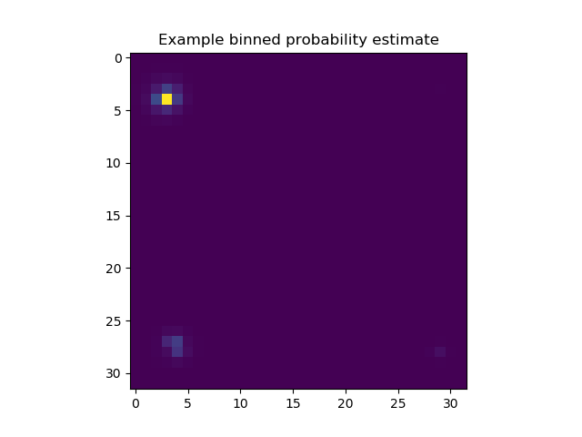

<!DOCTYPE html>
<!--[if IE 8]><html class="no-js lt-ie9" lang="en" > <![endif]-->
<!--[if gt IE 8]><!--> <html class="no-js" lang="en" > <!--<![endif]-->
<head>
  <meta charset="utf-8">
  
  <meta name="viewport" content="width=device-width, initial-scale=1.0">
  
  <title>Decoding binned position probabilities from firing rates with a dense neural network &mdash; mlneuro 1.0 documentation</title>
  

  
  
  
  

  

  
  
    

  

  <link rel="stylesheet" href="../../../_static/css/theme.css" type="text/css" />
  <link rel="stylesheet" href="../../../_static/pygments.css" type="text/css" />
  <link rel="stylesheet" href="../../../_static/gallery.css" type="text/css" />
    <link rel="index" title="Index" href="../../../genindex.html" />
    <link rel="search" title="Search" href="../../../search.html" />
    <link rel="next" title="Decoding binned probabilties from firing rates with naive bayes inversion of poisson tuning curves" href="plot_bayes_poisson.html" />
    <link rel="prev" title="Decoding position from firing rates where bins are different sizes and non-contiguous" href="plot_custom_firing_rate_bins.html" />
    <link href="../../../_static/style.css" rel="stylesheet" type="text/css">


  
  <script src="../../../_static/js/modernizr.min.js"></script>

</head>

<body class="wy-body-for-nav">

   
  <div class="wy-grid-for-nav">

    
    <nav data-toggle="wy-nav-shift" class="wy-nav-side">
      <div class="wy-side-scroll">
        <div class="wy-side-nav-search">
          

          
            <a href="../../../index.html" class="icon icon-home"> mlneuro
          

          
          </a>

          
            
            
          

          
<div role="search">
  <form id="rtd-search-form" class="wy-form" action="../../../search.html" method="get">
    <input type="text" name="q" placeholder="Search docs" />
    <input type="hidden" name="check_keywords" value="yes" />
    <input type="hidden" name="area" value="default" />
  </form>
</div>

          
        </div>

        <div class="wy-menu wy-menu-vertical" data-spy="affix" role="navigation" aria-label="main navigation">
          
            
            
              
            
            
              <ul class="current">
<li class="toctree-l1"><a class="reference internal" href="../../../guide.html">User Guide</a></li>
<li class="toctree-l1"><a class="reference internal" href="../../../api.html">API Reference</a></li>
<li class="toctree-l1 current"><a class="reference internal" href="../../../examples_head.html">Examples</a><ul class="current">
<li class="toctree-l2"><a class="reference internal" href="../clusterless/index.html">Clusterless decoding examples</a></li>
<li class="toctree-l2 current"><a class="reference internal" href="index.html">Clustered spike decoding examples</a><ul class="current">
<li class="toctree-l3"><a class="reference internal" href="plot_basic_densenn.html">Decoding single valued position from firing rates with a dense neural network</a></li>
<li class="toctree-l3"><a class="reference internal" href="plot_recurrent_lstm.html">Decoding position from firing rates with a LSTM recurrent neural network from Keras</a></li>
<li class="toctree-l3"><a class="reference internal" href="plot_sgd_multioutput.html">Decoding position from firing rates with sklearn’s support gradient descent linear model</a></li>
<li class="toctree-l3"><a class="reference internal" href="plot_custom_firing_rate_bins.html">Decoding position from firing rates where bins are different sizes and non-contiguous</a></li>
<li class="toctree-l3 current"><a class="current reference internal" href="#">Decoding binned position probabilities from firing rates with a dense neural network</a><ul>
<li class="toctree-l4"><a class="reference internal" href="#preprocessing">Preprocessing</a></li>
<li class="toctree-l4"><a class="reference internal" href="#estimation">Estimation</a></li>
<li class="toctree-l4"><a class="reference internal" href="#plotting">Plotting</a></li>
</ul>
</li>
<li class="toctree-l3"><a class="reference internal" href="plot_bayes_poisson.html">Decoding binned probabilties from firing rates with naive bayes inversion of poisson tuning curves</a></li>
<li class="toctree-l3"><a class="reference internal" href="plot_bayes_poisson_glm.html">Decoding binned position probabilties from firing rates with naive bayes inversion of a poisson GLM</a></li>
<li class="toctree-l3"><a class="reference internal" href="plot_regressor_comparison.html">Comparison of multiple regression techniques applied to clustered data</a></li>
</ul>
</li>
</ul>
</li>
</ul>

            
          
        </div>
      </div>
    </nav>

    <section data-toggle="wy-nav-shift" class="wy-nav-content-wrap">

      
      <nav class="wy-nav-top" aria-label="top navigation">
        
          <i data-toggle="wy-nav-top" class="fa fa-bars"></i>
          <a href="../../../index.html">mlneuro</a>
        
      </nav>


      <div class="wy-nav-content">
        
        <div class="rst-content">
        
          


<div role="navigation" aria-label="breadcrumbs navigation">

  <ul class="wy-breadcrumbs">
    
      <li><a href="../../../index.html">Docs</a> &raquo;</li>
        
          <li><a href="../../../examples_head.html">Examples</a> &raquo;</li>
        
          <li><a href="index.html">Clustered spike decoding examples</a> &raquo;</li>
        
      <li>Decoding binned position probabilities from firing rates with a dense neural network</li>
    
    
      <li class="wy-breadcrumbs-aside">
        
            
            <a href="../../../_sources/generated/examples/clustered/plot_binned_densenn.rst.txt" rel="nofollow"> View page source</a>
          
        
      </li>
    
  </ul>

  
  <hr/>
</div>
          <div role="main" class="document" itemscope="itemscope" itemtype="http://schema.org/Article">
           <div itemprop="articleBody">
            
  <div class="sphx-glr-download-link-note admonition note">
<p class="first admonition-title">Note</p>
<p class="last">Click <a class="reference internal" href="#sphx-glr-download-generated-examples-clustered-plot-binned-densenn-py"><span class="std std-ref">here</span></a> to download the full example code</p>
</div>
<div class="sphx-glr-example-title section" id="decoding-binned-position-probabilities-from-firing-rates-with-a-dense-neural-network">
<span id="sphx-glr-generated-examples-clustered-plot-binned-densenn-py"></span><h1>Decoding binned position probabilities from firing rates with a dense neural network<a class="headerlink" href="#decoding-binned-position-probabilities-from-firing-rates-with-a-dense-neural-network" title="Permalink to this headline">¶</a></h1>
<p>A dense Keras neural network is used to output probabilities from firing rates
of neurons.</p>
<div class="section" id="preprocessing">
<h2>Preprocessing<a class="headerlink" href="#preprocessing" title="Permalink to this headline">¶</a></h2>
<ol class="arabic simple">
<li>Time is binned over the range of the data</li>
</ol>
<p>2. Spike times and associated cell-ids are used to construct a firing-rate matrix
which is normalized to the maximum firing rate of the cell and includes several
bins before and after the current bin
3. Stimulus values are retrieved at the spike times
4. Variables are split into independent training and test sets</p>
</div>
<div class="section" id="estimation">
<h2>Estimation<a class="headerlink" href="#estimation" title="Permalink to this headline">¶</a></h2>
<ol class="arabic simple">
<li>A pipeline is constructed with a StandardScaler for firing rates a binned version of the DenseNNRegressor</li>
</ol>
<p>2. The neural network is given a high dropout value to prevent overfitting and set to fit for a fast (low) number of epochs
2. Probabilties are estimated over the range of the data</p>
</div>
<div class="section" id="plotting">
<h2>Plotting<a class="headerlink" href="#plotting" title="Permalink to this headline">¶</a></h2>
<p>The predicted value and true value are compared</p>
<ul class="sphx-glr-horizontal">
<li>
</li>
<li>
</li>
<li>
</li>
</ul>
<p class="sphx-glr-script-out">Out:</p>
<div class="sphx-glr-script-out highlight-none notranslate"><div class="highlight"><pre><span></span>Train on 51221 samples, validate on 9040 samples
Epoch 1/20

   32/51221 [..............................] - ETA: 491s - loss: 36507.4141 - categorical_accuracy: 0.0000e+00
  416/51221 [..............................] - ETA: 43s - loss: 35557.2491 - categorical_accuracy: 0.0168     
  800/51221 [..............................] - ETA: 25s - loss: 33943.1421 - categorical_accuracy: 0.0462
 1184/51221 [..............................] - ETA: 19s - loss: 32507.4608 - categorical_accuracy: 0.0608
 1536/51221 [..............................] - ETA: 16s - loss: 31171.3151 - categorical_accuracy: 0.0710
 1920/51221 [&gt;.............................] - ETA: 14s - loss: 30034.1118 - categorical_accuracy: 0.0714
 2304/51221 [&gt;.............................] - ETA: 13s - loss: 29210.8043 - categorical_accuracy: 0.0781
 2656/51221 [&gt;.............................] - ETA: 12s - loss: 28608.9495 - categorical_accuracy: 0.0855
 3040/51221 [&gt;.............................] - ETA: 11s - loss: 28094.6609 - categorical_accuracy: 0.0908
 3424/51221 [=&gt;............................] - ETA: 10s - loss: 27686.1846 - categorical_accuracy: 0.0908
 3776/51221 [=&gt;............................] - ETA: 10s - loss: 27331.6140 - categorical_accuracy: 0.0938
 4160/51221 [=&gt;............................] - ETA: 10s - loss: 26944.4554 - categorical_accuracy: 0.0947
 4512/51221 [=&gt;............................] - ETA: 9s - loss: 26643.9942 - categorical_accuracy: 0.0980 
 4864/51221 [=&gt;............................] - ETA: 9s - loss: 26437.1980 - categorical_accuracy: 0.1018
 5248/51221 [==&gt;...........................] - ETA: 9s - loss: 26193.1910 - categorical_accuracy: 0.1042
 5632/51221 [==&gt;...........................] - ETA: 8s - loss: 26023.3131 - categorical_accuracy: 0.1065
 6016/51221 [==&gt;...........................] - ETA: 8s - loss: 25902.9921 - categorical_accuracy: 0.1069
 6400/51221 [==&gt;...........................] - ETA: 8s - loss: 25725.3516 - categorical_accuracy: 0.1067
 6752/51221 [==&gt;...........................] - ETA: 8s - loss: 25595.3948 - categorical_accuracy: 0.1089
 7136/51221 [===&gt;..........................] - ETA: 8s - loss: 25475.6749 - categorical_accuracy: 0.1094
 7488/51221 [===&gt;..........................] - ETA: 7s - loss: 25348.7827 - categorical_accuracy: 0.1112
 7840/51221 [===&gt;..........................] - ETA: 7s - loss: 25272.0456 - categorical_accuracy: 0.1107
 8224/51221 [===&gt;..........................] - ETA: 7s - loss: 25206.4947 - categorical_accuracy: 0.1111
 8608/51221 [====&gt;.........................] - ETA: 7s - loss: 25118.3521 - categorical_accuracy: 0.1126
 8960/51221 [====&gt;.........................] - ETA: 7s - loss: 25030.2436 - categorical_accuracy: 0.1148
 9344/51221 [====&gt;.........................] - ETA: 7s - loss: 24913.4833 - categorical_accuracy: 0.1171
 9728/51221 [====&gt;.........................] - ETA: 7s - loss: 24822.0249 - categorical_accuracy: 0.1196
10080/51221 [====&gt;.........................] - ETA: 7s - loss: 24733.6746 - categorical_accuracy: 0.1222
10432/51221 [=====&gt;........................] - ETA: 6s - loss: 24661.7248 - categorical_accuracy: 0.1235
10752/51221 [=====&gt;........................] - ETA: 6s - loss: 24592.7649 - categorical_accuracy: 0.1254
11136/51221 [=====&gt;........................] - ETA: 6s - loss: 24515.9062 - categorical_accuracy: 0.1270
11520/51221 [=====&gt;........................] - ETA: 6s - loss: 24402.7558 - categorical_accuracy: 0.1295
11872/51221 [=====&gt;........................] - ETA: 6s - loss: 24343.7057 - categorical_accuracy: 0.1306
12256/51221 [======&gt;.......................] - ETA: 6s - loss: 24255.1182 - categorical_accuracy: 0.1334
12640/51221 [======&gt;.......................] - ETA: 6s - loss: 24176.7077 - categorical_accuracy: 0.1354
12992/51221 [======&gt;.......................] - ETA: 6s - loss: 24098.7652 - categorical_accuracy: 0.1369
13344/51221 [======&gt;.......................] - ETA: 6s - loss: 24043.9639 - categorical_accuracy: 0.1371
13728/51221 [=======&gt;......................] - ETA: 6s - loss: 24007.3032 - categorical_accuracy: 0.1378
14080/51221 [=======&gt;......................] - ETA: 6s - loss: 23958.4664 - categorical_accuracy: 0.1385
14432/51221 [=======&gt;......................] - ETA: 5s - loss: 23890.8347 - categorical_accuracy: 0.1397
14816/51221 [=======&gt;......................] - ETA: 5s - loss: 23831.3057 - categorical_accuracy: 0.1404
15200/51221 [=======&gt;......................] - ETA: 5s - loss: 23772.7353 - categorical_accuracy: 0.1419
15584/51221 [========&gt;.....................] - ETA: 5s - loss: 23711.5114 - categorical_accuracy: 0.1434
15968/51221 [========&gt;.....................] - ETA: 5s - loss: 23654.9181 - categorical_accuracy: 0.1449
16352/51221 [========&gt;.....................] - ETA: 5s - loss: 23588.4571 - categorical_accuracy: 0.1463
16736/51221 [========&gt;.....................] - ETA: 5s - loss: 23520.2965 - categorical_accuracy: 0.1481
17088/51221 [=========&gt;....................] - ETA: 5s - loss: 23457.5104 - categorical_accuracy: 0.1497
17440/51221 [=========&gt;....................] - ETA: 5s - loss: 23412.2456 - categorical_accuracy: 0.1510
17824/51221 [=========&gt;....................] - ETA: 5s - loss: 23368.8688 - categorical_accuracy: 0.1520
18208/51221 [=========&gt;....................] - ETA: 5s - loss: 23320.0506 - categorical_accuracy: 0.1529
18592/51221 [=========&gt;....................] - ETA: 5s - loss: 23258.1144 - categorical_accuracy: 0.1545
18944/51221 [==========&gt;...................] - ETA: 5s - loss: 23188.4971 - categorical_accuracy: 0.1558
19296/51221 [==========&gt;...................] - ETA: 5s - loss: 23145.7225 - categorical_accuracy: 0.1567
19648/51221 [==========&gt;...................] - ETA: 4s - loss: 23101.7867 - categorical_accuracy: 0.1571
20000/51221 [==========&gt;...................] - ETA: 4s - loss: 23045.5685 - categorical_accuracy: 0.1588
20352/51221 [==========&gt;...................] - ETA: 4s - loss: 22986.8049 - categorical_accuracy: 0.1596
20704/51221 [===========&gt;..................] - ETA: 4s - loss: 22941.8227 - categorical_accuracy: 0.1605
21088/51221 [===========&gt;..................] - ETA: 4s - loss: 22902.2569 - categorical_accuracy: 0.1611
21472/51221 [===========&gt;..................] - ETA: 4s - loss: 22854.1852 - categorical_accuracy: 0.1622
21824/51221 [===========&gt;..................] - ETA: 4s - loss: 22810.8290 - categorical_accuracy: 0.1634
22208/51221 [============&gt;.................] - ETA: 4s - loss: 22755.1110 - categorical_accuracy: 0.1653
22560/51221 [============&gt;.................] - ETA: 4s - loss: 22707.2883 - categorical_accuracy: 0.1667
22912/51221 [============&gt;.................] - ETA: 4s - loss: 22659.4153 - categorical_accuracy: 0.1679
23296/51221 [============&gt;.................] - ETA: 4s - loss: 22610.1161 - categorical_accuracy: 0.1693
23680/51221 [============&gt;.................] - ETA: 4s - loss: 22578.2842 - categorical_accuracy: 0.1698
24032/51221 [=============&gt;................] - ETA: 4s - loss: 22547.6304 - categorical_accuracy: 0.1699
24384/51221 [=============&gt;................] - ETA: 4s - loss: 22500.9078 - categorical_accuracy: 0.1711
24736/51221 [=============&gt;................] - ETA: 4s - loss: 22463.8222 - categorical_accuracy: 0.1712
25088/51221 [=============&gt;................] - ETA: 4s - loss: 22422.0140 - categorical_accuracy: 0.1722
25472/51221 [=============&gt;................] - ETA: 3s - loss: 22364.6095 - categorical_accuracy: 0.1739
25824/51221 [==============&gt;...............] - ETA: 3s - loss: 22336.2726 - categorical_accuracy: 0.1740
26176/51221 [==============&gt;...............] - ETA: 3s - loss: 22309.0937 - categorical_accuracy: 0.1743
26528/51221 [==============&gt;...............] - ETA: 3s - loss: 22272.2966 - categorical_accuracy: 0.1754
26880/51221 [==============&gt;...............] - ETA: 3s - loss: 22239.8845 - categorical_accuracy: 0.1762
27264/51221 [==============&gt;...............] - ETA: 3s - loss: 22204.7723 - categorical_accuracy: 0.1770
27616/51221 [===============&gt;..............] - ETA: 3s - loss: 22174.0247 - categorical_accuracy: 0.1771
28000/51221 [===============&gt;..............] - ETA: 3s - loss: 22140.7956 - categorical_accuracy: 0.1779
28384/51221 [===============&gt;..............] - ETA: 3s - loss: 22105.6675 - categorical_accuracy: 0.1784
28768/51221 [===============&gt;..............] - ETA: 3s - loss: 22063.9396 - categorical_accuracy: 0.1794
29120/51221 [================&gt;.............] - ETA: 3s - loss: 22028.6335 - categorical_accuracy: 0.1798
29472/51221 [================&gt;.............] - ETA: 3s - loss: 21991.5324 - categorical_accuracy: 0.1807
29824/51221 [================&gt;.............] - ETA: 3s - loss: 21964.0917 - categorical_accuracy: 0.1808
30208/51221 [================&gt;.............] - ETA: 3s - loss: 21933.2172 - categorical_accuracy: 0.1813
30560/51221 [================&gt;.............] - ETA: 3s - loss: 21903.2070 - categorical_accuracy: 0.1823
30944/51221 [=================&gt;............] - ETA: 3s - loss: 21871.8806 - categorical_accuracy: 0.1829
31328/51221 [=================&gt;............] - ETA: 3s - loss: 21831.2373 - categorical_accuracy: 0.1837
31712/51221 [=================&gt;............] - ETA: 2s - loss: 21802.2426 - categorical_accuracy: 0.1841
32064/51221 [=================&gt;............] - ETA: 2s - loss: 21763.6480 - categorical_accuracy: 0.1852
32448/51221 [==================&gt;...........] - ETA: 2s - loss: 21740.6667 - categorical_accuracy: 0.1856
32832/51221 [==================&gt;...........] - ETA: 2s - loss: 21709.6114 - categorical_accuracy: 0.1859
33216/51221 [==================&gt;...........] - ETA: 2s - loss: 21676.6504 - categorical_accuracy: 0.1862
33600/51221 [==================&gt;...........] - ETA: 2s - loss: 21649.2441 - categorical_accuracy: 0.1863
33984/51221 [==================&gt;...........] - ETA: 2s - loss: 21622.3141 - categorical_accuracy: 0.1866
34368/51221 [===================&gt;..........] - ETA: 2s - loss: 21585.0928 - categorical_accuracy: 0.1873
34752/51221 [===================&gt;..........] - ETA: 2s - loss: 21556.2445 - categorical_accuracy: 0.1879
35104/51221 [===================&gt;..........] - ETA: 2s - loss: 21526.5873 - categorical_accuracy: 0.1884
35488/51221 [===================&gt;..........] - ETA: 2s - loss: 21502.5571 - categorical_accuracy: 0.1888
35872/51221 [====================&gt;.........] - ETA: 2s - loss: 21467.6487 - categorical_accuracy: 0.1896
36256/51221 [====================&gt;.........] - ETA: 2s - loss: 21439.1188 - categorical_accuracy: 0.1899
36608/51221 [====================&gt;.........] - ETA: 2s - loss: 21410.8144 - categorical_accuracy: 0.1906
36992/51221 [====================&gt;.........] - ETA: 2s - loss: 21377.4870 - categorical_accuracy: 0.1915
37376/51221 [====================&gt;.........] - ETA: 2s - loss: 21350.4660 - categorical_accuracy: 0.1917
37760/51221 [=====================&gt;........] - ETA: 2s - loss: 21320.5631 - categorical_accuracy: 0.1922
38144/51221 [=====================&gt;........] - ETA: 1s - loss: 21291.8151 - categorical_accuracy: 0.1927
38496/51221 [=====================&gt;........] - ETA: 1s - loss: 21265.7855 - categorical_accuracy: 0.1932
38848/51221 [=====================&gt;........] - ETA: 1s - loss: 21241.8910 - categorical_accuracy: 0.1938
39200/51221 [=====================&gt;........] - ETA: 1s - loss: 21210.6953 - categorical_accuracy: 0.1943
39584/51221 [======================&gt;.......] - ETA: 1s - loss: 21186.5096 - categorical_accuracy: 0.1948
39968/51221 [======================&gt;.......] - ETA: 1s - loss: 21153.1272 - categorical_accuracy: 0.1952
40320/51221 [======================&gt;.......] - ETA: 1s - loss: 21129.0848 - categorical_accuracy: 0.1956
40704/51221 [======================&gt;.......] - ETA: 1s - loss: 21101.3063 - categorical_accuracy: 0.1960
41088/51221 [=======================&gt;......] - ETA: 1s - loss: 21070.1799 - categorical_accuracy: 0.1968
41440/51221 [=======================&gt;......] - ETA: 1s - loss: 21045.9885 - categorical_accuracy: 0.1972
41792/51221 [=======================&gt;......] - ETA: 1s - loss: 21028.6182 - categorical_accuracy: 0.1972
42144/51221 [=======================&gt;......] - ETA: 1s - loss: 21007.2802 - categorical_accuracy: 0.1973
42528/51221 [=======================&gt;......] - ETA: 1s - loss: 20977.8399 - categorical_accuracy: 0.1978
42880/51221 [========================&gt;.....] - ETA: 1s - loss: 20951.8405 - categorical_accuracy: 0.1982
43264/51221 [========================&gt;.....] - ETA: 1s - loss: 20929.1358 - categorical_accuracy: 0.1987
43616/51221 [========================&gt;.....] - ETA: 1s - loss: 20908.6013 - categorical_accuracy: 0.1986
44000/51221 [========================&gt;.....] - ETA: 1s - loss: 20873.3527 - categorical_accuracy: 0.1990
44384/51221 [========================&gt;.....] - ETA: 1s - loss: 20849.8038 - categorical_accuracy: 0.1994
44736/51221 [=========================&gt;....] - ETA: 0s - loss: 20832.1361 - categorical_accuracy: 0.1994
45088/51221 [=========================&gt;....] - ETA: 0s - loss: 20810.7811 - categorical_accuracy: 0.1995
45440/51221 [=========================&gt;....] - ETA: 0s - loss: 20794.7868 - categorical_accuracy: 0.1996
45792/51221 [=========================&gt;....] - ETA: 0s - loss: 20768.9481 - categorical_accuracy: 0.1999
46176/51221 [==========================&gt;...] - ETA: 0s - loss: 20753.2678 - categorical_accuracy: 0.2000
46528/51221 [==========================&gt;...] - ETA: 0s - loss: 20729.1130 - categorical_accuracy: 0.2003
46880/51221 [==========================&gt;...] - ETA: 0s - loss: 20712.6848 - categorical_accuracy: 0.2004
47264/51221 [==========================&gt;...] - ETA: 0s - loss: 20692.2138 - categorical_accuracy: 0.2007
47648/51221 [==========================&gt;...] - ETA: 0s - loss: 20669.2344 - categorical_accuracy: 0.2009
48032/51221 [===========================&gt;..] - ETA: 0s - loss: 20644.8713 - categorical_accuracy: 0.2013
48384/51221 [===========================&gt;..] - ETA: 0s - loss: 20624.4474 - categorical_accuracy: 0.2016
48736/51221 [===========================&gt;..] - ETA: 0s - loss: 20600.1857 - categorical_accuracy: 0.2020
49120/51221 [===========================&gt;..] - ETA: 0s - loss: 20582.1118 - categorical_accuracy: 0.2022
49504/51221 [===========================&gt;..] - ETA: 0s - loss: 20557.0838 - categorical_accuracy: 0.2028
49888/51221 [============================&gt;.] - ETA: 0s - loss: 20530.6247 - categorical_accuracy: 0.2033
50240/51221 [============================&gt;.] - ETA: 0s - loss: 20510.4379 - categorical_accuracy: 0.2036
50592/51221 [============================&gt;.] - ETA: 0s - loss: 20486.7504 - categorical_accuracy: 0.2039
50944/51221 [============================&gt;.] - ETA: 0s - loss: 20467.4958 - categorical_accuracy: 0.2042
51221/51221 [==============================] - 8s - loss: 20455.5887 - categorical_accuracy: 0.2043 - val_loss: 16836.7582 - val_categorical_accuracy: 0.2571
Epoch 2/20

   32/51221 [..............................] - ETA: 10s - loss: 17450.7656 - categorical_accuracy: 0.1875
  416/51221 [..............................] - ETA: 7s - loss: 17654.4513 - categorical_accuracy: 0.2452 
  800/51221 [..............................] - ETA: 7s - loss: 17377.0970 - categorical_accuracy: 0.2512
 1152/51221 [..............................] - ETA: 7s - loss: 17333.0558 - categorical_accuracy: 0.2517
 1536/51221 [..............................] - ETA: 7s - loss: 17382.1745 - categorical_accuracy: 0.2461
 1856/51221 [&gt;.............................] - ETA: 7s - loss: 17379.1651 - categorical_accuracy: 0.2425
 2240/51221 [&gt;.............................] - ETA: 7s - loss: 17589.8832 - categorical_accuracy: 0.2411
 2592/51221 [&gt;.............................] - ETA: 7s - loss: 17659.2971 - categorical_accuracy: 0.2404
 2976/51221 [&gt;.............................] - ETA: 6s - loss: 17608.8905 - categorical_accuracy: 0.2450
 3360/51221 [&gt;.............................] - ETA: 6s - loss: 17571.7975 - categorical_accuracy: 0.2491
 3744/51221 [=&gt;............................] - ETA: 6s - loss: 17528.8948 - categorical_accuracy: 0.2489
 4096/51221 [=&gt;............................] - ETA: 6s - loss: 17480.4894 - categorical_accuracy: 0.2507
 4448/51221 [=&gt;............................] - ETA: 6s - loss: 17500.7373 - categorical_accuracy: 0.2509
 4832/51221 [=&gt;............................] - ETA: 6s - loss: 17480.3122 - categorical_accuracy: 0.2546
 5216/51221 [==&gt;...........................] - ETA: 6s - loss: 17433.6933 - categorical_accuracy: 0.2550
 5600/51221 [==&gt;...........................] - ETA: 6s - loss: 17384.3718 - categorical_accuracy: 0.2557
 5984/51221 [==&gt;...........................] - ETA: 6s - loss: 17394.1394 - categorical_accuracy: 0.2555
 6368/51221 [==&gt;...........................] - ETA: 6s - loss: 17354.0278 - categorical_accuracy: 0.2553
 6752/51221 [==&gt;...........................] - ETA: 6s - loss: 17324.7762 - categorical_accuracy: 0.2555
 7104/51221 [===&gt;..........................] - ETA: 6s - loss: 17272.7008 - categorical_accuracy: 0.2549
 7456/51221 [===&gt;..........................] - ETA: 6s - loss: 17286.6657 - categorical_accuracy: 0.2559
 7840/51221 [===&gt;..........................] - ETA: 6s - loss: 17267.0869 - categorical_accuracy: 0.2546
 8224/51221 [===&gt;..........................] - ETA: 6s - loss: 17259.3963 - categorical_accuracy: 0.2541
 8608/51221 [====&gt;.........................] - ETA: 6s - loss: 17259.8467 - categorical_accuracy: 0.2543
 8960/51221 [====&gt;.........................] - ETA: 5s - loss: 17242.2558 - categorical_accuracy: 0.2545
 9312/51221 [====&gt;.........................] - ETA: 5s - loss: 17243.2911 - categorical_accuracy: 0.2548
 9664/51221 [====&gt;.........................] - ETA: 5s - loss: 17242.0116 - categorical_accuracy: 0.2541
10016/51221 [====&gt;.........................] - ETA: 5s - loss: 17228.3757 - categorical_accuracy: 0.2536
10368/51221 [=====&gt;........................] - ETA: 5s - loss: 17212.9662 - categorical_accuracy: 0.2538
10752/51221 [=====&gt;........................] - ETA: 5s - loss: 17197.7868 - categorical_accuracy: 0.2535
11104/51221 [=====&gt;........................] - ETA: 5s - loss: 17168.2289 - categorical_accuracy: 0.2547
11456/51221 [=====&gt;........................] - ETA: 5s - loss: 17166.1279 - categorical_accuracy: 0.2561
11808/51221 [=====&gt;........................] - ETA: 5s - loss: 17169.1331 - categorical_accuracy: 0.2569
12192/51221 [======&gt;.......................] - ETA: 5s - loss: 17151.6177 - categorical_accuracy: 0.2582
12576/51221 [======&gt;.......................] - ETA: 5s - loss: 17148.8122 - categorical_accuracy: 0.2583
12960/51221 [======&gt;.......................] - ETA: 5s - loss: 17146.5773 - categorical_accuracy: 0.2582
13280/51221 [======&gt;.......................] - ETA: 5s - loss: 17136.4977 - categorical_accuracy: 0.2578
13632/51221 [======&gt;.......................] - ETA: 5s - loss: 17117.8016 - categorical_accuracy: 0.2586
13984/51221 [=======&gt;......................] - ETA: 5s - loss: 17096.7001 - categorical_accuracy: 0.2597
14368/51221 [=======&gt;......................] - ETA: 5s - loss: 17083.2465 - categorical_accuracy: 0.2599
14752/51221 [=======&gt;......................] - ETA: 5s - loss: 17073.3600 - categorical_accuracy: 0.2604
15104/51221 [=======&gt;......................] - ETA: 5s - loss: 17081.0600 - categorical_accuracy: 0.2595
15488/51221 [========&gt;.....................] - ETA: 5s - loss: 17058.1716 - categorical_accuracy: 0.2603
15840/51221 [========&gt;.....................] - ETA: 5s - loss: 17052.0521 - categorical_accuracy: 0.2605
16224/51221 [========&gt;.....................] - ETA: 4s - loss: 17037.9721 - categorical_accuracy: 0.2607
16576/51221 [========&gt;.....................] - ETA: 4s - loss: 17043.2462 - categorical_accuracy: 0.2599
16960/51221 [========&gt;.....................] - ETA: 4s - loss: 17035.7569 - categorical_accuracy: 0.2603
17312/51221 [=========&gt;....................] - ETA: 4s - loss: 17036.4036 - categorical_accuracy: 0.2596
17664/51221 [=========&gt;....................] - ETA: 4s - loss: 17032.5361 - categorical_accuracy: 0.2600
18048/51221 [=========&gt;....................] - ETA: 4s - loss: 17018.8663 - categorical_accuracy: 0.2599
18400/51221 [=========&gt;....................] - ETA: 4s - loss: 17017.3010 - categorical_accuracy: 0.2601
18752/51221 [=========&gt;....................] - ETA: 4s - loss: 17004.1926 - categorical_accuracy: 0.2609
19136/51221 [==========&gt;...................] - ETA: 4s - loss: 16982.2016 - categorical_accuracy: 0.2611
19520/51221 [==========&gt;...................] - ETA: 4s - loss: 16968.2895 - categorical_accuracy: 0.2622
19872/51221 [==========&gt;...................] - ETA: 4s - loss: 16954.4588 - categorical_accuracy: 0.2626
20288/51221 [==========&gt;...................] - ETA: 4s - loss: 16953.1430 - categorical_accuracy: 0.2624
20672/51221 [===========&gt;..................] - ETA: 4s - loss: 16961.8949 - categorical_accuracy: 0.2621
21024/51221 [===========&gt;..................] - ETA: 4s - loss: 16959.7557 - categorical_accuracy: 0.2622
21376/51221 [===========&gt;..................] - ETA: 4s - loss: 16953.1141 - categorical_accuracy: 0.2622
21728/51221 [===========&gt;..................] - ETA: 4s - loss: 16951.3105 - categorical_accuracy: 0.2622
22112/51221 [===========&gt;..................] - ETA: 4s - loss: 16946.3710 - categorical_accuracy: 0.2624
22496/51221 [============&gt;.................] - ETA: 4s - loss: 16944.9659 - categorical_accuracy: 0.2623
22912/51221 [============&gt;.................] - ETA: 4s - loss: 16930.4439 - categorical_accuracy: 0.2623
23264/51221 [============&gt;.................] - ETA: 3s - loss: 16921.2838 - categorical_accuracy: 0.2622
23680/51221 [============&gt;.................] - ETA: 3s - loss: 16908.4893 - categorical_accuracy: 0.2623
24032/51221 [=============&gt;................] - ETA: 3s - loss: 16893.5316 - categorical_accuracy: 0.2624
24384/51221 [=============&gt;................] - ETA: 3s - loss: 16883.1581 - categorical_accuracy: 0.2623
24768/51221 [=============&gt;................] - ETA: 3s - loss: 16885.0533 - categorical_accuracy: 0.2615
25152/51221 [=============&gt;................] - ETA: 3s - loss: 16875.1978 - categorical_accuracy: 0.2621
25504/51221 [=============&gt;................] - ETA: 3s - loss: 16876.4284 - categorical_accuracy: 0.2618
25888/51221 [==============&gt;...............] - ETA: 3s - loss: 16876.0733 - categorical_accuracy: 0.2614
26272/51221 [==============&gt;...............] - ETA: 3s - loss: 16876.8125 - categorical_accuracy: 0.2609
26624/51221 [==============&gt;...............] - ETA: 3s - loss: 16882.8330 - categorical_accuracy: 0.2612
27008/51221 [==============&gt;...............] - ETA: 3s - loss: 16878.4042 - categorical_accuracy: 0.2610
27392/51221 [===============&gt;..............] - ETA: 3s - loss: 16870.9546 - categorical_accuracy: 0.2609
27744/51221 [===============&gt;..............] - ETA: 3s - loss: 16867.2983 - categorical_accuracy: 0.2611
28096/51221 [===============&gt;..............] - ETA: 3s - loss: 16852.4269 - categorical_accuracy: 0.2620
28480/51221 [===============&gt;..............] - ETA: 3s - loss: 16850.2755 - categorical_accuracy: 0.2619
28832/51221 [===============&gt;..............] - ETA: 3s - loss: 16838.5788 - categorical_accuracy: 0.2623
29184/51221 [================&gt;.............] - ETA: 3s - loss: 16824.4599 - categorical_accuracy: 0.2625
29536/51221 [================&gt;.............] - ETA: 3s - loss: 16815.7321 - categorical_accuracy: 0.2628
29888/51221 [================&gt;.............] - ETA: 3s - loss: 16806.6349 - categorical_accuracy: 0.2629
30240/51221 [================&gt;.............] - ETA: 2s - loss: 16788.8178 - categorical_accuracy: 0.2634
30624/51221 [================&gt;.............] - ETA: 2s - loss: 16786.3578 - categorical_accuracy: 0.2630
31008/51221 [=================&gt;............] - ETA: 2s - loss: 16781.9684 - categorical_accuracy: 0.2628
31392/51221 [=================&gt;............] - ETA: 2s - loss: 16777.9728 - categorical_accuracy: 0.2630
31744/51221 [=================&gt;............] - ETA: 2s - loss: 16771.0640 - categorical_accuracy: 0.2631
32096/51221 [=================&gt;............] - ETA: 2s - loss: 16757.6547 - categorical_accuracy: 0.2636
32448/51221 [==================&gt;...........] - ETA: 2s - loss: 16746.7597 - categorical_accuracy: 0.2636
32832/51221 [==================&gt;...........] - ETA: 2s - loss: 16739.0362 - categorical_accuracy: 0.2641
33216/51221 [==================&gt;...........] - ETA: 2s - loss: 16736.2752 - categorical_accuracy: 0.2643
33568/51221 [==================&gt;...........] - ETA: 2s - loss: 16725.8118 - categorical_accuracy: 0.2644
33920/51221 [==================&gt;...........] - ETA: 2s - loss: 16729.3723 - categorical_accuracy: 0.2641
34272/51221 [===================&gt;..........] - ETA: 2s - loss: 16722.2282 - categorical_accuracy: 0.2642
34624/51221 [===================&gt;..........] - ETA: 2s - loss: 16712.3780 - categorical_accuracy: 0.2640
35008/51221 [===================&gt;..........] - ETA: 2s - loss: 16710.2054 - categorical_accuracy: 0.2639
35392/51221 [===================&gt;..........] - ETA: 2s - loss: 16697.4853 - categorical_accuracy: 0.2642
35776/51221 [===================&gt;..........] - ETA: 2s - loss: 16693.1072 - categorical_accuracy: 0.2647
36128/51221 [====================&gt;.........] - ETA: 2s - loss: 16674.4318 - categorical_accuracy: 0.2657
36480/51221 [====================&gt;.........] - ETA: 2s - loss: 16664.6137 - categorical_accuracy: 0.2659
36864/51221 [====================&gt;.........] - ETA: 2s - loss: 16658.2255 - categorical_accuracy: 0.2661
37248/51221 [====================&gt;.........] - ETA: 1s - loss: 16649.9883 - categorical_accuracy: 0.2663
37600/51221 [=====================&gt;........] - ETA: 1s - loss: 16641.5947 - categorical_accuracy: 0.2665
37984/51221 [=====================&gt;........] - ETA: 1s - loss: 16634.7061 - categorical_accuracy: 0.2669
38336/51221 [=====================&gt;........] - ETA: 1s - loss: 16626.9505 - categorical_accuracy: 0.2669
38720/51221 [=====================&gt;........] - ETA: 1s - loss: 16630.2141 - categorical_accuracy: 0.2668
39104/51221 [=====================&gt;........] - ETA: 1s - loss: 16628.4645 - categorical_accuracy: 0.2669
39456/51221 [======================&gt;.......] - ETA: 1s - loss: 16623.1665 - categorical_accuracy: 0.2671
39840/51221 [======================&gt;.......] - ETA: 1s - loss: 16619.6823 - categorical_accuracy: 0.2671
40192/51221 [======================&gt;.......] - ETA: 1s - loss: 16613.3744 - categorical_accuracy: 0.2671
40576/51221 [======================&gt;.......] - ETA: 1s - loss: 16607.2944 - categorical_accuracy: 0.2672
40960/51221 [======================&gt;.......] - ETA: 1s - loss: 16603.6104 - categorical_accuracy: 0.2672
41312/51221 [=======================&gt;......] - ETA: 1s - loss: 16602.0988 - categorical_accuracy: 0.2671
41696/51221 [=======================&gt;......] - ETA: 1s - loss: 16593.8050 - categorical_accuracy: 0.2673
42080/51221 [=======================&gt;......] - ETA: 1s - loss: 16585.1540 - categorical_accuracy: 0.2678
42464/51221 [=======================&gt;......] - ETA: 1s - loss: 16579.1893 - categorical_accuracy: 0.2678
42848/51221 [========================&gt;.....] - ETA: 1s - loss: 16578.7758 - categorical_accuracy: 0.2677
43232/51221 [========================&gt;.....] - ETA: 1s - loss: 16569.9396 - categorical_accuracy: 0.2678
43616/51221 [========================&gt;.....] - ETA: 1s - loss: 16553.9959 - categorical_accuracy: 0.2685
43968/51221 [========================&gt;.....] - ETA: 1s - loss: 16554.7589 - categorical_accuracy: 0.2683
44320/51221 [========================&gt;.....] - ETA: 0s - loss: 16552.5036 - categorical_accuracy: 0.2681
44672/51221 [=========================&gt;....] - ETA: 0s - loss: 16549.4309 - categorical_accuracy: 0.2680
45024/51221 [=========================&gt;....] - ETA: 0s - loss: 16543.2033 - categorical_accuracy: 0.2680
45376/51221 [=========================&gt;....] - ETA: 0s - loss: 16537.6392 - categorical_accuracy: 0.2680
45728/51221 [=========================&gt;....] - ETA: 0s - loss: 16531.7969 - categorical_accuracy: 0.2683
46080/51221 [=========================&gt;....] - ETA: 0s - loss: 16526.2098 - categorical_accuracy: 0.2682
46464/51221 [==========================&gt;...] - ETA: 0s - loss: 16521.9933 - categorical_accuracy: 0.2685
46816/51221 [==========================&gt;...] - ETA: 0s - loss: 16517.4247 - categorical_accuracy: 0.2685
47200/51221 [==========================&gt;...] - ETA: 0s - loss: 16513.7112 - categorical_accuracy: 0.2684
47552/51221 [==========================&gt;...] - ETA: 0s - loss: 16508.3261 - categorical_accuracy: 0.2685
47904/51221 [===========================&gt;..] - ETA: 0s - loss: 16506.4527 - categorical_accuracy: 0.2685
48288/51221 [===========================&gt;..] - ETA: 0s - loss: 16498.9341 - categorical_accuracy: 0.2687
48672/51221 [===========================&gt;..] - ETA: 0s - loss: 16489.1602 - categorical_accuracy: 0.2689
49056/51221 [===========================&gt;..] - ETA: 0s - loss: 16484.6027 - categorical_accuracy: 0.2692
49440/51221 [===========================&gt;..] - ETA: 0s - loss: 16480.5720 - categorical_accuracy: 0.2692
49792/51221 [============================&gt;.] - ETA: 0s - loss: 16473.4073 - categorical_accuracy: 0.2691
50176/51221 [============================&gt;.] - ETA: 0s - loss: 16464.1513 - categorical_accuracy: 0.2693
50560/51221 [============================&gt;.] - ETA: 0s - loss: 16468.1389 - categorical_accuracy: 0.2693
50912/51221 [============================&gt;.] - ETA: 0s - loss: 16464.5981 - categorical_accuracy: 0.2693
51221/51221 [==============================] - 7s - loss: 16465.1173 - categorical_accuracy: 0.2691 - val_loss: 14884.0832 - val_categorical_accuracy: 0.2789
Epoch 3/20

   32/51221 [..............................] - ETA: 9s - loss: 14873.7910 - categorical_accuracy: 0.2188
  384/51221 [..............................] - ETA: 7s - loss: 15706.2344 - categorical_accuracy: 0.2969
  768/51221 [..............................] - ETA: 7s - loss: 15469.3975 - categorical_accuracy: 0.2982
 1152/51221 [..............................] - ETA: 7s - loss: 15365.6899 - categorical_accuracy: 0.3038
 1536/51221 [..............................] - ETA: 6s - loss: 15378.3509 - categorical_accuracy: 0.2949
 1920/51221 [&gt;.............................] - ETA: 6s - loss: 15458.2069 - categorical_accuracy: 0.2906
 2272/51221 [&gt;.............................] - ETA: 6s - loss: 15468.4181 - categorical_accuracy: 0.2879
 2656/51221 [&gt;.............................] - ETA: 6s - loss: 15537.7710 - categorical_accuracy: 0.2895
 3008/51221 [&gt;.............................] - ETA: 6s - loss: 15501.9014 - categorical_accuracy: 0.2922
 3392/51221 [&gt;.............................] - ETA: 6s - loss: 15460.2843 - categorical_accuracy: 0.2925
 3744/51221 [=&gt;............................] - ETA: 6s - loss: 15516.1307 - categorical_accuracy: 0.2895
 4128/51221 [=&gt;............................] - ETA: 6s - loss: 15459.5284 - categorical_accuracy: 0.2948
 4512/51221 [=&gt;............................] - ETA: 6s - loss: 15471.9726 - categorical_accuracy: 0.2939
 4896/51221 [=&gt;............................] - ETA: 6s - loss: 15467.1311 - categorical_accuracy: 0.2949
 5280/51221 [==&gt;...........................] - ETA: 6s - loss: 15434.1416 - categorical_accuracy: 0.2938
 5600/51221 [==&gt;...........................] - ETA: 6s - loss: 15421.8853 - categorical_accuracy: 0.2923
 5952/51221 [==&gt;...........................] - ETA: 6s - loss: 15421.4644 - categorical_accuracy: 0.2923
 6304/51221 [==&gt;...........................] - ETA: 6s - loss: 15422.9611 - categorical_accuracy: 0.2938
 6656/51221 [==&gt;...........................] - ETA: 6s - loss: 15404.2316 - categorical_accuracy: 0.2946
 7008/51221 [===&gt;..........................] - ETA: 6s - loss: 15401.6281 - categorical_accuracy: 0.2938
 7392/51221 [===&gt;..........................] - ETA: 6s - loss: 15397.2951 - categorical_accuracy: 0.2944
 7776/51221 [===&gt;..........................] - ETA: 6s - loss: 15385.8111 - categorical_accuracy: 0.2932
 8160/51221 [===&gt;..........................] - ETA: 6s - loss: 15389.2488 - categorical_accuracy: 0.2942
 8512/51221 [===&gt;..........................] - ETA: 6s - loss: 15388.8725 - categorical_accuracy: 0.2936
 8896/51221 [====&gt;.........................] - ETA: 5s - loss: 15371.4686 - categorical_accuracy: 0.2940
 9280/51221 [====&gt;.........................] - ETA: 5s - loss: 15374.6063 - categorical_accuracy: 0.2931
 9664/51221 [====&gt;.........................] - ETA: 5s - loss: 15379.5899 - categorical_accuracy: 0.2943
10016/51221 [====&gt;.........................] - ETA: 5s - loss: 15412.0985 - categorical_accuracy: 0.2928
10400/51221 [=====&gt;........................] - ETA: 5s - loss: 15416.6607 - categorical_accuracy: 0.2938
10752/51221 [=====&gt;........................] - ETA: 5s - loss: 15388.0362 - categorical_accuracy: 0.2942
11136/51221 [=====&gt;........................] - ETA: 5s - loss: 15367.5814 - categorical_accuracy: 0.2950
11488/51221 [=====&gt;........................] - ETA: 5s - loss: 15353.2788 - categorical_accuracy: 0.2957
11840/51221 [=====&gt;........................] - ETA: 5s - loss: 15369.5837 - categorical_accuracy: 0.2961
12192/51221 [======&gt;.......................] - ETA: 5s - loss: 15353.7896 - categorical_accuracy: 0.2970
12544/51221 [======&gt;.......................] - ETA: 5s - loss: 15344.3337 - categorical_accuracy: 0.2974
12896/51221 [======&gt;.......................] - ETA: 5s - loss: 15338.5277 - categorical_accuracy: 0.2972
13280/51221 [======&gt;.......................] - ETA: 5s - loss: 15321.0246 - categorical_accuracy: 0.2981
13664/51221 [=======&gt;......................] - ETA: 5s - loss: 15320.1152 - categorical_accuracy: 0.2982
14048/51221 [=======&gt;......................] - ETA: 5s - loss: 15309.0961 - categorical_accuracy: 0.2986
14400/51221 [=======&gt;......................] - ETA: 5s - loss: 15289.3836 - categorical_accuracy: 0.2992
14752/51221 [=======&gt;......................] - ETA: 5s - loss: 15297.5943 - categorical_accuracy: 0.2994
15104/51221 [=======&gt;......................] - ETA: 5s - loss: 15291.8124 - categorical_accuracy: 0.3003
15488/51221 [========&gt;.....................] - ETA: 5s - loss: 15292.3169 - categorical_accuracy: 0.3006
15872/51221 [========&gt;.....................] - ETA: 5s - loss: 15267.9057 - categorical_accuracy: 0.3010
16224/51221 [========&gt;.....................] - ETA: 4s - loss: 15264.1034 - categorical_accuracy: 0.2999
16608/51221 [========&gt;.....................] - ETA: 4s - loss: 15271.4646 - categorical_accuracy: 0.3000
16992/51221 [========&gt;.....................] - ETA: 4s - loss: 15259.1306 - categorical_accuracy: 0.3006
17344/51221 [=========&gt;....................] - ETA: 4s - loss: 15242.9710 - categorical_accuracy: 0.3014
17728/51221 [=========&gt;....................] - ETA: 4s - loss: 15234.5281 - categorical_accuracy: 0.3016
18080/51221 [=========&gt;....................] - ETA: 4s - loss: 15230.3685 - categorical_accuracy: 0.3012
18432/51221 [=========&gt;....................] - ETA: 4s - loss: 15234.6590 - categorical_accuracy: 0.3012
18784/51221 [==========&gt;...................] - ETA: 4s - loss: 15242.7669 - categorical_accuracy: 0.3012
19136/51221 [==========&gt;...................] - ETA: 4s - loss: 15247.5118 - categorical_accuracy: 0.3007
19520/51221 [==========&gt;...................] - ETA: 4s - loss: 15246.6413 - categorical_accuracy: 0.3007
19872/51221 [==========&gt;...................] - ETA: 4s - loss: 15247.7010 - categorical_accuracy: 0.3005
20256/51221 [==========&gt;...................] - ETA: 4s - loss: 15231.9117 - categorical_accuracy: 0.3011
20608/51221 [===========&gt;..................] - ETA: 4s - loss: 15221.3471 - categorical_accuracy: 0.3015
20960/51221 [===========&gt;..................] - ETA: 4s - loss: 15216.1977 - categorical_accuracy: 0.3017
21312/51221 [===========&gt;..................] - ETA: 4s - loss: 15219.1914 - categorical_accuracy: 0.3022
21664/51221 [===========&gt;..................] - ETA: 4s - loss: 15218.2678 - categorical_accuracy: 0.3027
22048/51221 [===========&gt;..................] - ETA: 4s - loss: 15206.6135 - categorical_accuracy: 0.3022
22400/51221 [============&gt;.................] - ETA: 4s - loss: 15201.9589 - categorical_accuracy: 0.3022
22752/51221 [============&gt;.................] - ETA: 4s - loss: 15196.4663 - categorical_accuracy: 0.3029
23104/51221 [============&gt;.................] - ETA: 3s - loss: 15193.0779 - categorical_accuracy: 0.3032
23488/51221 [============&gt;.................] - ETA: 3s - loss: 15187.9308 - categorical_accuracy: 0.3034
23808/51221 [============&gt;.................] - ETA: 3s - loss: 15186.0067 - categorical_accuracy: 0.3032
24160/51221 [=============&gt;................] - ETA: 3s - loss: 15174.7580 - categorical_accuracy: 0.3036
24544/51221 [=============&gt;................] - ETA: 3s - loss: 15172.5426 - categorical_accuracy: 0.3037
24928/51221 [=============&gt;................] - ETA: 3s - loss: 15158.6547 - categorical_accuracy: 0.3043
25312/51221 [=============&gt;................] - ETA: 3s - loss: 15154.7444 - categorical_accuracy: 0.3043
25664/51221 [==============&gt;...............] - ETA: 3s - loss: 15150.5059 - categorical_accuracy: 0.3042
26048/51221 [==============&gt;...............] - ETA: 3s - loss: 15161.3239 - categorical_accuracy: 0.3041
26432/51221 [==============&gt;...............] - ETA: 3s - loss: 15157.9910 - categorical_accuracy: 0.3039
26784/51221 [==============&gt;...............] - ETA: 3s - loss: 15150.9128 - categorical_accuracy: 0.3041
27136/51221 [==============&gt;...............] - ETA: 3s - loss: 15153.4417 - categorical_accuracy: 0.3044
27520/51221 [===============&gt;..............] - ETA: 3s - loss: 15158.8067 - categorical_accuracy: 0.3039
27872/51221 [===============&gt;..............] - ETA: 3s - loss: 15150.8708 - categorical_accuracy: 0.3040
28224/51221 [===============&gt;..............] - ETA: 3s - loss: 15150.6247 - categorical_accuracy: 0.3040
28576/51221 [===============&gt;..............] - ETA: 3s - loss: 15143.8908 - categorical_accuracy: 0.3042
28960/51221 [===============&gt;..............] - ETA: 3s - loss: 15122.5407 - categorical_accuracy: 0.3052
29344/51221 [================&gt;.............] - ETA: 3s - loss: 15127.5272 - categorical_accuracy: 0.3045
29696/51221 [================&gt;.............] - ETA: 3s - loss: 15127.0637 - categorical_accuracy: 0.3045
30048/51221 [================&gt;.............] - ETA: 3s - loss: 15120.5854 - categorical_accuracy: 0.3049
30400/51221 [================&gt;.............] - ETA: 2s - loss: 15118.6951 - categorical_accuracy: 0.3051
30752/51221 [=================&gt;............] - ETA: 2s - loss: 15122.2057 - categorical_accuracy: 0.3044
31136/51221 [=================&gt;............] - ETA: 2s - loss: 15133.4211 - categorical_accuracy: 0.3039
31520/51221 [=================&gt;............] - ETA: 2s - loss: 15130.3592 - categorical_accuracy: 0.3040
31904/51221 [=================&gt;............] - ETA: 2s - loss: 15128.6570 - categorical_accuracy: 0.3039
32288/51221 [=================&gt;............] - ETA: 2s - loss: 15123.9868 - categorical_accuracy: 0.3037
32640/51221 [==================&gt;...........] - ETA: 2s - loss: 15125.1614 - categorical_accuracy: 0.3036
32992/51221 [==================&gt;...........] - ETA: 2s - loss: 15123.4010 - categorical_accuracy: 0.3037
33344/51221 [==================&gt;...........] - ETA: 2s - loss: 15117.0218 - categorical_accuracy: 0.3037
33696/51221 [==================&gt;...........] - ETA: 2s - loss: 15115.6963 - categorical_accuracy: 0.3036
34048/51221 [==================&gt;...........] - ETA: 2s - loss: 15114.0518 - categorical_accuracy: 0.3040
34432/51221 [===================&gt;..........] - ETA: 2s - loss: 15111.0657 - categorical_accuracy: 0.3035
34752/51221 [===================&gt;..........] - ETA: 2s - loss: 15103.8994 - categorical_accuracy: 0.3037
35104/51221 [===================&gt;..........] - ETA: 2s - loss: 15093.6773 - categorical_accuracy: 0.3038
35488/51221 [===================&gt;..........] - ETA: 2s - loss: 15093.9584 - categorical_accuracy: 0.3040
35808/51221 [===================&gt;..........] - ETA: 2s - loss: 15088.3615 - categorical_accuracy: 0.3041
36192/51221 [====================&gt;.........] - ETA: 2s - loss: 15085.6155 - categorical_accuracy: 0.3040
36544/51221 [====================&gt;.........] - ETA: 2s - loss: 15077.4943 - categorical_accuracy: 0.3044
36896/51221 [====================&gt;.........] - ETA: 2s - loss: 15078.7052 - categorical_accuracy: 0.3043
37248/51221 [====================&gt;.........] - ETA: 1s - loss: 15074.0122 - categorical_accuracy: 0.3044
37632/51221 [=====================&gt;........] - ETA: 1s - loss: 15071.6745 - categorical_accuracy: 0.3045
37984/51221 [=====================&gt;........] - ETA: 1s - loss: 15068.5783 - categorical_accuracy: 0.3050
38336/51221 [=====================&gt;........] - ETA: 1s - loss: 15067.3616 - categorical_accuracy: 0.3046
38688/51221 [=====================&gt;........] - ETA: 1s - loss: 15067.4377 - categorical_accuracy: 0.3047
39104/51221 [=====================&gt;........] - ETA: 1s - loss: 15064.0384 - categorical_accuracy: 0.3044
39488/51221 [======================&gt;.......] - ETA: 1s - loss: 15055.1641 - categorical_accuracy: 0.3046
39840/51221 [======================&gt;.......] - ETA: 1s - loss: 15052.8805 - categorical_accuracy: 0.3045
40256/51221 [======================&gt;.......] - ETA: 1s - loss: 15052.0068 - categorical_accuracy: 0.3044
40640/51221 [======================&gt;.......] - ETA: 1s - loss: 15058.9632 - categorical_accuracy: 0.3041
40992/51221 [=======================&gt;......] - ETA: 1s - loss: 15055.9171 - categorical_accuracy: 0.3044
41344/51221 [=======================&gt;......] - ETA: 1s - loss: 15053.2172 - categorical_accuracy: 0.3045
41728/51221 [=======================&gt;......] - ETA: 1s - loss: 15047.5149 - categorical_accuracy: 0.3044
42080/51221 [=======================&gt;......] - ETA: 1s - loss: 15043.9538 - categorical_accuracy: 0.3042
42464/51221 [=======================&gt;......] - ETA: 1s - loss: 15050.2679 - categorical_accuracy: 0.3040
42816/51221 [========================&gt;.....] - ETA: 1s - loss: 15048.4471 - categorical_accuracy: 0.3039
43200/51221 [========================&gt;.....] - ETA: 1s - loss: 15050.4375 - categorical_accuracy: 0.3035
43552/51221 [========================&gt;.....] - ETA: 1s - loss: 15045.3981 - categorical_accuracy: 0.3039
43936/51221 [========================&gt;.....] - ETA: 1s - loss: 15043.4437 - categorical_accuracy: 0.3038
44320/51221 [========================&gt;.....] - ETA: 0s - loss: 15041.6384 - categorical_accuracy: 0.3039
44704/51221 [=========================&gt;....] - ETA: 0s - loss: 15038.7625 - categorical_accuracy: 0.3038
45056/51221 [=========================&gt;....] - ETA: 0s - loss: 15038.6658 - categorical_accuracy: 0.3037
45408/51221 [=========================&gt;....] - ETA: 0s - loss: 15036.8113 - categorical_accuracy: 0.3040
45760/51221 [=========================&gt;....] - ETA: 0s - loss: 15033.2651 - categorical_accuracy: 0.3042
46112/51221 [==========================&gt;...] - ETA: 0s - loss: 15027.0883 - categorical_accuracy: 0.3046
46464/51221 [==========================&gt;...] - ETA: 0s - loss: 15026.8700 - categorical_accuracy: 0.3048
46816/51221 [==========================&gt;...] - ETA: 0s - loss: 15016.5270 - categorical_accuracy: 0.3053
47168/51221 [==========================&gt;...] - ETA: 0s - loss: 15012.5021 - categorical_accuracy: 0.3055
47520/51221 [==========================&gt;...] - ETA: 0s - loss: 15012.8770 - categorical_accuracy: 0.3056
47904/51221 [===========================&gt;..] - ETA: 0s - loss: 15009.8588 - categorical_accuracy: 0.3057
48256/51221 [===========================&gt;..] - ETA: 0s - loss: 15009.7679 - categorical_accuracy: 0.3055
48608/51221 [===========================&gt;..] - ETA: 0s - loss: 15007.8095 - categorical_accuracy: 0.3055
48960/51221 [===========================&gt;..] - ETA: 0s - loss: 15008.2602 - categorical_accuracy: 0.3055
49312/51221 [===========================&gt;..] - ETA: 0s - loss: 15007.2459 - categorical_accuracy: 0.3056
49664/51221 [============================&gt;.] - ETA: 0s - loss: 15005.6049 - categorical_accuracy: 0.3056
50048/51221 [============================&gt;.] - ETA: 0s - loss: 15002.3836 - categorical_accuracy: 0.3056
50400/51221 [============================&gt;.] - ETA: 0s - loss: 15002.5987 - categorical_accuracy: 0.3056
50752/51221 [============================&gt;.] - ETA: 0s - loss: 14999.0401 - categorical_accuracy: 0.3056
51136/51221 [============================&gt;.] - ETA: 0s - loss: 14992.1284 - categorical_accuracy: 0.3059
51221/51221 [==============================] - 7s - loss: 14990.2636 - categorical_accuracy: 0.3059 - val_loss: 13918.4262 - val_categorical_accuracy: 0.3048
Epoch 4/20

   32/51221 [..............................] - ETA: 8s - loss: 17065.5391 - categorical_accuracy: 0.2500
  384/51221 [..............................] - ETA: 7s - loss: 14941.4560 - categorical_accuracy: 0.3281
  768/51221 [..............................] - ETA: 7s - loss: 14692.7972 - categorical_accuracy: 0.3229
 1120/51221 [..............................] - ETA: 7s - loss: 14563.8930 - categorical_accuracy: 0.3116
 1504/51221 [..............................] - ETA: 7s - loss: 14502.1475 - categorical_accuracy: 0.3158
 1888/51221 [&gt;.............................] - ETA: 6s - loss: 14420.0660 - categorical_accuracy: 0.3210
 2272/51221 [&gt;.............................] - ETA: 6s - loss: 14415.6111 - categorical_accuracy: 0.3239
 2624/51221 [&gt;.............................] - ETA: 6s - loss: 14381.6563 - categorical_accuracy: 0.3274
 2976/51221 [&gt;.............................] - ETA: 6s - loss: 14427.9863 - categorical_accuracy: 0.3226
 3328/51221 [&gt;.............................] - ETA: 6s - loss: 14402.5294 - categorical_accuracy: 0.3254
 3680/51221 [=&gt;............................] - ETA: 6s - loss: 14337.1093 - categorical_accuracy: 0.3272
 4096/51221 [=&gt;............................] - ETA: 6s - loss: 14325.4131 - categorical_accuracy: 0.3286
 4480/51221 [=&gt;............................] - ETA: 6s - loss: 14317.7468 - categorical_accuracy: 0.3263
 4832/51221 [=&gt;............................] - ETA: 6s - loss: 14307.4219 - categorical_accuracy: 0.3251
 5216/51221 [==&gt;...........................] - ETA: 6s - loss: 14314.5432 - categorical_accuracy: 0.3259
 5600/51221 [==&gt;...........................] - ETA: 6s - loss: 14276.7658 - categorical_accuracy: 0.3257
 5952/51221 [==&gt;...........................] - ETA: 6s - loss: 14275.8234 - categorical_accuracy: 0.3249
 6336/51221 [==&gt;...........................] - ETA: 6s - loss: 14353.9098 - categorical_accuracy: 0.3231
 6720/51221 [==&gt;...........................] - ETA: 6s - loss: 14332.5864 - categorical_accuracy: 0.3223
 7104/51221 [===&gt;..........................] - ETA: 6s - loss: 14344.9649 - categorical_accuracy: 0.3205
 7456/51221 [===&gt;..........................] - ETA: 6s - loss: 14349.6746 - categorical_accuracy: 0.3185
 7840/51221 [===&gt;..........................] - ETA: 6s - loss: 14346.9257 - categorical_accuracy: 0.3185
 8192/51221 [===&gt;..........................] - ETA: 6s - loss: 14343.8010 - categorical_accuracy: 0.3168
 8544/51221 [====&gt;.........................] - ETA: 6s - loss: 14329.3579 - categorical_accuracy: 0.3166
 8896/51221 [====&gt;.........................] - ETA: 5s - loss: 14327.8286 - categorical_accuracy: 0.3177
 9280/51221 [====&gt;.........................] - ETA: 5s - loss: 14326.8608 - categorical_accuracy: 0.3166
 9632/51221 [====&gt;.........................] - ETA: 5s - loss: 14324.1320 - categorical_accuracy: 0.3178
10016/51221 [====&gt;.........................] - ETA: 5s - loss: 14322.4182 - categorical_accuracy: 0.3176
10400/51221 [=====&gt;........................] - ETA: 5s - loss: 14332.3083 - categorical_accuracy: 0.3162
10752/51221 [=====&gt;........................] - ETA: 5s - loss: 14340.4005 - categorical_accuracy: 0.3172
11104/51221 [=====&gt;........................] - ETA: 5s - loss: 14331.2126 - categorical_accuracy: 0.3179
11424/51221 [=====&gt;........................] - ETA: 5s - loss: 14340.2258 - categorical_accuracy: 0.3175
11776/51221 [=====&gt;........................] - ETA: 5s - loss: 14352.7159 - categorical_accuracy: 0.3172
12160/51221 [======&gt;.......................] - ETA: 5s - loss: 14336.3356 - categorical_accuracy: 0.3187
12512/51221 [======&gt;.......................] - ETA: 5s - loss: 14337.9070 - categorical_accuracy: 0.3183
12864/51221 [======&gt;.......................] - ETA: 5s - loss: 14328.0630 - categorical_accuracy: 0.3188
13248/51221 [======&gt;.......................] - ETA: 5s - loss: 14322.2893 - categorical_accuracy: 0.3194
13632/51221 [======&gt;.......................] - ETA: 5s - loss: 14320.0776 - categorical_accuracy: 0.3203
14016/51221 [=======&gt;......................] - ETA: 5s - loss: 14318.8051 - categorical_accuracy: 0.3207
14368/51221 [=======&gt;......................] - ETA: 5s - loss: 14326.0551 - categorical_accuracy: 0.3204
14752/51221 [=======&gt;......................] - ETA: 5s - loss: 14340.5703 - categorical_accuracy: 0.3194
15136/51221 [=======&gt;......................] - ETA: 5s - loss: 14334.6666 - categorical_accuracy: 0.3198
15488/51221 [========&gt;.....................] - ETA: 5s - loss: 14338.2171 - categorical_accuracy: 0.3195
15872/51221 [========&gt;.....................] - ETA: 5s - loss: 14331.8119 - categorical_accuracy: 0.3196
16256/51221 [========&gt;.....................] - ETA: 4s - loss: 14359.7188 - categorical_accuracy: 0.3182
16608/51221 [========&gt;.....................] - ETA: 4s - loss: 14371.0283 - categorical_accuracy: 0.3182
16960/51221 [========&gt;.....................] - ETA: 4s - loss: 14362.0086 - categorical_accuracy: 0.3180
17344/51221 [=========&gt;....................] - ETA: 4s - loss: 14357.3416 - categorical_accuracy: 0.3175
17728/51221 [=========&gt;....................] - ETA: 4s - loss: 14356.2006 - categorical_accuracy: 0.3179
18080/51221 [=========&gt;....................] - ETA: 4s - loss: 14361.3332 - categorical_accuracy: 0.3176
18464/51221 [=========&gt;....................] - ETA: 4s - loss: 14354.4956 - categorical_accuracy: 0.3178
18816/51221 [==========&gt;...................] - ETA: 4s - loss: 14348.4531 - categorical_accuracy: 0.3178
19200/51221 [==========&gt;...................] - ETA: 4s - loss: 14341.9690 - categorical_accuracy: 0.3183
19584/51221 [==========&gt;...................] - ETA: 4s - loss: 14331.2315 - categorical_accuracy: 0.3196
19936/51221 [==========&gt;...................] - ETA: 4s - loss: 14335.7629 - categorical_accuracy: 0.3197
20320/51221 [==========&gt;...................] - ETA: 4s - loss: 14336.7807 - categorical_accuracy: 0.3194
20672/51221 [===========&gt;..................] - ETA: 4s - loss: 14332.6988 - categorical_accuracy: 0.3199
21056/51221 [===========&gt;..................] - ETA: 4s - loss: 14319.2058 - categorical_accuracy: 0.3202
21408/51221 [===========&gt;..................] - ETA: 4s - loss: 14321.0422 - categorical_accuracy: 0.3203
21792/51221 [===========&gt;..................] - ETA: 4s - loss: 14316.8600 - categorical_accuracy: 0.3194
22144/51221 [===========&gt;..................] - ETA: 4s - loss: 14329.5646 - categorical_accuracy: 0.3194
22528/51221 [============&gt;.................] - ETA: 4s - loss: 14331.8882 - categorical_accuracy: 0.3197
22912/51221 [============&gt;.................] - ETA: 4s - loss: 14326.3627 - categorical_accuracy: 0.3200
23296/51221 [============&gt;.................] - ETA: 3s - loss: 14323.8015 - categorical_accuracy: 0.3206
23648/51221 [============&gt;.................] - ETA: 3s - loss: 14316.3031 - categorical_accuracy: 0.3211
24000/51221 [=============&gt;................] - ETA: 3s - loss: 14320.0205 - categorical_accuracy: 0.3211
24384/51221 [=============&gt;................] - ETA: 3s - loss: 14317.0139 - categorical_accuracy: 0.3210
24736/51221 [=============&gt;................] - ETA: 3s - loss: 14302.0406 - categorical_accuracy: 0.3216
25120/51221 [=============&gt;................] - ETA: 3s - loss: 14302.4305 - categorical_accuracy: 0.3217
25504/51221 [=============&gt;................] - ETA: 3s - loss: 14308.2334 - categorical_accuracy: 0.3219
25920/51221 [==============&gt;...............] - ETA: 3s - loss: 14305.8360 - categorical_accuracy: 0.3221
26304/51221 [==============&gt;...............] - ETA: 3s - loss: 14295.6980 - categorical_accuracy: 0.3223
26688/51221 [==============&gt;...............] - ETA: 3s - loss: 14297.3077 - categorical_accuracy: 0.3224
27104/51221 [==============&gt;...............] - ETA: 3s - loss: 14290.2847 - categorical_accuracy: 0.3222
27488/51221 [===============&gt;..............] - ETA: 3s - loss: 14292.4126 - categorical_accuracy: 0.3217
27904/51221 [===============&gt;..............] - ETA: 3s - loss: 14283.6007 - categorical_accuracy: 0.3216
28288/51221 [===============&gt;..............] - ETA: 3s - loss: 14283.7623 - categorical_accuracy: 0.3217
28704/51221 [===============&gt;..............] - ETA: 3s - loss: 14275.9212 - categorical_accuracy: 0.3222
29120/51221 [================&gt;.............] - ETA: 3s - loss: 14268.0838 - categorical_accuracy: 0.3228
29504/51221 [================&gt;.............] - ETA: 3s - loss: 14265.0269 - categorical_accuracy: 0.3233
29888/51221 [================&gt;.............] - ETA: 2s - loss: 14255.6138 - categorical_accuracy: 0.3237
30272/51221 [================&gt;.............] - ETA: 2s - loss: 14256.3277 - categorical_accuracy: 0.3236
30656/51221 [================&gt;.............] - ETA: 2s - loss: 14248.9337 - categorical_accuracy: 0.3238
31040/51221 [=================&gt;............] - ETA: 2s - loss: 14246.1039 - categorical_accuracy: 0.3238
31424/51221 [=================&gt;............] - ETA: 2s - loss: 14254.1980 - categorical_accuracy: 0.3234
31776/51221 [=================&gt;............] - ETA: 2s - loss: 14248.4842 - categorical_accuracy: 0.3237
32128/51221 [=================&gt;............] - ETA: 2s - loss: 14239.8552 - categorical_accuracy: 0.3238
32512/51221 [==================&gt;...........] - ETA: 2s - loss: 14241.3362 - categorical_accuracy: 0.3237
32864/51221 [==================&gt;...........] - ETA: 2s - loss: 14235.5844 - categorical_accuracy: 0.3238
33216/51221 [==================&gt;...........] - ETA: 2s - loss: 14234.5476 - categorical_accuracy: 0.3238
33600/51221 [==================&gt;...........] - ETA: 2s - loss: 14227.5185 - categorical_accuracy: 0.3243
33952/51221 [==================&gt;...........] - ETA: 2s - loss: 14223.9512 - categorical_accuracy: 0.3244
34336/51221 [===================&gt;..........] - ETA: 2s - loss: 14227.1446 - categorical_accuracy: 0.3240
34720/51221 [===================&gt;..........] - ETA: 2s - loss: 14222.2845 - categorical_accuracy: 0.3236
35104/51221 [===================&gt;..........] - ETA: 2s - loss: 14218.2317 - categorical_accuracy: 0.3241
35488/51221 [===================&gt;..........] - ETA: 2s - loss: 14217.4998 - categorical_accuracy: 0.3241
35872/51221 [====================&gt;.........] - ETA: 2s - loss: 14214.7111 - categorical_accuracy: 0.3244
36224/51221 [====================&gt;.........] - ETA: 2s - loss: 14212.7256 - categorical_accuracy: 0.3246
36608/51221 [====================&gt;.........] - ETA: 2s - loss: 14214.9715 - categorical_accuracy: 0.3244
36960/51221 [====================&gt;.........] - ETA: 2s - loss: 14212.2270 - categorical_accuracy: 0.3243
37280/51221 [====================&gt;.........] - ETA: 1s - loss: 14206.3052 - categorical_accuracy: 0.3244
37664/51221 [=====================&gt;........] - ETA: 1s - loss: 14204.9894 - categorical_accuracy: 0.3243
38016/51221 [=====================&gt;........] - ETA: 1s - loss: 14210.4014 - categorical_accuracy: 0.3245
38368/51221 [=====================&gt;........] - ETA: 1s - loss: 14208.2237 - categorical_accuracy: 0.3245
38752/51221 [=====================&gt;........] - ETA: 1s - loss: 14203.6933 - categorical_accuracy: 0.3246
39136/51221 [=====================&gt;........] - ETA: 1s - loss: 14200.4369 - categorical_accuracy: 0.3247
39520/51221 [======================&gt;.......] - ETA: 1s - loss: 14195.6774 - categorical_accuracy: 0.3245
39904/51221 [======================&gt;.......] - ETA: 1s - loss: 14195.0492 - categorical_accuracy: 0.3245
40256/51221 [======================&gt;.......] - ETA: 1s - loss: 14200.5937 - categorical_accuracy: 0.3241
40608/51221 [======================&gt;.......] - ETA: 1s - loss: 14195.4739 - categorical_accuracy: 0.3240
40992/51221 [=======================&gt;......] - ETA: 1s - loss: 14197.6038 - categorical_accuracy: 0.3239
41376/51221 [=======================&gt;......] - ETA: 1s - loss: 14197.5437 - categorical_accuracy: 0.3239
41760/51221 [=======================&gt;......] - ETA: 1s - loss: 14196.0609 - categorical_accuracy: 0.3239
42112/51221 [=======================&gt;......] - ETA: 1s - loss: 14193.8933 - categorical_accuracy: 0.3239
42496/51221 [=======================&gt;......] - ETA: 1s - loss: 14192.7598 - categorical_accuracy: 0.3242
42880/51221 [========================&gt;.....] - ETA: 1s - loss: 14189.1953 - categorical_accuracy: 0.3244
43232/51221 [========================&gt;.....] - ETA: 1s - loss: 14183.9335 - categorical_accuracy: 0.3246
43584/51221 [========================&gt;.....] - ETA: 1s - loss: 14184.3926 - categorical_accuracy: 0.3245
43936/51221 [========================&gt;.....] - ETA: 1s - loss: 14185.2977 - categorical_accuracy: 0.3247
44320/51221 [========================&gt;.....] - ETA: 0s - loss: 14184.4471 - categorical_accuracy: 0.3249
44704/51221 [=========================&gt;....] - ETA: 0s - loss: 14181.0789 - categorical_accuracy: 0.3248
45088/51221 [=========================&gt;....] - ETA: 0s - loss: 14178.0941 - categorical_accuracy: 0.3249
45440/51221 [=========================&gt;....] - ETA: 0s - loss: 14174.0458 - categorical_accuracy: 0.3250
45792/51221 [=========================&gt;....] - ETA: 0s - loss: 14174.6994 - categorical_accuracy: 0.3248
46144/51221 [==========================&gt;...] - ETA: 0s - loss: 14175.1519 - categorical_accuracy: 0.3248
46496/51221 [==========================&gt;...] - ETA: 0s - loss: 14168.7849 - categorical_accuracy: 0.3250
46880/51221 [==========================&gt;...] - ETA: 0s - loss: 14168.1775 - categorical_accuracy: 0.3252
47264/51221 [==========================&gt;...] - ETA: 0s - loss: 14162.5205 - categorical_accuracy: 0.3253
47648/51221 [==========================&gt;...] - ETA: 0s - loss: 14161.8440 - categorical_accuracy: 0.3253
48000/51221 [===========================&gt;..] - ETA: 0s - loss: 14162.2125 - categorical_accuracy: 0.3255
48384/51221 [===========================&gt;..] - ETA: 0s - loss: 14162.1807 - categorical_accuracy: 0.3256
48736/51221 [===========================&gt;..] - ETA: 0s - loss: 14163.1291 - categorical_accuracy: 0.3255
49088/51221 [===========================&gt;..] - ETA: 0s - loss: 14159.6822 - categorical_accuracy: 0.3255
49440/51221 [===========================&gt;..] - ETA: 0s - loss: 14161.0877 - categorical_accuracy: 0.3254
49792/51221 [============================&gt;.] - ETA: 0s - loss: 14163.7138 - categorical_accuracy: 0.3254
50176/51221 [============================&gt;.] - ETA: 0s - loss: 14166.0144 - categorical_accuracy: 0.3256
50528/51221 [============================&gt;.] - ETA: 0s - loss: 14163.3263 - categorical_accuracy: 0.3259
50912/51221 [============================&gt;.] - ETA: 0s - loss: 14164.0051 - categorical_accuracy: 0.3259
51221/51221 [==============================] - 7s - loss: 14160.5535 - categorical_accuracy: 0.3262 - val_loss: 13238.0282 - val_categorical_accuracy: 0.3177
Epoch 5/20

   32/51221 [..............................] - ETA: 10s - loss: 13170.1035 - categorical_accuracy: 0.5000
  416/51221 [..............................] - ETA: 6s - loss: 13105.9250 - categorical_accuracy: 0.3870 
  800/51221 [..............................] - ETA: 6s - loss: 13694.3616 - categorical_accuracy: 0.3600
 1184/51221 [..............................] - ETA: 6s - loss: 13917.0194 - categorical_accuracy: 0.3412
 1568/51221 [..............................] - ETA: 6s - loss: 13829.9698 - categorical_accuracy: 0.3463
 1920/51221 [&gt;.............................] - ETA: 6s - loss: 13764.8353 - categorical_accuracy: 0.3495
 2304/51221 [&gt;.............................] - ETA: 6s - loss: 13741.8011 - categorical_accuracy: 0.3529
 2688/51221 [&gt;.............................] - ETA: 6s - loss: 13803.4674 - categorical_accuracy: 0.3534
 3040/51221 [&gt;.............................] - ETA: 6s - loss: 13757.3285 - categorical_accuracy: 0.3526
 3424/51221 [=&gt;............................] - ETA: 6s - loss: 13823.6477 - categorical_accuracy: 0.3499
 3808/51221 [=&gt;............................] - ETA: 6s - loss: 13843.5241 - categorical_accuracy: 0.3474
 4160/51221 [=&gt;............................] - ETA: 6s - loss: 13859.7904 - categorical_accuracy: 0.3433
 4512/51221 [=&gt;............................] - ETA: 6s - loss: 13859.1803 - categorical_accuracy: 0.3435
 4864/51221 [=&gt;............................] - ETA: 6s - loss: 13888.1876 - categorical_accuracy: 0.3407
 5248/51221 [==&gt;...........................] - ETA: 6s - loss: 13878.5223 - categorical_accuracy: 0.3413
 5632/51221 [==&gt;...........................] - ETA: 6s - loss: 13938.4798 - categorical_accuracy: 0.3393
 5984/51221 [==&gt;...........................] - ETA: 6s - loss: 13926.8566 - categorical_accuracy: 0.3387
 6368/51221 [==&gt;...........................] - ETA: 6s - loss: 13905.7954 - categorical_accuracy: 0.3386
 6720/51221 [==&gt;...........................] - ETA: 6s - loss: 13883.6991 - categorical_accuracy: 0.3394
 7072/51221 [===&gt;..........................] - ETA: 6s - loss: 13882.6757 - categorical_accuracy: 0.3387
 7456/51221 [===&gt;..........................] - ETA: 6s - loss: 13878.4461 - categorical_accuracy: 0.3366
 7840/51221 [===&gt;..........................] - ETA: 6s - loss: 13878.2042 - categorical_accuracy: 0.3386
 8192/51221 [===&gt;..........................] - ETA: 6s - loss: 13835.9371 - categorical_accuracy: 0.3416
 8544/51221 [====&gt;.........................] - ETA: 6s - loss: 13824.2309 - categorical_accuracy: 0.3421
 8896/51221 [====&gt;.........................] - ETA: 6s - loss: 13849.9004 - categorical_accuracy: 0.3413
 9280/51221 [====&gt;.........................] - ETA: 5s - loss: 13849.6727 - categorical_accuracy: 0.3413
 9632/51221 [====&gt;.........................] - ETA: 5s - loss: 13834.3687 - categorical_accuracy: 0.3412
10016/51221 [====&gt;.........................] - ETA: 5s - loss: 13843.1966 - categorical_accuracy: 0.3409
10400/51221 [=====&gt;........................] - ETA: 5s - loss: 13844.1014 - categorical_accuracy: 0.3408
10752/51221 [=====&gt;........................] - ETA: 5s - loss: 13855.2132 - categorical_accuracy: 0.3416
11104/51221 [=====&gt;........................] - ETA: 5s - loss: 13846.2377 - categorical_accuracy: 0.3419
11456/51221 [=====&gt;........................] - ETA: 5s - loss: 13821.0107 - categorical_accuracy: 0.3438
11808/51221 [=====&gt;........................] - ETA: 5s - loss: 13824.1195 - categorical_accuracy: 0.3422
12192/51221 [======&gt;.......................] - ETA: 5s - loss: 13831.0839 - categorical_accuracy: 0.3401
12576/51221 [======&gt;.......................] - ETA: 5s - loss: 13823.7486 - categorical_accuracy: 0.3398
12928/51221 [======&gt;.......................] - ETA: 5s - loss: 13827.3229 - categorical_accuracy: 0.3391
13312/51221 [======&gt;.......................] - ETA: 5s - loss: 13814.2355 - categorical_accuracy: 0.3393
13696/51221 [=======&gt;......................] - ETA: 5s - loss: 13814.8670 - categorical_accuracy: 0.3381
14080/51221 [=======&gt;......................] - ETA: 5s - loss: 13818.3225 - categorical_accuracy: 0.3374
14464/51221 [=======&gt;......................] - ETA: 5s - loss: 13822.3672 - categorical_accuracy: 0.3370
14816/51221 [=======&gt;......................] - ETA: 5s - loss: 13812.6728 - categorical_accuracy: 0.3368
15168/51221 [=======&gt;......................] - ETA: 5s - loss: 13801.8581 - categorical_accuracy: 0.3362
15520/51221 [========&gt;.....................] - ETA: 5s - loss: 13813.8232 - categorical_accuracy: 0.3348
15872/51221 [========&gt;.....................] - ETA: 5s - loss: 13806.4870 - categorical_accuracy: 0.3348
16224/51221 [========&gt;.....................] - ETA: 4s - loss: 13814.3973 - categorical_accuracy: 0.3338
16608/51221 [========&gt;.....................] - ETA: 4s - loss: 13824.8052 - categorical_accuracy: 0.3334
16960/51221 [========&gt;.....................] - ETA: 4s - loss: 13822.7565 - categorical_accuracy: 0.3330
17344/51221 [=========&gt;....................] - ETA: 4s - loss: 13817.4006 - categorical_accuracy: 0.3334
17728/51221 [=========&gt;....................] - ETA: 4s - loss: 13806.6103 - categorical_accuracy: 0.3338
18080/51221 [=========&gt;....................] - ETA: 4s - loss: 13800.3075 - categorical_accuracy: 0.3335
18432/51221 [=========&gt;....................] - ETA: 4s - loss: 13803.0971 - categorical_accuracy: 0.3330
18784/51221 [==========&gt;...................] - ETA: 4s - loss: 13799.0720 - categorical_accuracy: 0.3327
19136/51221 [==========&gt;...................] - ETA: 4s - loss: 13806.3289 - categorical_accuracy: 0.3325
19488/51221 [==========&gt;...................] - ETA: 4s - loss: 13803.5286 - categorical_accuracy: 0.3325
19840/51221 [==========&gt;...................] - ETA: 4s - loss: 13794.9506 - categorical_accuracy: 0.3324
20160/51221 [==========&gt;...................] - ETA: 4s - loss: 13800.2443 - categorical_accuracy: 0.3318
20512/51221 [===========&gt;..................] - ETA: 4s - loss: 13793.7644 - categorical_accuracy: 0.3321
20896/51221 [===========&gt;..................] - ETA: 4s - loss: 13782.0706 - categorical_accuracy: 0.3328
21280/51221 [===========&gt;..................] - ETA: 4s - loss: 13784.5973 - categorical_accuracy: 0.3328
21632/51221 [===========&gt;..................] - ETA: 4s - loss: 13789.0973 - categorical_accuracy: 0.3325
22016/51221 [===========&gt;..................] - ETA: 4s - loss: 13802.5292 - categorical_accuracy: 0.3319
22368/51221 [============&gt;.................] - ETA: 4s - loss: 13801.2384 - categorical_accuracy: 0.3319
22752/51221 [============&gt;.................] - ETA: 4s - loss: 13801.6923 - categorical_accuracy: 0.3322
23104/51221 [============&gt;.................] - ETA: 4s - loss: 13800.9853 - categorical_accuracy: 0.3324
23456/51221 [============&gt;.................] - ETA: 3s - loss: 13792.8097 - categorical_accuracy: 0.3325
23808/51221 [============&gt;.................] - ETA: 3s - loss: 13799.6754 - categorical_accuracy: 0.3326
24192/51221 [=============&gt;................] - ETA: 3s - loss: 13799.0998 - categorical_accuracy: 0.3326
24576/51221 [=============&gt;................] - ETA: 3s - loss: 13799.1141 - categorical_accuracy: 0.3326
24960/51221 [=============&gt;................] - ETA: 3s - loss: 13793.7856 - categorical_accuracy: 0.3325
25312/51221 [=============&gt;................] - ETA: 3s - loss: 13787.8249 - categorical_accuracy: 0.3327
25664/51221 [==============&gt;...............] - ETA: 3s - loss: 13790.2514 - categorical_accuracy: 0.3323
26016/51221 [==============&gt;...............] - ETA: 3s - loss: 13787.6595 - categorical_accuracy: 0.3323
26400/51221 [==============&gt;...............] - ETA: 3s - loss: 13779.5207 - categorical_accuracy: 0.3328
26784/51221 [==============&gt;...............] - ETA: 3s - loss: 13783.1770 - categorical_accuracy: 0.3323
27168/51221 [==============&gt;...............] - ETA: 3s - loss: 13778.5645 - categorical_accuracy: 0.3322
27520/51221 [===============&gt;..............] - ETA: 3s - loss: 13778.4855 - categorical_accuracy: 0.3322
27904/51221 [===============&gt;..............] - ETA: 3s - loss: 13777.2420 - categorical_accuracy: 0.3324
28256/51221 [===============&gt;..............] - ETA: 3s - loss: 13769.7988 - categorical_accuracy: 0.3322
28640/51221 [===============&gt;..............] - ETA: 3s - loss: 13770.0778 - categorical_accuracy: 0.3321
28992/51221 [===============&gt;..............] - ETA: 3s - loss: 13771.4568 - categorical_accuracy: 0.3323
29376/51221 [================&gt;.............] - ETA: 3s - loss: 13767.8297 - categorical_accuracy: 0.3330
29760/51221 [================&gt;.............] - ETA: 3s - loss: 13768.2126 - categorical_accuracy: 0.3334
30144/51221 [================&gt;.............] - ETA: 3s - loss: 13770.9561 - categorical_accuracy: 0.3334
30496/51221 [================&gt;.............] - ETA: 2s - loss: 13773.5786 - categorical_accuracy: 0.3337
30848/51221 [=================&gt;............] - ETA: 2s - loss: 13768.8974 - categorical_accuracy: 0.3338
31200/51221 [=================&gt;............] - ETA: 2s - loss: 13768.2048 - categorical_accuracy: 0.3335
31552/51221 [=================&gt;............] - ETA: 2s - loss: 13770.0638 - categorical_accuracy: 0.3334
31904/51221 [=================&gt;............] - ETA: 2s - loss: 13770.2586 - categorical_accuracy: 0.3336
32256/51221 [=================&gt;............] - ETA: 2s - loss: 13767.4547 - categorical_accuracy: 0.3340
32640/51221 [==================&gt;...........] - ETA: 2s - loss: 13764.0363 - categorical_accuracy: 0.3341
32992/51221 [==================&gt;...........] - ETA: 2s - loss: 13758.8606 - categorical_accuracy: 0.3340
33376/51221 [==================&gt;...........] - ETA: 2s - loss: 13758.5705 - categorical_accuracy: 0.3338
33728/51221 [==================&gt;...........] - ETA: 2s - loss: 13752.1399 - categorical_accuracy: 0.3341
34112/51221 [==================&gt;...........] - ETA: 2s - loss: 13750.3056 - categorical_accuracy: 0.3340
34496/51221 [===================&gt;..........] - ETA: 2s - loss: 13751.4665 - categorical_accuracy: 0.3338
34848/51221 [===================&gt;..........] - ETA: 2s - loss: 13752.4861 - categorical_accuracy: 0.3338
35200/51221 [===================&gt;..........] - ETA: 2s - loss: 13751.2446 - categorical_accuracy: 0.3338
35552/51221 [===================&gt;..........] - ETA: 2s - loss: 13749.4187 - categorical_accuracy: 0.3337
35936/51221 [====================&gt;.........] - ETA: 2s - loss: 13746.4060 - categorical_accuracy: 0.3340
36288/51221 [====================&gt;.........] - ETA: 2s - loss: 13745.3566 - categorical_accuracy: 0.3339
36640/51221 [====================&gt;.........] - ETA: 2s - loss: 13745.7198 - categorical_accuracy: 0.3341
36992/51221 [====================&gt;.........] - ETA: 2s - loss: 13747.4252 - categorical_accuracy: 0.3340
37344/51221 [====================&gt;.........] - ETA: 1s - loss: 13746.2460 - categorical_accuracy: 0.3340
37728/51221 [=====================&gt;........] - ETA: 1s - loss: 13742.0061 - categorical_accuracy: 0.3343
38080/51221 [=====================&gt;........] - ETA: 1s - loss: 13744.4537 - categorical_accuracy: 0.3342
38432/51221 [=====================&gt;........] - ETA: 1s - loss: 13745.6224 - categorical_accuracy: 0.3342
38816/51221 [=====================&gt;........] - ETA: 1s - loss: 13743.7546 - categorical_accuracy: 0.3341
39136/51221 [=====================&gt;........] - ETA: 1s - loss: 13738.9443 - categorical_accuracy: 0.3342
39488/51221 [======================&gt;.......] - ETA: 1s - loss: 13743.4838 - categorical_accuracy: 0.3344
39872/51221 [======================&gt;.......] - ETA: 1s - loss: 13743.8062 - categorical_accuracy: 0.3342
40256/51221 [======================&gt;.......] - ETA: 1s - loss: 13742.5709 - categorical_accuracy: 0.3340
40672/51221 [======================&gt;.......] - ETA: 1s - loss: 13745.8304 - categorical_accuracy: 0.3338
41056/51221 [=======================&gt;......] - ETA: 1s - loss: 13737.7017 - categorical_accuracy: 0.3342
41408/51221 [=======================&gt;......] - ETA: 1s - loss: 13735.0924 - categorical_accuracy: 0.3344
41792/51221 [=======================&gt;......] - ETA: 1s - loss: 13729.8975 - categorical_accuracy: 0.3347
42176/51221 [=======================&gt;......] - ETA: 1s - loss: 13725.8138 - categorical_accuracy: 0.3348
42560/51221 [=======================&gt;......] - ETA: 1s - loss: 13724.1719 - categorical_accuracy: 0.3349
42944/51221 [========================&gt;.....] - ETA: 1s - loss: 13731.1285 - categorical_accuracy: 0.3347
43328/51221 [========================&gt;.....] - ETA: 1s - loss: 13727.3748 - categorical_accuracy: 0.3347
43680/51221 [========================&gt;.....] - ETA: 1s - loss: 13723.0878 - categorical_accuracy: 0.3350
44064/51221 [========================&gt;.....] - ETA: 1s - loss: 13723.1543 - categorical_accuracy: 0.3353
44416/51221 [=========================&gt;....] - ETA: 0s - loss: 13721.0452 - categorical_accuracy: 0.3356
44768/51221 [=========================&gt;....] - ETA: 0s - loss: 13715.8574 - categorical_accuracy: 0.3359
45152/51221 [=========================&gt;....] - ETA: 0s - loss: 13712.8876 - categorical_accuracy: 0.3361
45504/51221 [=========================&gt;....] - ETA: 0s - loss: 13713.0882 - categorical_accuracy: 0.3359
45888/51221 [=========================&gt;....] - ETA: 0s - loss: 13711.1578 - categorical_accuracy: 0.3361
46272/51221 [==========================&gt;...] - ETA: 0s - loss: 13713.5399 - categorical_accuracy: 0.3358
46624/51221 [==========================&gt;...] - ETA: 0s - loss: 13713.3503 - categorical_accuracy: 0.3357
47008/51221 [==========================&gt;...] - ETA: 0s - loss: 13711.0813 - categorical_accuracy: 0.3356
47360/51221 [==========================&gt;...] - ETA: 0s - loss: 13714.4704 - categorical_accuracy: 0.3353
47712/51221 [==========================&gt;...] - ETA: 0s - loss: 13708.6168 - categorical_accuracy: 0.3354
48096/51221 [===========================&gt;..] - ETA: 0s - loss: 13702.0582 - categorical_accuracy: 0.3356
48448/51221 [===========================&gt;..] - ETA: 0s - loss: 13702.1260 - categorical_accuracy: 0.3357
48800/51221 [===========================&gt;..] - ETA: 0s - loss: 13700.2455 - categorical_accuracy: 0.3359
49152/51221 [===========================&gt;..] - ETA: 0s - loss: 13701.6510 - categorical_accuracy: 0.3357
49504/51221 [===========================&gt;..] - ETA: 0s - loss: 13701.9514 - categorical_accuracy: 0.3359
49856/51221 [============================&gt;.] - ETA: 0s - loss: 13701.9665 - categorical_accuracy: 0.3361
50208/51221 [============================&gt;.] - ETA: 0s - loss: 13695.6767 - categorical_accuracy: 0.3364
50592/51221 [============================&gt;.] - ETA: 0s - loss: 13691.3864 - categorical_accuracy: 0.3367
50944/51221 [============================&gt;.] - ETA: 0s - loss: 13690.0534 - categorical_accuracy: 0.3367
51221/51221 [==============================] - 7s - loss: 13691.0223 - categorical_accuracy: 0.3367 - val_loss: 12829.5771 - val_categorical_accuracy: 0.3366
Epoch 6/20

   32/51221 [..............................] - ETA: 9s - loss: 13403.4238 - categorical_accuracy: 0.2812
  416/51221 [..............................] - ETA: 7s - loss: 14357.2830 - categorical_accuracy: 0.3341
  768/51221 [..............................] - ETA: 7s - loss: 14192.6410 - categorical_accuracy: 0.3281
 1120/51221 [..............................] - ETA: 7s - loss: 14124.0356 - categorical_accuracy: 0.3357
 1504/51221 [..............................] - ETA: 7s - loss: 13871.5305 - categorical_accuracy: 0.3404
 1888/51221 [&gt;.............................] - ETA: 6s - loss: 13854.6859 - categorical_accuracy: 0.3358
 2240/51221 [&gt;.............................] - ETA: 6s - loss: 13812.0613 - categorical_accuracy: 0.3281
 2592/51221 [&gt;.............................] - ETA: 6s - loss: 13762.5697 - categorical_accuracy: 0.3353
 2976/51221 [&gt;.............................] - ETA: 6s - loss: 13673.6357 - categorical_accuracy: 0.3397
 3360/51221 [&gt;.............................] - ETA: 6s - loss: 13643.4464 - categorical_accuracy: 0.3417
 3712/51221 [=&gt;............................] - ETA: 6s - loss: 13670.4148 - categorical_accuracy: 0.3389
 4064/51221 [=&gt;............................] - ETA: 6s - loss: 13684.0859 - categorical_accuracy: 0.3408
 4416/51221 [=&gt;............................] - ETA: 6s - loss: 13705.2631 - categorical_accuracy: 0.3417
 4800/51221 [=&gt;............................] - ETA: 6s - loss: 13607.6642 - categorical_accuracy: 0.3456
 5184/51221 [==&gt;...........................] - ETA: 6s - loss: 13551.7484 - categorical_accuracy: 0.3455
 5536/51221 [==&gt;...........................] - ETA: 6s - loss: 13546.7802 - categorical_accuracy: 0.3443
 5920/51221 [==&gt;...........................] - ETA: 6s - loss: 13502.3132 - categorical_accuracy: 0.3449
 6272/51221 [==&gt;...........................] - ETA: 6s - loss: 13485.8781 - categorical_accuracy: 0.3417
 6624/51221 [==&gt;...........................] - ETA: 6s - loss: 13477.7190 - categorical_accuracy: 0.3424
 7008/51221 [===&gt;..........................] - ETA: 6s - loss: 13481.7995 - categorical_accuracy: 0.3435
 7360/51221 [===&gt;..........................] - ETA: 6s - loss: 13457.0686 - categorical_accuracy: 0.3435
 7712/51221 [===&gt;..........................] - ETA: 6s - loss: 13438.7034 - categorical_accuracy: 0.3449
 8064/51221 [===&gt;..........................] - ETA: 6s - loss: 13434.2420 - categorical_accuracy: 0.3445
 8448/51221 [===&gt;..........................] - ETA: 6s - loss: 13436.1390 - categorical_accuracy: 0.3436
 8800/51221 [====&gt;.........................] - ETA: 6s - loss: 13439.8584 - categorical_accuracy: 0.3434
 9184/51221 [====&gt;.........................] - ETA: 5s - loss: 13451.8173 - categorical_accuracy: 0.3423
 9568/51221 [====&gt;.........................] - ETA: 5s - loss: 13446.9650 - categorical_accuracy: 0.3417
 9920/51221 [====&gt;.........................] - ETA: 5s - loss: 13451.5709 - categorical_accuracy: 0.3415
10272/51221 [=====&gt;........................] - ETA: 5s - loss: 13457.4129 - categorical_accuracy: 0.3413
10624/51221 [=====&gt;........................] - ETA: 5s - loss: 13481.3675 - categorical_accuracy: 0.3402
11008/51221 [=====&gt;........................] - ETA: 5s - loss: 13473.8489 - categorical_accuracy: 0.3406
11392/51221 [=====&gt;........................] - ETA: 5s - loss: 13462.0913 - categorical_accuracy: 0.3417
11744/51221 [=====&gt;........................] - ETA: 5s - loss: 13442.6749 - categorical_accuracy: 0.3427
12096/51221 [======&gt;.......................] - ETA: 5s - loss: 13433.0292 - categorical_accuracy: 0.3424
12480/51221 [======&gt;.......................] - ETA: 5s - loss: 13432.2622 - categorical_accuracy: 0.3429
12832/51221 [======&gt;.......................] - ETA: 5s - loss: 13443.6833 - categorical_accuracy: 0.3423
13216/51221 [======&gt;.......................] - ETA: 5s - loss: 13435.9689 - categorical_accuracy: 0.3432
13568/51221 [======&gt;.......................] - ETA: 5s - loss: 13436.0102 - categorical_accuracy: 0.3433
13920/51221 [=======&gt;......................] - ETA: 5s - loss: 13424.6936 - categorical_accuracy: 0.3443
14272/51221 [=======&gt;......................] - ETA: 5s - loss: 13413.7536 - categorical_accuracy: 0.3436
14624/51221 [=======&gt;......................] - ETA: 5s - loss: 13429.8170 - categorical_accuracy: 0.3431
14976/51221 [=======&gt;......................] - ETA: 5s - loss: 13433.6387 - categorical_accuracy: 0.3440
15328/51221 [=======&gt;......................] - ETA: 5s - loss: 13423.9855 - categorical_accuracy: 0.3438
15680/51221 [========&gt;.....................] - ETA: 5s - loss: 13424.3331 - categorical_accuracy: 0.3445
16032/51221 [========&gt;.....................] - ETA: 5s - loss: 13414.1178 - categorical_accuracy: 0.3438
16384/51221 [========&gt;.....................] - ETA: 4s - loss: 13411.7023 - categorical_accuracy: 0.3436
16736/51221 [========&gt;.....................] - ETA: 4s - loss: 13418.7074 - categorical_accuracy: 0.3439
17088/51221 [=========&gt;....................] - ETA: 4s - loss: 13414.0167 - categorical_accuracy: 0.3445
17440/51221 [=========&gt;....................] - ETA: 4s - loss: 13412.5431 - categorical_accuracy: 0.3447
17792/51221 [=========&gt;....................] - ETA: 4s - loss: 13419.4216 - categorical_accuracy: 0.3441
18144/51221 [=========&gt;....................] - ETA: 4s - loss: 13422.5449 - categorical_accuracy: 0.3438
18496/51221 [=========&gt;....................] - ETA: 4s - loss: 13409.5666 - categorical_accuracy: 0.3443
18848/51221 [==========&gt;...................] - ETA: 4s - loss: 13403.7217 - categorical_accuracy: 0.3443
19232/51221 [==========&gt;...................] - ETA: 4s - loss: 13416.2460 - categorical_accuracy: 0.3439
19584/51221 [==========&gt;...................] - ETA: 4s - loss: 13416.8293 - categorical_accuracy: 0.3436
19968/51221 [==========&gt;...................] - ETA: 4s - loss: 13404.8334 - categorical_accuracy: 0.3440
20320/51221 [==========&gt;...................] - ETA: 4s - loss: 13412.6922 - categorical_accuracy: 0.3441
20704/51221 [===========&gt;..................] - ETA: 4s - loss: 13425.3664 - categorical_accuracy: 0.3432
21088/51221 [===========&gt;..................] - ETA: 4s - loss: 13411.6998 - categorical_accuracy: 0.3437
21472/51221 [===========&gt;..................] - ETA: 4s - loss: 13411.4284 - categorical_accuracy: 0.3434
21856/51221 [===========&gt;..................] - ETA: 4s - loss: 13415.3377 - categorical_accuracy: 0.3435
22240/51221 [============&gt;.................] - ETA: 4s - loss: 13419.3807 - categorical_accuracy: 0.3441
22624/51221 [============&gt;.................] - ETA: 4s - loss: 13415.5202 - categorical_accuracy: 0.3439
22976/51221 [============&gt;.................] - ETA: 4s - loss: 13421.6204 - categorical_accuracy: 0.3438
23360/51221 [============&gt;.................] - ETA: 3s - loss: 13412.8568 - categorical_accuracy: 0.3446
23712/51221 [============&gt;.................] - ETA: 3s - loss: 13413.1396 - categorical_accuracy: 0.3450
24064/51221 [=============&gt;................] - ETA: 3s - loss: 13410.4349 - categorical_accuracy: 0.3447
24448/51221 [=============&gt;................] - ETA: 3s - loss: 13399.5291 - categorical_accuracy: 0.3451
24800/51221 [=============&gt;................] - ETA: 3s - loss: 13394.3013 - categorical_accuracy: 0.3452
25184/51221 [=============&gt;................] - ETA: 3s - loss: 13393.9779 - categorical_accuracy: 0.3450
25600/51221 [=============&gt;................] - ETA: 3s - loss: 13396.4077 - categorical_accuracy: 0.3449
25984/51221 [==============&gt;...............] - ETA: 3s - loss: 13395.2728 - categorical_accuracy: 0.3449
26336/51221 [==============&gt;...............] - ETA: 3s - loss: 13390.1252 - categorical_accuracy: 0.3449
26688/51221 [==============&gt;...............] - ETA: 3s - loss: 13391.4253 - categorical_accuracy: 0.3447
27072/51221 [==============&gt;...............] - ETA: 3s - loss: 13394.0787 - categorical_accuracy: 0.3449
27456/51221 [===============&gt;..............] - ETA: 3s - loss: 13390.7328 - categorical_accuracy: 0.3449
27840/51221 [===============&gt;..............] - ETA: 3s - loss: 13389.5254 - categorical_accuracy: 0.3449
28224/51221 [===============&gt;..............] - ETA: 3s - loss: 13394.0420 - categorical_accuracy: 0.3446
28576/51221 [===============&gt;..............] - ETA: 3s - loss: 13397.0185 - categorical_accuracy: 0.3444
28928/51221 [===============&gt;..............] - ETA: 3s - loss: 13395.5238 - categorical_accuracy: 0.3446
29280/51221 [================&gt;.............] - ETA: 3s - loss: 13393.0512 - categorical_accuracy: 0.3444
29632/51221 [================&gt;.............] - ETA: 3s - loss: 13386.5353 - categorical_accuracy: 0.3444
29984/51221 [================&gt;.............] - ETA: 3s - loss: 13385.0164 - categorical_accuracy: 0.3447
30336/51221 [================&gt;.............] - ETA: 2s - loss: 13384.3158 - categorical_accuracy: 0.3445
30720/51221 [================&gt;.............] - ETA: 2s - loss: 13393.9338 - categorical_accuracy: 0.3444
31104/51221 [=================&gt;............] - ETA: 2s - loss: 13392.3456 - categorical_accuracy: 0.3443
31488/51221 [=================&gt;............] - ETA: 2s - loss: 13387.0133 - categorical_accuracy: 0.3446
31840/51221 [=================&gt;............] - ETA: 2s - loss: 13389.4271 - categorical_accuracy: 0.3448
32224/51221 [=================&gt;............] - ETA: 2s - loss: 13383.1704 - categorical_accuracy: 0.3455
32608/51221 [==================&gt;...........] - ETA: 2s - loss: 13381.8738 - categorical_accuracy: 0.3457
32928/51221 [==================&gt;...........] - ETA: 2s - loss: 13387.2765 - categorical_accuracy: 0.3460
33280/51221 [==================&gt;...........] - ETA: 2s - loss: 13384.7020 - categorical_accuracy: 0.3465
33664/51221 [==================&gt;...........] - ETA: 2s - loss: 13382.2402 - categorical_accuracy: 0.3469
34016/51221 [==================&gt;...........] - ETA: 2s - loss: 13375.4899 - categorical_accuracy: 0.3472
34368/51221 [===================&gt;..........] - ETA: 2s - loss: 13380.0202 - categorical_accuracy: 0.3471
34752/51221 [===================&gt;..........] - ETA: 2s - loss: 13383.5769 - categorical_accuracy: 0.3469
35104/51221 [===================&gt;..........] - ETA: 2s - loss: 13381.7201 - categorical_accuracy: 0.3467
35456/51221 [===================&gt;..........] - ETA: 2s - loss: 13378.2572 - categorical_accuracy: 0.3468
35808/51221 [===================&gt;..........] - ETA: 2s - loss: 13378.9211 - categorical_accuracy: 0.3467
36192/51221 [====================&gt;.........] - ETA: 2s - loss: 13380.3900 - categorical_accuracy: 0.3463
36544/51221 [====================&gt;.........] - ETA: 2s - loss: 13388.3597 - categorical_accuracy: 0.3459
36928/51221 [====================&gt;.........] - ETA: 2s - loss: 13388.5561 - categorical_accuracy: 0.3459
37280/51221 [====================&gt;.........] - ETA: 1s - loss: 13389.0336 - categorical_accuracy: 0.3460
37664/51221 [=====================&gt;........] - ETA: 1s - loss: 13389.3729 - categorical_accuracy: 0.3462
38016/51221 [=====================&gt;........] - ETA: 1s - loss: 13386.6348 - categorical_accuracy: 0.3464
38400/51221 [=====================&gt;........] - ETA: 1s - loss: 13383.6260 - categorical_accuracy: 0.3463
38752/51221 [=====================&gt;........] - ETA: 1s - loss: 13385.4256 - categorical_accuracy: 0.3460
39136/51221 [=====================&gt;........] - ETA: 1s - loss: 13378.9994 - categorical_accuracy: 0.3463
39520/51221 [======================&gt;.......] - ETA: 1s - loss: 13378.6167 - categorical_accuracy: 0.3466
39904/51221 [======================&gt;.......] - ETA: 1s - loss: 13371.8412 - categorical_accuracy: 0.3469
40288/51221 [======================&gt;.......] - ETA: 1s - loss: 13371.8931 - categorical_accuracy: 0.3469
40640/51221 [======================&gt;.......] - ETA: 1s - loss: 13370.8051 - categorical_accuracy: 0.3469
41024/51221 [=======================&gt;......] - ETA: 1s - loss: 13373.8072 - categorical_accuracy: 0.3469
41408/51221 [=======================&gt;......] - ETA: 1s - loss: 13371.6925 - categorical_accuracy: 0.3471
41792/51221 [=======================&gt;......] - ETA: 1s - loss: 13378.1047 - categorical_accuracy: 0.3468
42144/51221 [=======================&gt;......] - ETA: 1s - loss: 13375.8352 - categorical_accuracy: 0.3471
42528/51221 [=======================&gt;......] - ETA: 1s - loss: 13373.2229 - categorical_accuracy: 0.3472
42912/51221 [========================&gt;.....] - ETA: 1s - loss: 13372.4720 - categorical_accuracy: 0.3474
43296/51221 [========================&gt;.....] - ETA: 1s - loss: 13369.5034 - categorical_accuracy: 0.3474
43648/51221 [========================&gt;.....] - ETA: 1s - loss: 13369.4953 - categorical_accuracy: 0.3472
44000/51221 [========================&gt;.....] - ETA: 1s - loss: 13366.4201 - categorical_accuracy: 0.3471
44352/51221 [========================&gt;.....] - ETA: 0s - loss: 13364.1309 - categorical_accuracy: 0.3472
44704/51221 [=========================&gt;....] - ETA: 0s - loss: 13363.9102 - categorical_accuracy: 0.3472
45056/51221 [=========================&gt;....] - ETA: 0s - loss: 13368.0906 - categorical_accuracy: 0.3470
45440/51221 [=========================&gt;....] - ETA: 0s - loss: 13362.2833 - categorical_accuracy: 0.3473
45792/51221 [=========================&gt;....] - ETA: 0s - loss: 13366.6429 - categorical_accuracy: 0.3472
46144/51221 [==========================&gt;...] - ETA: 0s - loss: 13360.8287 - categorical_accuracy: 0.3472
46496/51221 [==========================&gt;...] - ETA: 0s - loss: 13357.1202 - categorical_accuracy: 0.3470
46880/51221 [==========================&gt;...] - ETA: 0s - loss: 13355.7611 - categorical_accuracy: 0.3469
47264/51221 [==========================&gt;...] - ETA: 0s - loss: 13355.2189 - categorical_accuracy: 0.3469
47616/51221 [==========================&gt;...] - ETA: 0s - loss: 13355.7807 - categorical_accuracy: 0.3467
47968/51221 [===========================&gt;..] - ETA: 0s - loss: 13359.5646 - categorical_accuracy: 0.3467
48320/51221 [===========================&gt;..] - ETA: 0s - loss: 13358.8101 - categorical_accuracy: 0.3468
48704/51221 [===========================&gt;..] - ETA: 0s - loss: 13361.6157 - categorical_accuracy: 0.3468
49056/51221 [===========================&gt;..] - ETA: 0s - loss: 13358.2222 - categorical_accuracy: 0.3471
49440/51221 [===========================&gt;..] - ETA: 0s - loss: 13353.2708 - categorical_accuracy: 0.3473
49824/51221 [============================&gt;.] - ETA: 0s - loss: 13352.0854 - categorical_accuracy: 0.3471
50176/51221 [============================&gt;.] - ETA: 0s - loss: 13348.5919 - categorical_accuracy: 0.3472
50560/51221 [============================&gt;.] - ETA: 0s - loss: 13344.5232 - categorical_accuracy: 0.3472
50912/51221 [============================&gt;.] - ETA: 0s - loss: 13348.6799 - categorical_accuracy: 0.3472
51221/51221 [==============================] - 7s - loss: 13349.4341 - categorical_accuracy: 0.3472 - val_loss: 12697.6360 - val_categorical_accuracy: 0.3479
Epoch 7/20

   32/51221 [..............................] - ETA: 11s - loss: 11098.2324 - categorical_accuracy: 0.4375
  384/51221 [..............................] - ETA: 8s - loss: 12279.5754 - categorical_accuracy: 0.3490 
  768/51221 [..............................] - ETA: 7s - loss: 12546.2072 - categorical_accuracy: 0.3529
 1152/51221 [..............................] - ETA: 7s - loss: 12966.8206 - categorical_accuracy: 0.3585
 1536/51221 [..............................] - ETA: 7s - loss: 12861.8526 - categorical_accuracy: 0.3587
 1920/51221 [&gt;.............................] - ETA: 6s - loss: 12848.5621 - categorical_accuracy: 0.3615
 2272/51221 [&gt;.............................] - ETA: 7s - loss: 12928.8814 - categorical_accuracy: 0.3640
 2656/51221 [&gt;.............................] - ETA: 6s - loss: 13060.5945 - categorical_accuracy: 0.3592
 3008/51221 [&gt;.............................] - ETA: 6s - loss: 13049.8996 - categorical_accuracy: 0.3580
 3392/51221 [&gt;.............................] - ETA: 6s - loss: 13079.6844 - categorical_accuracy: 0.3547
 3776/51221 [=&gt;............................] - ETA: 6s - loss: 13123.1462 - categorical_accuracy: 0.3533
 4160/51221 [=&gt;............................] - ETA: 6s - loss: 13111.5711 - categorical_accuracy: 0.3543
 4544/51221 [=&gt;............................] - ETA: 6s - loss: 13124.2395 - categorical_accuracy: 0.3537
 4928/51221 [=&gt;............................] - ETA: 6s - loss: 13090.0016 - categorical_accuracy: 0.3575
 5312/51221 [==&gt;...........................] - ETA: 6s - loss: 13081.9183 - categorical_accuracy: 0.3579
 5664/51221 [==&gt;...........................] - ETA: 6s - loss: 13061.9152 - categorical_accuracy: 0.3586
 6016/51221 [==&gt;...........................] - ETA: 6s - loss: 13118.5934 - categorical_accuracy: 0.3561
 6400/51221 [==&gt;...........................] - ETA: 6s - loss: 13118.2245 - categorical_accuracy: 0.3578
 6752/51221 [==&gt;...........................] - ETA: 6s - loss: 13093.4099 - categorical_accuracy: 0.3584
 7136/51221 [===&gt;..........................] - ETA: 6s - loss: 13097.2932 - categorical_accuracy: 0.3566
 7488/51221 [===&gt;..........................] - ETA: 6s - loss: 13084.4241 - categorical_accuracy: 0.3570
 7872/51221 [===&gt;..........................] - ETA: 6s - loss: 13059.6050 - categorical_accuracy: 0.3576
 8256/51221 [===&gt;..........................] - ETA: 6s - loss: 13077.4198 - categorical_accuracy: 0.3568
 8608/51221 [====&gt;.........................] - ETA: 6s - loss: 13045.3768 - categorical_accuracy: 0.3576
 8960/51221 [====&gt;.........................] - ETA: 5s - loss: 13077.0353 - categorical_accuracy: 0.3564
 9344/51221 [====&gt;.........................] - ETA: 5s - loss: 13084.3199 - categorical_accuracy: 0.3567
 9696/51221 [====&gt;.........................] - ETA: 5s - loss: 13067.3213 - categorical_accuracy: 0.3563
10048/51221 [====&gt;.........................] - ETA: 5s - loss: 13084.5131 - categorical_accuracy: 0.3568
10432/51221 [=====&gt;........................] - ETA: 5s - loss: 13105.2087 - categorical_accuracy: 0.3557
10784/51221 [=====&gt;........................] - ETA: 5s - loss: 13095.2095 - categorical_accuracy: 0.3569
11168/51221 [=====&gt;........................] - ETA: 5s - loss: 13101.4595 - categorical_accuracy: 0.3561
11520/51221 [=====&gt;........................] - ETA: 5s - loss: 13095.4679 - categorical_accuracy: 0.3568
11904/51221 [=====&gt;........................] - ETA: 5s - loss: 13088.4265 - categorical_accuracy: 0.3563
12256/51221 [======&gt;.......................] - ETA: 5s - loss: 13089.5750 - categorical_accuracy: 0.3566
12608/51221 [======&gt;.......................] - ETA: 5s - loss: 13071.7654 - categorical_accuracy: 0.3564
12992/51221 [======&gt;.......................] - ETA: 5s - loss: 13057.8818 - categorical_accuracy: 0.3575
13344/51221 [======&gt;.......................] - ETA: 5s - loss: 13057.8274 - categorical_accuracy: 0.3578
13728/51221 [=======&gt;......................] - ETA: 5s - loss: 13048.6722 - categorical_accuracy: 0.3578
14112/51221 [=======&gt;......................] - ETA: 5s - loss: 13051.7034 - categorical_accuracy: 0.3581
14464/51221 [=======&gt;......................] - ETA: 5s - loss: 13047.6750 - categorical_accuracy: 0.3576
14816/51221 [=======&gt;......................] - ETA: 5s - loss: 13040.1166 - categorical_accuracy: 0.3569
15168/51221 [=======&gt;......................] - ETA: 5s - loss: 13036.5567 - categorical_accuracy: 0.3571
15520/51221 [========&gt;.....................] - ETA: 5s - loss: 13033.4986 - categorical_accuracy: 0.3569
15872/51221 [========&gt;.....................] - ETA: 5s - loss: 13041.6279 - categorical_accuracy: 0.3570
16256/51221 [========&gt;.....................] - ETA: 4s - loss: 13032.0277 - categorical_accuracy: 0.3581
16608/51221 [========&gt;.....................] - ETA: 4s - loss: 13035.1941 - categorical_accuracy: 0.3571
16960/51221 [========&gt;.....................] - ETA: 4s - loss: 13045.0141 - categorical_accuracy: 0.3567
17312/51221 [=========&gt;....................] - ETA: 4s - loss: 13061.0154 - categorical_accuracy: 0.3562
17696/51221 [=========&gt;....................] - ETA: 4s - loss: 13055.2396 - categorical_accuracy: 0.3562
18048/51221 [=========&gt;....................] - ETA: 4s - loss: 13060.4481 - categorical_accuracy: 0.3553
18400/51221 [=========&gt;....................] - ETA: 4s - loss: 13075.4444 - categorical_accuracy: 0.3552
18752/51221 [=========&gt;....................] - ETA: 4s - loss: 13079.5130 - categorical_accuracy: 0.3552
19136/51221 [==========&gt;...................] - ETA: 4s - loss: 13084.0077 - categorical_accuracy: 0.3553
19488/51221 [==========&gt;...................] - ETA: 4s - loss: 13093.0140 - categorical_accuracy: 0.3557
19840/51221 [==========&gt;...................] - ETA: 4s - loss: 13102.5962 - categorical_accuracy: 0.3557
20224/51221 [==========&gt;...................] - ETA: 4s - loss: 13099.4645 - categorical_accuracy: 0.3554
20608/51221 [===========&gt;..................] - ETA: 4s - loss: 13107.8205 - categorical_accuracy: 0.3550
20992/51221 [===========&gt;..................] - ETA: 4s - loss: 13108.5179 - categorical_accuracy: 0.3550
21376/51221 [===========&gt;..................] - ETA: 4s - loss: 13111.5843 - categorical_accuracy: 0.3557
21792/51221 [===========&gt;..................] - ETA: 4s - loss: 13101.5995 - categorical_accuracy: 0.3557
22176/51221 [===========&gt;..................] - ETA: 4s - loss: 13104.9214 - categorical_accuracy: 0.3558
22528/51221 [============&gt;.................] - ETA: 4s - loss: 13106.4507 - categorical_accuracy: 0.3564
22912/51221 [============&gt;.................] - ETA: 4s - loss: 13092.6049 - categorical_accuracy: 0.3569
23296/51221 [============&gt;.................] - ETA: 3s - loss: 13095.3538 - categorical_accuracy: 0.3577
23680/51221 [============&gt;.................] - ETA: 3s - loss: 13093.6118 - categorical_accuracy: 0.3580
24064/51221 [=============&gt;................] - ETA: 3s - loss: 13094.4839 - categorical_accuracy: 0.3580
24416/51221 [=============&gt;................] - ETA: 3s - loss: 13091.5504 - categorical_accuracy: 0.3578
24768/51221 [=============&gt;................] - ETA: 3s - loss: 13108.5023 - categorical_accuracy: 0.3577
25120/51221 [=============&gt;................] - ETA: 3s - loss: 13106.2500 - categorical_accuracy: 0.3576
25504/51221 [=============&gt;................] - ETA: 3s - loss: 13109.5142 - categorical_accuracy: 0.3574
25856/51221 [==============&gt;...............] - ETA: 3s - loss: 13107.8755 - categorical_accuracy: 0.3574
26208/51221 [==============&gt;...............] - ETA: 3s - loss: 13106.7797 - categorical_accuracy: 0.3575
26592/51221 [==============&gt;...............] - ETA: 3s - loss: 13113.7969 - categorical_accuracy: 0.3568
26976/51221 [==============&gt;...............] - ETA: 3s - loss: 13110.3993 - categorical_accuracy: 0.3568
27360/51221 [===============&gt;..............] - ETA: 3s - loss: 13114.8846 - categorical_accuracy: 0.3564
27712/51221 [===============&gt;..............] - ETA: 3s - loss: 13124.7636 - categorical_accuracy: 0.3564
28096/51221 [===============&gt;..............] - ETA: 3s - loss: 13128.3000 - categorical_accuracy: 0.3563
28448/51221 [===============&gt;..............] - ETA: 3s - loss: 13138.7934 - categorical_accuracy: 0.3562
28800/51221 [===============&gt;..............] - ETA: 3s - loss: 13137.3911 - categorical_accuracy: 0.3560
29152/51221 [================&gt;.............] - ETA: 3s - loss: 13135.0018 - categorical_accuracy: 0.3561
29536/51221 [================&gt;.............] - ETA: 3s - loss: 13126.2518 - categorical_accuracy: 0.3564
29888/51221 [================&gt;.............] - ETA: 3s - loss: 13127.0361 - categorical_accuracy: 0.3566
30240/51221 [================&gt;.............] - ETA: 2s - loss: 13128.6511 - categorical_accuracy: 0.3563
30624/51221 [================&gt;.............] - ETA: 2s - loss: 13135.0743 - categorical_accuracy: 0.3560
30976/51221 [=================&gt;............] - ETA: 2s - loss: 13137.3981 - categorical_accuracy: 0.3555
31360/51221 [=================&gt;............] - ETA: 2s - loss: 13141.8196 - categorical_accuracy: 0.3552
31712/51221 [=================&gt;............] - ETA: 2s - loss: 13147.4571 - categorical_accuracy: 0.3550
32064/51221 [=================&gt;............] - ETA: 2s - loss: 13144.8388 - categorical_accuracy: 0.3545
32416/51221 [=================&gt;............] - ETA: 2s - loss: 13143.6286 - categorical_accuracy: 0.3541
32768/51221 [==================&gt;...........] - ETA: 2s - loss: 13148.3246 - categorical_accuracy: 0.3544
33152/51221 [==================&gt;...........] - ETA: 2s - loss: 13150.9494 - categorical_accuracy: 0.3544
33504/51221 [==================&gt;...........] - ETA: 2s - loss: 13143.2131 - categorical_accuracy: 0.3546
33888/51221 [==================&gt;...........] - ETA: 2s - loss: 13146.1547 - categorical_accuracy: 0.3539
34272/51221 [===================&gt;..........] - ETA: 2s - loss: 13158.8305 - categorical_accuracy: 0.3537
34624/51221 [===================&gt;..........] - ETA: 2s - loss: 13156.5621 - categorical_accuracy: 0.3536
35008/51221 [===================&gt;..........] - ETA: 2s - loss: 13155.0043 - categorical_accuracy: 0.3537
35392/51221 [===================&gt;..........] - ETA: 2s - loss: 13154.6770 - categorical_accuracy: 0.3537
35744/51221 [===================&gt;..........] - ETA: 2s - loss: 13150.6573 - categorical_accuracy: 0.3538
36096/51221 [====================&gt;.........] - ETA: 2s - loss: 13144.8315 - categorical_accuracy: 0.3537
36448/51221 [====================&gt;.........] - ETA: 2s - loss: 13139.7029 - categorical_accuracy: 0.3540
36800/51221 [====================&gt;.........] - ETA: 2s - loss: 13140.3067 - categorical_accuracy: 0.3540
37152/51221 [====================&gt;.........] - ETA: 2s - loss: 13144.0393 - categorical_accuracy: 0.3540
37568/51221 [=====================&gt;........] - ETA: 1s - loss: 13144.3191 - categorical_accuracy: 0.3536
37952/51221 [=====================&gt;........] - ETA: 1s - loss: 13143.6108 - categorical_accuracy: 0.3538
38304/51221 [=====================&gt;........] - ETA: 1s - loss: 13143.9077 - categorical_accuracy: 0.3538
38688/51221 [=====================&gt;........] - ETA: 1s - loss: 13139.6168 - categorical_accuracy: 0.3540
39072/51221 [=====================&gt;........] - ETA: 1s - loss: 13139.4927 - categorical_accuracy: 0.3539
39424/51221 [======================&gt;.......] - ETA: 1s - loss: 13134.3758 - categorical_accuracy: 0.3541
39808/51221 [======================&gt;.......] - ETA: 1s - loss: 13131.2913 - categorical_accuracy: 0.3541
40160/51221 [======================&gt;.......] - ETA: 1s - loss: 13133.5978 - categorical_accuracy: 0.3540
40512/51221 [======================&gt;.......] - ETA: 1s - loss: 13135.7385 - categorical_accuracy: 0.3539
40864/51221 [======================&gt;.......] - ETA: 1s - loss: 13132.6990 - categorical_accuracy: 0.3542
41248/51221 [=======================&gt;......] - ETA: 1s - loss: 13127.4659 - categorical_accuracy: 0.3543
41632/51221 [=======================&gt;......] - ETA: 1s - loss: 13131.4447 - categorical_accuracy: 0.3542
42016/51221 [=======================&gt;......] - ETA: 1s - loss: 13138.4030 - categorical_accuracy: 0.3540
42368/51221 [=======================&gt;......] - ETA: 1s - loss: 13139.8061 - categorical_accuracy: 0.3539
42720/51221 [========================&gt;.....] - ETA: 1s - loss: 13140.5607 - categorical_accuracy: 0.3540
43104/51221 [========================&gt;.....] - ETA: 1s - loss: 13143.6850 - categorical_accuracy: 0.3539
43456/51221 [========================&gt;.....] - ETA: 1s - loss: 13144.1828 - categorical_accuracy: 0.3544
43840/51221 [========================&gt;.....] - ETA: 1s - loss: 13142.4033 - categorical_accuracy: 0.3542
44192/51221 [========================&gt;.....] - ETA: 0s - loss: 13141.0845 - categorical_accuracy: 0.3544
44576/51221 [=========================&gt;....] - ETA: 0s - loss: 13142.3500 - categorical_accuracy: 0.3544
44928/51221 [=========================&gt;....] - ETA: 0s - loss: 13147.0712 - categorical_accuracy: 0.3540
45280/51221 [=========================&gt;....] - ETA: 0s - loss: 13145.9052 - categorical_accuracy: 0.3540
45664/51221 [=========================&gt;....] - ETA: 0s - loss: 13144.1275 - categorical_accuracy: 0.3540
46016/51221 [=========================&gt;....] - ETA: 0s - loss: 13139.8254 - categorical_accuracy: 0.3540
46400/51221 [==========================&gt;...] - ETA: 0s - loss: 13141.2724 - categorical_accuracy: 0.3536
46752/51221 [==========================&gt;...] - ETA: 0s - loss: 13139.5482 - categorical_accuracy: 0.3534
47104/51221 [==========================&gt;...] - ETA: 0s - loss: 13135.8672 - categorical_accuracy: 0.3534
47488/51221 [==========================&gt;...] - ETA: 0s - loss: 13138.6682 - categorical_accuracy: 0.3533
47840/51221 [===========================&gt;..] - ETA: 0s - loss: 13139.3911 - categorical_accuracy: 0.3533
48224/51221 [===========================&gt;..] - ETA: 0s - loss: 13138.5585 - categorical_accuracy: 0.3535
48608/51221 [===========================&gt;..] - ETA: 0s - loss: 13142.2272 - categorical_accuracy: 0.3532
48992/51221 [===========================&gt;..] - ETA: 0s - loss: 13144.2412 - categorical_accuracy: 0.3529
49376/51221 [===========================&gt;..] - ETA: 0s - loss: 13142.6889 - categorical_accuracy: 0.3528
49760/51221 [============================&gt;.] - ETA: 0s - loss: 13145.5276 - categorical_accuracy: 0.3530
50144/51221 [============================&gt;.] - ETA: 0s - loss: 13147.3013 - categorical_accuracy: 0.3528
50528/51221 [============================&gt;.] - ETA: 0s - loss: 13152.7527 - categorical_accuracy: 0.3525
50912/51221 [============================&gt;.] - ETA: 0s - loss: 13149.5783 - categorical_accuracy: 0.3524
51221/51221 [==============================] - 7s - loss: 13151.2260 - categorical_accuracy: 0.3524 - val_loss: 12377.3799 - val_categorical_accuracy: 0.3555
Epoch 8/20

   32/51221 [..............................] - ETA: 10s - loss: 11237.1172 - categorical_accuracy: 0.5000
  416/51221 [..............................] - ETA: 7s - loss: 13250.3277 - categorical_accuracy: 0.3413 
  800/51221 [..............................] - ETA: 7s - loss: 13092.3061 - categorical_accuracy: 0.3575
 1184/51221 [..............................] - ETA: 6s - loss: 13111.5992 - categorical_accuracy: 0.3471
 1536/51221 [..............................] - ETA: 6s - loss: 13169.3893 - categorical_accuracy: 0.3490
 1920/51221 [&gt;.............................] - ETA: 6s - loss: 13103.5431 - categorical_accuracy: 0.3536
 2272/51221 [&gt;.............................] - ETA: 6s - loss: 13069.0859 - categorical_accuracy: 0.3561
 2656/51221 [&gt;.............................] - ETA: 6s - loss: 12997.5579 - categorical_accuracy: 0.3573
 3008/51221 [&gt;.............................] - ETA: 6s - loss: 13071.3917 - categorical_accuracy: 0.3557
 3360/51221 [&gt;.............................] - ETA: 6s - loss: 13088.5996 - categorical_accuracy: 0.3536
 3744/51221 [=&gt;............................] - ETA: 6s - loss: 13063.1292 - categorical_accuracy: 0.3555
 4128/51221 [=&gt;............................] - ETA: 6s - loss: 13050.8800 - categorical_accuracy: 0.3576
 4480/51221 [=&gt;............................] - ETA: 6s - loss: 13061.0270 - categorical_accuracy: 0.3569
 4832/51221 [=&gt;............................] - ETA: 6s - loss: 13090.3823 - categorical_accuracy: 0.3526
 5216/51221 [==&gt;...........................] - ETA: 6s - loss: 13070.4345 - categorical_accuracy: 0.3530
 5600/51221 [==&gt;...........................] - ETA: 6s - loss: 13041.1156 - categorical_accuracy: 0.3552
 5952/51221 [==&gt;...........................] - ETA: 6s - loss: 13063.6410 - categorical_accuracy: 0.3535
 6336/51221 [==&gt;...........................] - ETA: 6s - loss: 13042.8046 - categorical_accuracy: 0.3559
 6688/51221 [==&gt;...........................] - ETA: 6s - loss: 13015.8136 - categorical_accuracy: 0.3562
 7040/51221 [===&gt;..........................] - ETA: 6s - loss: 12998.2058 - categorical_accuracy: 0.3564
 7424/51221 [===&gt;..........................] - ETA: 6s - loss: 12985.4498 - categorical_accuracy: 0.3579
 7808/51221 [===&gt;..........................] - ETA: 6s - loss: 12990.8487 - categorical_accuracy: 0.3566
 8192/51221 [===&gt;..........................] - ETA: 6s - loss: 12962.0205 - categorical_accuracy: 0.3577
 8576/51221 [====&gt;.........................] - ETA: 6s - loss: 12952.5913 - categorical_accuracy: 0.3590
 8928/51221 [====&gt;.........................] - ETA: 6s - loss: 12955.6148 - categorical_accuracy: 0.3584
 9312/51221 [====&gt;.........................] - ETA: 5s - loss: 12979.4658 - categorical_accuracy: 0.3574
 9696/51221 [====&gt;.........................] - ETA: 5s - loss: 12975.7715 - categorical_accuracy: 0.3586
10080/51221 [====&gt;.........................] - ETA: 5s - loss: 12950.6373 - categorical_accuracy: 0.3582
10464/51221 [=====&gt;........................] - ETA: 5s - loss: 12936.1567 - categorical_accuracy: 0.3588
10816/51221 [=====&gt;........................] - ETA: 5s - loss: 12965.9462 - categorical_accuracy: 0.3573
11168/51221 [=====&gt;........................] - ETA: 5s - loss: 12977.6704 - categorical_accuracy: 0.3578
11552/51221 [=====&gt;........................] - ETA: 5s - loss: 12964.5703 - categorical_accuracy: 0.3578
11904/51221 [=====&gt;........................] - ETA: 5s - loss: 12946.9259 - categorical_accuracy: 0.3594
12256/51221 [======&gt;.......................] - ETA: 5s - loss: 12950.0786 - categorical_accuracy: 0.3598
12608/51221 [======&gt;.......................] - ETA: 5s - loss: 12955.7374 - categorical_accuracy: 0.3599
12992/51221 [======&gt;.......................] - ETA: 5s - loss: 12947.8195 - categorical_accuracy: 0.3600
13376/51221 [======&gt;.......................] - ETA: 5s - loss: 12951.0346 - categorical_accuracy: 0.3612
13728/51221 [=======&gt;......................] - ETA: 5s - loss: 12941.1761 - categorical_accuracy: 0.3612
14112/51221 [=======&gt;......................] - ETA: 5s - loss: 12937.3752 - categorical_accuracy: 0.3613
14464/51221 [=======&gt;......................] - ETA: 5s - loss: 12942.8723 - categorical_accuracy: 0.3610
14848/51221 [=======&gt;......................] - ETA: 5s - loss: 12935.5634 - categorical_accuracy: 0.3615
15232/51221 [=======&gt;......................] - ETA: 5s - loss: 12937.0301 - categorical_accuracy: 0.3613
15616/51221 [========&gt;.....................] - ETA: 5s - loss: 12939.5127 - categorical_accuracy: 0.3612
16000/51221 [========&gt;.....................] - ETA: 4s - loss: 12945.8914 - categorical_accuracy: 0.3602
16384/51221 [========&gt;.....................] - ETA: 4s - loss: 12944.0797 - categorical_accuracy: 0.3600
16768/51221 [========&gt;.....................] - ETA: 4s - loss: 12948.9108 - categorical_accuracy: 0.3602
17152/51221 [=========&gt;....................] - ETA: 4s - loss: 12953.8258 - categorical_accuracy: 0.3598
17504/51221 [=========&gt;....................] - ETA: 4s - loss: 12964.4432 - categorical_accuracy: 0.3596
17888/51221 [=========&gt;....................] - ETA: 4s - loss: 12946.6367 - categorical_accuracy: 0.3597
18240/51221 [=========&gt;....................] - ETA: 4s - loss: 12946.9912 - categorical_accuracy: 0.3598
18624/51221 [=========&gt;....................] - ETA: 4s - loss: 12943.2045 - categorical_accuracy: 0.3596
18976/51221 [==========&gt;...................] - ETA: 4s - loss: 12946.5823 - categorical_accuracy: 0.3597
19360/51221 [==========&gt;...................] - ETA: 4s - loss: 12935.8849 - categorical_accuracy: 0.3595
19744/51221 [==========&gt;...................] - ETA: 4s - loss: 12933.2093 - categorical_accuracy: 0.3594
20128/51221 [==========&gt;...................] - ETA: 4s - loss: 12928.7913 - categorical_accuracy: 0.3594
20480/51221 [==========&gt;...................] - ETA: 4s - loss: 12926.9586 - categorical_accuracy: 0.3595
20864/51221 [===========&gt;..................] - ETA: 4s - loss: 12934.5864 - categorical_accuracy: 0.3589
21280/51221 [===========&gt;..................] - ETA: 4s - loss: 12942.7107 - categorical_accuracy: 0.3583
21632/51221 [===========&gt;..................] - ETA: 4s - loss: 12945.4103 - categorical_accuracy: 0.3579
21984/51221 [===========&gt;..................] - ETA: 4s - loss: 12948.6770 - categorical_accuracy: 0.3583
22368/51221 [============&gt;.................] - ETA: 4s - loss: 12937.2243 - categorical_accuracy: 0.3585
22752/51221 [============&gt;.................] - ETA: 4s - loss: 12938.6176 - categorical_accuracy: 0.3585
23104/51221 [============&gt;.................] - ETA: 3s - loss: 12932.0632 - categorical_accuracy: 0.3585
23456/51221 [============&gt;.................] - ETA: 3s - loss: 12929.1818 - categorical_accuracy: 0.3586
23840/51221 [============&gt;.................] - ETA: 3s - loss: 12936.6937 - categorical_accuracy: 0.3586
24224/51221 [=============&gt;................] - ETA: 3s - loss: 12935.6476 - categorical_accuracy: 0.3592
24608/51221 [=============&gt;................] - ETA: 3s - loss: 12945.9956 - categorical_accuracy: 0.3585
24960/51221 [=============&gt;................] - ETA: 3s - loss: 12940.5500 - categorical_accuracy: 0.3587
25312/51221 [=============&gt;................] - ETA: 3s - loss: 12939.0562 - categorical_accuracy: 0.3587
25664/51221 [==============&gt;...............] - ETA: 3s - loss: 12943.7036 - categorical_accuracy: 0.3588
26048/51221 [==============&gt;...............] - ETA: 3s - loss: 12940.5780 - categorical_accuracy: 0.3590
26400/51221 [==============&gt;...............] - ETA: 3s - loss: 12938.2600 - categorical_accuracy: 0.3585
26784/51221 [==============&gt;...............] - ETA: 3s - loss: 12941.4998 - categorical_accuracy: 0.3580
27168/51221 [==============&gt;...............] - ETA: 3s - loss: 12934.9487 - categorical_accuracy: 0.3582
27520/51221 [===============&gt;..............] - ETA: 3s - loss: 12930.5921 - categorical_accuracy: 0.3590
27872/51221 [===============&gt;..............] - ETA: 3s - loss: 12931.7659 - categorical_accuracy: 0.3590
28224/51221 [===============&gt;..............] - ETA: 3s - loss: 12930.3409 - categorical_accuracy: 0.3589
28608/51221 [===============&gt;..............] - ETA: 3s - loss: 12928.2114 - categorical_accuracy: 0.3588
28992/51221 [===============&gt;..............] - ETA: 3s - loss: 12927.9842 - categorical_accuracy: 0.3592
29376/51221 [================&gt;.............] - ETA: 3s - loss: 12930.6032 - categorical_accuracy: 0.3593
29760/51221 [================&gt;.............] - ETA: 3s - loss: 12933.4531 - categorical_accuracy: 0.3592
30144/51221 [================&gt;.............] - ETA: 2s - loss: 12942.0674 - categorical_accuracy: 0.3589
30528/51221 [================&gt;.............] - ETA: 2s - loss: 12936.1127 - categorical_accuracy: 0.3594
30912/51221 [=================&gt;............] - ETA: 2s - loss: 12937.3398 - categorical_accuracy: 0.3593
31296/51221 [=================&gt;............] - ETA: 2s - loss: 12935.8694 - categorical_accuracy: 0.3593
31680/51221 [=================&gt;............] - ETA: 2s - loss: 12939.9123 - categorical_accuracy: 0.3595
32032/51221 [=================&gt;............] - ETA: 2s - loss: 12931.1886 - categorical_accuracy: 0.3598
32416/51221 [=================&gt;............] - ETA: 2s - loss: 12935.6871 - categorical_accuracy: 0.3597
32768/51221 [==================&gt;...........] - ETA: 2s - loss: 12939.3410 - categorical_accuracy: 0.3598
33120/51221 [==================&gt;...........] - ETA: 2s - loss: 12942.9796 - categorical_accuracy: 0.3596
33472/51221 [==================&gt;...........] - ETA: 2s - loss: 12940.4802 - categorical_accuracy: 0.3596
33856/51221 [==================&gt;...........] - ETA: 2s - loss: 12939.1799 - categorical_accuracy: 0.3597
34240/51221 [===================&gt;..........] - ETA: 2s - loss: 12937.4545 - categorical_accuracy: 0.3596
34592/51221 [===================&gt;..........] - ETA: 2s - loss: 12944.5850 - categorical_accuracy: 0.3592
34976/51221 [===================&gt;..........] - ETA: 2s - loss: 12945.8446 - categorical_accuracy: 0.3594
35328/51221 [===================&gt;..........] - ETA: 2s - loss: 12947.0216 - categorical_accuracy: 0.3591
35712/51221 [===================&gt;..........] - ETA: 2s - loss: 12952.5395 - categorical_accuracy: 0.3587
36064/51221 [====================&gt;.........] - ETA: 2s - loss: 12947.6898 - categorical_accuracy: 0.3584
36448/51221 [====================&gt;.........] - ETA: 2s - loss: 12948.3995 - categorical_accuracy: 0.3583
36832/51221 [====================&gt;.........] - ETA: 2s - loss: 12944.2409 - categorical_accuracy: 0.3583
37184/51221 [====================&gt;.........] - ETA: 1s - loss: 12945.0619 - categorical_accuracy: 0.3583
37568/51221 [=====================&gt;........] - ETA: 1s - loss: 12947.6715 - categorical_accuracy: 0.3580
37920/51221 [=====================&gt;........] - ETA: 1s - loss: 12949.6999 - categorical_accuracy: 0.3580
38272/51221 [=====================&gt;........] - ETA: 1s - loss: 12952.7750 - categorical_accuracy: 0.3579
38624/51221 [=====================&gt;........] - ETA: 1s - loss: 12951.1532 - categorical_accuracy: 0.3578
39008/51221 [=====================&gt;........] - ETA: 1s - loss: 12958.5712 - categorical_accuracy: 0.3575
39392/51221 [======================&gt;.......] - ETA: 1s - loss: 12962.6685 - categorical_accuracy: 0.3578
39776/51221 [======================&gt;.......] - ETA: 1s - loss: 12960.8218 - categorical_accuracy: 0.3579
40160/51221 [======================&gt;.......] - ETA: 1s - loss: 12966.3983 - categorical_accuracy: 0.3577
40544/51221 [======================&gt;.......] - ETA: 1s - loss: 12960.2971 - categorical_accuracy: 0.3578
40928/51221 [======================&gt;.......] - ETA: 1s - loss: 12963.4689 - categorical_accuracy: 0.3577
41280/51221 [=======================&gt;......] - ETA: 1s - loss: 12962.1565 - categorical_accuracy: 0.3576
41664/51221 [=======================&gt;......] - ETA: 1s - loss: 12962.7281 - categorical_accuracy: 0.3575
42048/51221 [=======================&gt;......] - ETA: 1s - loss: 12957.6982 - categorical_accuracy: 0.3578
42400/51221 [=======================&gt;......] - ETA: 1s - loss: 12956.3950 - categorical_accuracy: 0.3578
42752/51221 [========================&gt;.....] - ETA: 1s - loss: 12956.6027 - categorical_accuracy: 0.3576
43136/51221 [========================&gt;.....] - ETA: 1s - loss: 12958.2662 - categorical_accuracy: 0.3579
43520/51221 [========================&gt;.....] - ETA: 1s - loss: 12957.0080 - categorical_accuracy: 0.3578
43904/51221 [========================&gt;.....] - ETA: 1s - loss: 12957.0910 - categorical_accuracy: 0.3579
44288/51221 [========================&gt;.....] - ETA: 0s - loss: 12955.9902 - categorical_accuracy: 0.3580
44640/51221 [=========================&gt;....] - ETA: 0s - loss: 12954.9217 - categorical_accuracy: 0.3582
44992/51221 [=========================&gt;....] - ETA: 0s - loss: 12953.3437 - categorical_accuracy: 0.3586
45344/51221 [=========================&gt;....] - ETA: 0s - loss: 12957.8015 - categorical_accuracy: 0.3585
45728/51221 [=========================&gt;....] - ETA: 0s - loss: 12956.2014 - categorical_accuracy: 0.3589
46048/51221 [=========================&gt;....] - ETA: 0s - loss: 12956.3093 - categorical_accuracy: 0.3588
46432/51221 [==========================&gt;...] - ETA: 0s - loss: 12950.9165 - categorical_accuracy: 0.3589
46784/51221 [==========================&gt;...] - ETA: 0s - loss: 12952.5610 - categorical_accuracy: 0.3588
47136/51221 [==========================&gt;...] - ETA: 0s - loss: 12950.0498 - categorical_accuracy: 0.3589
47520/51221 [==========================&gt;...] - ETA: 0s - loss: 12949.0504 - categorical_accuracy: 0.3592
47904/51221 [===========================&gt;..] - ETA: 0s - loss: 12943.9417 - categorical_accuracy: 0.3591
48256/51221 [===========================&gt;..] - ETA: 0s - loss: 12943.4689 - categorical_accuracy: 0.3592
48608/51221 [===========================&gt;..] - ETA: 0s - loss: 12941.4106 - categorical_accuracy: 0.3595
48960/51221 [===========================&gt;..] - ETA: 0s - loss: 12942.3061 - categorical_accuracy: 0.3595
49312/51221 [===========================&gt;..] - ETA: 0s - loss: 12940.9150 - categorical_accuracy: 0.3596
49696/51221 [============================&gt;.] - ETA: 0s - loss: 12943.5345 - categorical_accuracy: 0.3594
50080/51221 [============================&gt;.] - ETA: 0s - loss: 12944.2241 - categorical_accuracy: 0.3592
50464/51221 [============================&gt;.] - ETA: 0s - loss: 12945.8209 - categorical_accuracy: 0.3593
50848/51221 [============================&gt;.] - ETA: 0s - loss: 12948.3298 - categorical_accuracy: 0.3592
51200/51221 [============================&gt;.] - ETA: 0s - loss: 12945.1111 - categorical_accuracy: 0.3595
51221/51221 [==============================] - 7s - loss: 12945.0325 - categorical_accuracy: 0.3594 - val_loss: 12324.6276 - val_categorical_accuracy: 0.3450
Epoch 9/20

   32/51221 [..............................] - ETA: 9s - loss: 10705.1289 - categorical_accuracy: 0.4375
  384/51221 [..............................] - ETA: 7s - loss: 12647.4372 - categorical_accuracy: 0.3516
  768/51221 [..............................] - ETA: 7s - loss: 12972.2296 - categorical_accuracy: 0.3568
 1152/51221 [..............................] - ETA: 7s - loss: 12819.7875 - categorical_accuracy: 0.3516
 1536/51221 [..............................] - ETA: 7s - loss: 12754.6306 - categorical_accuracy: 0.3542
 1920/51221 [&gt;.............................] - ETA: 6s - loss: 12625.7823 - categorical_accuracy: 0.3604
 2272/51221 [&gt;.............................] - ETA: 7s - loss: 12604.5424 - categorical_accuracy: 0.3592
 2656/51221 [&gt;.............................] - ETA: 6s - loss: 12600.6084 - categorical_accuracy: 0.3614
 3008/51221 [&gt;.............................] - ETA: 6s - loss: 12636.5581 - categorical_accuracy: 0.3610
 3392/51221 [&gt;.............................] - ETA: 6s - loss: 12585.4087 - categorical_accuracy: 0.3623
 3744/51221 [=&gt;............................] - ETA: 6s - loss: 12642.2637 - categorical_accuracy: 0.3595
 4096/51221 [=&gt;............................] - ETA: 6s - loss: 12621.6161 - categorical_accuracy: 0.3577
 4448/51221 [=&gt;............................] - ETA: 6s - loss: 12608.3980 - categorical_accuracy: 0.3606
 4800/51221 [=&gt;............................] - ETA: 6s - loss: 12668.1025 - categorical_accuracy: 0.3598
 5184/51221 [==&gt;...........................] - ETA: 6s - loss: 12664.7262 - categorical_accuracy: 0.3594
 5568/51221 [==&gt;...........................] - ETA: 6s - loss: 12669.6641 - categorical_accuracy: 0.3583
 5952/51221 [==&gt;...........................] - ETA: 6s - loss: 12648.5271 - categorical_accuracy: 0.3609
 6336/51221 [==&gt;...........................] - ETA: 6s - loss: 12663.5556 - categorical_accuracy: 0.3614
 6688/51221 [==&gt;...........................] - ETA: 6s - loss: 12672.4131 - categorical_accuracy: 0.3618
 7040/51221 [===&gt;..........................] - ETA: 6s - loss: 12681.7590 - categorical_accuracy: 0.3631
 7424/51221 [===&gt;..........................] - ETA: 6s - loss: 12675.4668 - categorical_accuracy: 0.3629
 7808/51221 [===&gt;..........................] - ETA: 6s - loss: 12692.7100 - categorical_accuracy: 0.3635
 8160/51221 [===&gt;..........................] - ETA: 6s - loss: 12726.7453 - categorical_accuracy: 0.3625
 8512/51221 [===&gt;..........................] - ETA: 6s - loss: 12722.4796 - categorical_accuracy: 0.3621
 8896/51221 [====&gt;.........................] - ETA: 6s - loss: 12720.9704 - categorical_accuracy: 0.3641
 9280/51221 [====&gt;.........................] - ETA: 5s - loss: 12734.7462 - categorical_accuracy: 0.3629
 9632/51221 [====&gt;.........................] - ETA: 5s - loss: 12745.8186 - categorical_accuracy: 0.3629
10016/51221 [====&gt;.........................] - ETA: 5s - loss: 12771.5437 - categorical_accuracy: 0.3617
10400/51221 [=====&gt;........................] - ETA: 5s - loss: 12758.6394 - categorical_accuracy: 0.3618
10752/51221 [=====&gt;........................] - ETA: 5s - loss: 12755.2949 - categorical_accuracy: 0.3617
11136/51221 [=====&gt;........................] - ETA: 5s - loss: 12766.4192 - categorical_accuracy: 0.3621
11520/51221 [=====&gt;........................] - ETA: 5s - loss: 12770.8191 - categorical_accuracy: 0.3611
11904/51221 [=====&gt;........................] - ETA: 5s - loss: 12789.7540 - categorical_accuracy: 0.3605
12256/51221 [======&gt;.......................] - ETA: 5s - loss: 12775.8214 - categorical_accuracy: 0.3605
12608/51221 [======&gt;.......................] - ETA: 5s - loss: 12765.6043 - categorical_accuracy: 0.3605
12960/51221 [======&gt;.......................] - ETA: 5s - loss: 12801.6387 - categorical_accuracy: 0.3604
13312/51221 [======&gt;.......................] - ETA: 5s - loss: 12809.6007 - categorical_accuracy: 0.3598
13696/51221 [=======&gt;......................] - ETA: 5s - loss: 12795.9822 - categorical_accuracy: 0.3597
14080/51221 [=======&gt;......................] - ETA: 5s - loss: 12801.8291 - categorical_accuracy: 0.3585
14432/51221 [=======&gt;......................] - ETA: 5s - loss: 12796.6118 - categorical_accuracy: 0.3594
14816/51221 [=======&gt;......................] - ETA: 5s - loss: 12794.4759 - categorical_accuracy: 0.3597
15168/51221 [=======&gt;......................] - ETA: 5s - loss: 12789.7989 - categorical_accuracy: 0.3602
15552/51221 [========&gt;.....................] - ETA: 5s - loss: 12793.0247 - categorical_accuracy: 0.3604
15904/51221 [========&gt;.....................] - ETA: 5s - loss: 12791.6975 - categorical_accuracy: 0.3598
16256/51221 [========&gt;.....................] - ETA: 4s - loss: 12799.4005 - categorical_accuracy: 0.3596
16608/51221 [========&gt;.....................] - ETA: 4s - loss: 12784.3062 - categorical_accuracy: 0.3602
16960/51221 [========&gt;.....................] - ETA: 4s - loss: 12797.4301 - categorical_accuracy: 0.3606
17344/51221 [=========&gt;....................] - ETA: 4s - loss: 12810.6590 - categorical_accuracy: 0.3610
17696/51221 [=========&gt;....................] - ETA: 4s - loss: 12804.9709 - categorical_accuracy: 0.3613
18048/51221 [=========&gt;....................] - ETA: 4s - loss: 12804.8481 - categorical_accuracy: 0.3602
18400/51221 [=========&gt;....................] - ETA: 4s - loss: 12804.6190 - categorical_accuracy: 0.3611
18784/51221 [==========&gt;...................] - ETA: 4s - loss: 12807.9593 - categorical_accuracy: 0.3615
19136/51221 [==========&gt;...................] - ETA: 4s - loss: 12801.8359 - categorical_accuracy: 0.3623
19520/51221 [==========&gt;...................] - ETA: 4s - loss: 12799.4743 - categorical_accuracy: 0.3628
19904/51221 [==========&gt;...................] - ETA: 4s - loss: 12804.3889 - categorical_accuracy: 0.3621
20256/51221 [==========&gt;...................] - ETA: 4s - loss: 12810.6093 - categorical_accuracy: 0.3615
20640/51221 [===========&gt;..................] - ETA: 4s - loss: 12817.0981 - categorical_accuracy: 0.3615
20992/51221 [===========&gt;..................] - ETA: 4s - loss: 12811.5989 - categorical_accuracy: 0.3620
21344/51221 [===========&gt;..................] - ETA: 4s - loss: 12806.6638 - categorical_accuracy: 0.3618
21728/51221 [===========&gt;..................] - ETA: 4s - loss: 12807.8017 - categorical_accuracy: 0.3615
22112/51221 [===========&gt;..................] - ETA: 4s - loss: 12808.9582 - categorical_accuracy: 0.3618
22496/51221 [============&gt;.................] - ETA: 4s - loss: 12820.0100 - categorical_accuracy: 0.3620
22848/51221 [============&gt;.................] - ETA: 4s - loss: 12824.3842 - categorical_accuracy: 0.3621
23200/51221 [============&gt;.................] - ETA: 4s - loss: 12819.3173 - categorical_accuracy: 0.3624
23552/51221 [============&gt;.................] - ETA: 3s - loss: 12828.6502 - categorical_accuracy: 0.3624
23904/51221 [=============&gt;................] - ETA: 3s - loss: 12822.9701 - categorical_accuracy: 0.3625
24256/51221 [=============&gt;................] - ETA: 3s - loss: 12836.3029 - categorical_accuracy: 0.3621
24608/51221 [=============&gt;................] - ETA: 3s - loss: 12838.3780 - categorical_accuracy: 0.3621
24960/51221 [=============&gt;................] - ETA: 3s - loss: 12835.7010 - categorical_accuracy: 0.3626
25344/51221 [=============&gt;................] - ETA: 3s - loss: 12835.7383 - categorical_accuracy: 0.3628
25728/51221 [==============&gt;...............] - ETA: 3s - loss: 12825.8529 - categorical_accuracy: 0.3628
26080/51221 [==============&gt;...............] - ETA: 3s - loss: 12833.7227 - categorical_accuracy: 0.3628
26432/51221 [==============&gt;...............] - ETA: 3s - loss: 12822.9436 - categorical_accuracy: 0.3628
26816/51221 [==============&gt;...............] - ETA: 3s - loss: 12826.6765 - categorical_accuracy: 0.3628
27200/51221 [==============&gt;...............] - ETA: 3s - loss: 12823.3760 - categorical_accuracy: 0.3625
27552/51221 [===============&gt;..............] - ETA: 3s - loss: 12815.5399 - categorical_accuracy: 0.3626
27936/51221 [===============&gt;..............] - ETA: 3s - loss: 12824.1023 - categorical_accuracy: 0.3627
28320/51221 [===============&gt;..............] - ETA: 3s - loss: 12819.6538 - categorical_accuracy: 0.3624
28704/51221 [===============&gt;..............] - ETA: 3s - loss: 12818.2180 - categorical_accuracy: 0.3624
29056/51221 [================&gt;.............] - ETA: 3s - loss: 12822.1035 - categorical_accuracy: 0.3623
29408/51221 [================&gt;.............] - ETA: 3s - loss: 12821.7980 - categorical_accuracy: 0.3623
29760/51221 [================&gt;.............] - ETA: 3s - loss: 12817.0655 - categorical_accuracy: 0.3627
30144/51221 [================&gt;.............] - ETA: 3s - loss: 12821.2917 - categorical_accuracy: 0.3628
30528/51221 [================&gt;.............] - ETA: 2s - loss: 12823.5438 - categorical_accuracy: 0.3632
30912/51221 [=================&gt;............] - ETA: 2s - loss: 12832.8213 - categorical_accuracy: 0.3633
31296/51221 [=================&gt;............] - ETA: 2s - loss: 12836.6414 - categorical_accuracy: 0.3629
31648/51221 [=================&gt;............] - ETA: 2s - loss: 12835.5843 - categorical_accuracy: 0.3630
32000/51221 [=================&gt;............] - ETA: 2s - loss: 12839.1104 - categorical_accuracy: 0.3630
32384/51221 [=================&gt;............] - ETA: 2s - loss: 12837.4880 - categorical_accuracy: 0.3630
32736/51221 [==================&gt;...........] - ETA: 2s - loss: 12836.2923 - categorical_accuracy: 0.3632
33088/51221 [==================&gt;...........] - ETA: 2s - loss: 12828.2208 - categorical_accuracy: 0.3639
33440/51221 [==================&gt;...........] - ETA: 2s - loss: 12827.1854 - categorical_accuracy: 0.3640
33824/51221 [==================&gt;...........] - ETA: 2s - loss: 12834.1401 - categorical_accuracy: 0.3636
34208/51221 [===================&gt;..........] - ETA: 2s - loss: 12834.0199 - categorical_accuracy: 0.3640
34560/51221 [===================&gt;..........] - ETA: 2s - loss: 12837.1497 - categorical_accuracy: 0.3639
34944/51221 [===================&gt;..........] - ETA: 2s - loss: 12840.0542 - categorical_accuracy: 0.3636
35328/51221 [===================&gt;..........] - ETA: 2s - loss: 12842.5109 - categorical_accuracy: 0.3635
35680/51221 [===================&gt;..........] - ETA: 2s - loss: 12843.1895 - categorical_accuracy: 0.3637
36032/51221 [====================&gt;.........] - ETA: 2s - loss: 12835.9288 - categorical_accuracy: 0.3638
36416/51221 [====================&gt;.........] - ETA: 2s - loss: 12831.3489 - categorical_accuracy: 0.3643
36800/51221 [====================&gt;.........] - ETA: 2s - loss: 12833.3848 - categorical_accuracy: 0.3642
37152/51221 [====================&gt;.........] - ETA: 2s - loss: 12829.0570 - categorical_accuracy: 0.3641
37504/51221 [====================&gt;.........] - ETA: 1s - loss: 12822.1483 - categorical_accuracy: 0.3643
37888/51221 [=====================&gt;........] - ETA: 1s - loss: 12818.3278 - categorical_accuracy: 0.3644
38240/51221 [=====================&gt;........] - ETA: 1s - loss: 12815.5877 - categorical_accuracy: 0.3644
38624/51221 [=====================&gt;........] - ETA: 1s - loss: 12817.1689 - categorical_accuracy: 0.3644
38976/51221 [=====================&gt;........] - ETA: 1s - loss: 12813.5768 - categorical_accuracy: 0.3645
39328/51221 [======================&gt;.......] - ETA: 1s - loss: 12814.7548 - categorical_accuracy: 0.3642
39712/51221 [======================&gt;.......] - ETA: 1s - loss: 12818.4006 - categorical_accuracy: 0.3639
40064/51221 [======================&gt;.......] - ETA: 1s - loss: 12814.5261 - categorical_accuracy: 0.3638
40416/51221 [======================&gt;.......] - ETA: 1s - loss: 12815.6671 - categorical_accuracy: 0.3637
40832/51221 [======================&gt;.......] - ETA: 1s - loss: 12819.4509 - categorical_accuracy: 0.3635
41184/51221 [=======================&gt;......] - ETA: 1s - loss: 12822.9637 - categorical_accuracy: 0.3637
41568/51221 [=======================&gt;......] - ETA: 1s - loss: 12819.3974 - categorical_accuracy: 0.3639
41920/51221 [=======================&gt;......] - ETA: 1s - loss: 12816.8214 - categorical_accuracy: 0.3639
42272/51221 [=======================&gt;......] - ETA: 1s - loss: 12818.9188 - categorical_accuracy: 0.3640
42624/51221 [=======================&gt;......] - ETA: 1s - loss: 12817.1538 - categorical_accuracy: 0.3639
43008/51221 [========================&gt;.....] - ETA: 1s - loss: 12820.7961 - categorical_accuracy: 0.3640
43392/51221 [========================&gt;.....] - ETA: 1s - loss: 12818.2093 - categorical_accuracy: 0.3639
43744/51221 [========================&gt;.....] - ETA: 1s - loss: 12817.4186 - categorical_accuracy: 0.3640
44096/51221 [========================&gt;.....] - ETA: 1s - loss: 12816.5265 - categorical_accuracy: 0.3638
44448/51221 [=========================&gt;....] - ETA: 0s - loss: 12815.8831 - categorical_accuracy: 0.3641
44800/51221 [=========================&gt;....] - ETA: 0s - loss: 12809.8355 - categorical_accuracy: 0.3642
45152/51221 [=========================&gt;....] - ETA: 0s - loss: 12808.9219 - categorical_accuracy: 0.3642
45504/51221 [=========================&gt;....] - ETA: 0s - loss: 12806.6424 - categorical_accuracy: 0.3641
45856/51221 [=========================&gt;....] - ETA: 0s - loss: 12805.1885 - categorical_accuracy: 0.3641
46240/51221 [==========================&gt;...] - ETA: 0s - loss: 12807.7030 - categorical_accuracy: 0.3640
46624/51221 [==========================&gt;...] - ETA: 0s - loss: 12806.0599 - categorical_accuracy: 0.3641
47008/51221 [==========================&gt;...] - ETA: 0s - loss: 12805.8747 - categorical_accuracy: 0.3642
47360/51221 [==========================&gt;...] - ETA: 0s - loss: 12806.8119 - categorical_accuracy: 0.3641
47744/51221 [==========================&gt;...] - ETA: 0s - loss: 12808.5326 - categorical_accuracy: 0.3638
48096/51221 [===========================&gt;..] - ETA: 0s - loss: 12805.4994 - categorical_accuracy: 0.3640
48448/51221 [===========================&gt;..] - ETA: 0s - loss: 12809.8131 - categorical_accuracy: 0.3637
48832/51221 [===========================&gt;..] - ETA: 0s - loss: 12813.3187 - categorical_accuracy: 0.3635
49216/51221 [===========================&gt;..] - ETA: 0s - loss: 12808.4263 - categorical_accuracy: 0.3637
49568/51221 [============================&gt;.] - ETA: 0s - loss: 12810.7440 - categorical_accuracy: 0.3636
49888/51221 [============================&gt;.] - ETA: 0s - loss: 12808.9693 - categorical_accuracy: 0.3638
50240/51221 [============================&gt;.] - ETA: 0s - loss: 12807.6760 - categorical_accuracy: 0.3638
50592/51221 [============================&gt;.] - ETA: 0s - loss: 12812.7520 - categorical_accuracy: 0.3635
50944/51221 [============================&gt;.] - ETA: 0s - loss: 12815.5741 - categorical_accuracy: 0.3636
51221/51221 [==============================] - 7s - loss: 12815.4714 - categorical_accuracy: 0.3634 - val_loss: 12227.7606 - val_categorical_accuracy: 0.3582
Epoch 10/20

   32/51221 [..............................] - ETA: 10s - loss: 12809.2881 - categorical_accuracy: 0.2500
  416/51221 [..............................] - ETA: 7s - loss: 12744.3030 - categorical_accuracy: 0.3510 
  768/51221 [..............................] - ETA: 7s - loss: 12580.0712 - categorical_accuracy: 0.3789
 1120/51221 [..............................] - ETA: 7s - loss: 12629.7310 - categorical_accuracy: 0.3786
 1504/51221 [..............................] - ETA: 7s - loss: 12530.1992 - categorical_accuracy: 0.3816
 1856/51221 [&gt;.............................] - ETA: 7s - loss: 12573.9263 - categorical_accuracy: 0.3734
 2240/51221 [&gt;.............................] - ETA: 7s - loss: 12502.1874 - categorical_accuracy: 0.3786
 2624/51221 [&gt;.............................] - ETA: 6s - loss: 12479.8224 - categorical_accuracy: 0.3761
 3008/51221 [&gt;.............................] - ETA: 6s - loss: 12497.6823 - categorical_accuracy: 0.3763
 3360/51221 [&gt;.............................] - ETA: 6s - loss: 12495.9028 - categorical_accuracy: 0.3747
 3744/51221 [=&gt;............................] - ETA: 6s - loss: 12515.5095 - categorical_accuracy: 0.3718
 4096/51221 [=&gt;............................] - ETA: 6s - loss: 12530.8172 - categorical_accuracy: 0.3730
 4480/51221 [=&gt;............................] - ETA: 6s - loss: 12538.3637 - categorical_accuracy: 0.3717
 4864/51221 [=&gt;............................] - ETA: 6s - loss: 12569.2974 - categorical_accuracy: 0.3694
 5248/51221 [==&gt;...........................] - ETA: 6s - loss: 12575.9033 - categorical_accuracy: 0.3720
 5632/51221 [==&gt;...........................] - ETA: 6s - loss: 12603.4589 - categorical_accuracy: 0.3718
 5984/51221 [==&gt;...........................] - ETA: 6s - loss: 12606.3763 - categorical_accuracy: 0.3698
 6336/51221 [==&gt;...........................] - ETA: 6s - loss: 12618.6783 - categorical_accuracy: 0.3698
 6720/51221 [==&gt;...........................] - ETA: 6s - loss: 12628.6569 - categorical_accuracy: 0.3688
 7072/51221 [===&gt;..........................] - ETA: 6s - loss: 12635.5952 - categorical_accuracy: 0.3676
 7456/51221 [===&gt;..........................] - ETA: 6s - loss: 12641.0773 - categorical_accuracy: 0.3666
 7840/51221 [===&gt;..........................] - ETA: 6s - loss: 12663.0928 - categorical_accuracy: 0.3668
 8224/51221 [===&gt;..........................] - ETA: 6s - loss: 12677.8253 - categorical_accuracy: 0.3670
 8576/51221 [====&gt;.........................] - ETA: 6s - loss: 12684.5468 - categorical_accuracy: 0.3657
 8960/51221 [====&gt;.........................] - ETA: 5s - loss: 12693.6173 - categorical_accuracy: 0.3651
 9312/51221 [====&gt;.........................] - ETA: 5s - loss: 12677.3771 - categorical_accuracy: 0.3655
 9664/51221 [====&gt;.........................] - ETA: 5s - loss: 12675.6689 - categorical_accuracy: 0.3649
10048/51221 [====&gt;.........................] - ETA: 5s - loss: 12672.4395 - categorical_accuracy: 0.3657
10432/51221 [=====&gt;........................] - ETA: 5s - loss: 12718.1958 - categorical_accuracy: 0.3649
10784/51221 [=====&gt;........................] - ETA: 5s - loss: 12738.2940 - categorical_accuracy: 0.3646
11136/51221 [=====&gt;........................] - ETA: 5s - loss: 12718.2412 - categorical_accuracy: 0.3653
11488/51221 [=====&gt;........................] - ETA: 5s - loss: 12730.6795 - categorical_accuracy: 0.3646
11840/51221 [=====&gt;........................] - ETA: 5s - loss: 12746.1107 - categorical_accuracy: 0.3636
12192/51221 [======&gt;.......................] - ETA: 5s - loss: 12725.1852 - categorical_accuracy: 0.3655
12544/51221 [======&gt;.......................] - ETA: 5s - loss: 12720.3003 - categorical_accuracy: 0.3660
12928/51221 [======&gt;.......................] - ETA: 5s - loss: 12715.3140 - categorical_accuracy: 0.3667
13280/51221 [======&gt;.......................] - ETA: 5s - loss: 12723.9607 - categorical_accuracy: 0.3660
13664/51221 [=======&gt;......................] - ETA: 5s - loss: 12705.8341 - categorical_accuracy: 0.3659
14016/51221 [=======&gt;......................] - ETA: 5s - loss: 12701.9134 - categorical_accuracy: 0.3664
14400/51221 [=======&gt;......................] - ETA: 5s - loss: 12682.6100 - categorical_accuracy: 0.3670
14784/51221 [=======&gt;......................] - ETA: 5s - loss: 12684.9724 - categorical_accuracy: 0.3667
15136/51221 [=======&gt;......................] - ETA: 5s - loss: 12700.1009 - categorical_accuracy: 0.3664
15520/51221 [========&gt;.....................] - ETA: 5s - loss: 12705.8265 - categorical_accuracy: 0.3666
15904/51221 [========&gt;.....................] - ETA: 4s - loss: 12713.5817 - categorical_accuracy: 0.3655
16256/51221 [========&gt;.....................] - ETA: 4s - loss: 12729.7930 - categorical_accuracy: 0.3648
16640/51221 [========&gt;.....................] - ETA: 4s - loss: 12719.6439 - categorical_accuracy: 0.3657
17024/51221 [========&gt;.....................] - ETA: 4s - loss: 12700.7803 - categorical_accuracy: 0.3665
17408/51221 [=========&gt;....................] - ETA: 4s - loss: 12710.6193 - categorical_accuracy: 0.3664
17760/51221 [=========&gt;....................] - ETA: 4s - loss: 12711.3149 - categorical_accuracy: 0.3673
18112/51221 [=========&gt;....................] - ETA: 4s - loss: 12717.7229 - categorical_accuracy: 0.3672
18496/51221 [=========&gt;....................] - ETA: 4s - loss: 12709.1447 - categorical_accuracy: 0.3674
18880/51221 [==========&gt;...................] - ETA: 4s - loss: 12705.0962 - categorical_accuracy: 0.3679
19232/51221 [==========&gt;...................] - ETA: 4s - loss: 12693.1027 - categorical_accuracy: 0.3688
19616/51221 [==========&gt;...................] - ETA: 4s - loss: 12689.3511 - categorical_accuracy: 0.3683
19968/51221 [==========&gt;...................] - ETA: 4s - loss: 12684.5362 - categorical_accuracy: 0.3685
20320/51221 [==========&gt;...................] - ETA: 4s - loss: 12686.6569 - categorical_accuracy: 0.3678
20704/51221 [===========&gt;..................] - ETA: 4s - loss: 12691.7214 - categorical_accuracy: 0.3679
21088/51221 [===========&gt;..................] - ETA: 4s - loss: 12695.1075 - categorical_accuracy: 0.3677
21440/51221 [===========&gt;..................] - ETA: 4s - loss: 12696.5218 - categorical_accuracy: 0.3679
21792/51221 [===========&gt;..................] - ETA: 4s - loss: 12696.5265 - categorical_accuracy: 0.3683
22176/51221 [===========&gt;..................] - ETA: 4s - loss: 12693.5227 - categorical_accuracy: 0.3681
22528/51221 [============&gt;.................] - ETA: 4s - loss: 12697.9034 - categorical_accuracy: 0.3678
22912/51221 [============&gt;.................] - ETA: 4s - loss: 12700.6666 - categorical_accuracy: 0.3672
23296/51221 [============&gt;.................] - ETA: 3s - loss: 12699.1645 - categorical_accuracy: 0.3667
23680/51221 [============&gt;.................] - ETA: 3s - loss: 12696.8295 - categorical_accuracy: 0.3664
24064/51221 [=============&gt;................] - ETA: 3s - loss: 12697.4233 - categorical_accuracy: 0.3669
24448/51221 [=============&gt;................] - ETA: 3s - loss: 12688.5008 - categorical_accuracy: 0.3673
24800/51221 [=============&gt;................] - ETA: 3s - loss: 12685.2983 - categorical_accuracy: 0.3679
25152/51221 [=============&gt;................] - ETA: 3s - loss: 12684.2846 - categorical_accuracy: 0.3681
25536/51221 [=============&gt;................] - ETA: 3s - loss: 12681.5377 - categorical_accuracy: 0.3676
25920/51221 [==============&gt;...............] - ETA: 3s - loss: 12691.5079 - categorical_accuracy: 0.3673
26272/51221 [==============&gt;...............] - ETA: 3s - loss: 12693.7110 - categorical_accuracy: 0.3672
26624/51221 [==============&gt;...............] - ETA: 3s - loss: 12695.3509 - categorical_accuracy: 0.3668
26976/51221 [==============&gt;...............] - ETA: 3s - loss: 12704.8230 - categorical_accuracy: 0.3666
27360/51221 [===============&gt;..............] - ETA: 3s - loss: 12712.5599 - categorical_accuracy: 0.3664
27744/51221 [===============&gt;..............] - ETA: 3s - loss: 12708.3414 - categorical_accuracy: 0.3663
28096/51221 [===============&gt;..............] - ETA: 3s - loss: 12705.5725 - categorical_accuracy: 0.3664
28480/51221 [===============&gt;..............] - ETA: 3s - loss: 12715.0037 - categorical_accuracy: 0.3659
28832/51221 [===============&gt;..............] - ETA: 3s - loss: 12717.7601 - categorical_accuracy: 0.3660
29216/51221 [================&gt;.............] - ETA: 3s - loss: 12715.7937 - categorical_accuracy: 0.3663
29568/51221 [================&gt;.............] - ETA: 3s - loss: 12714.0829 - categorical_accuracy: 0.3662
29952/51221 [================&gt;.............] - ETA: 3s - loss: 12712.0338 - categorical_accuracy: 0.3666
30304/51221 [================&gt;.............] - ETA: 2s - loss: 12713.3832 - categorical_accuracy: 0.3669
30656/51221 [================&gt;.............] - ETA: 2s - loss: 12714.9529 - categorical_accuracy: 0.3667
31008/51221 [=================&gt;............] - ETA: 2s - loss: 12716.7206 - categorical_accuracy: 0.3668
31392/51221 [=================&gt;............] - ETA: 2s - loss: 12726.4589 - categorical_accuracy: 0.3670
31776/51221 [=================&gt;............] - ETA: 2s - loss: 12731.0701 - categorical_accuracy: 0.3669
32128/51221 [=================&gt;............] - ETA: 2s - loss: 12727.3063 - categorical_accuracy: 0.3677
32480/51221 [==================&gt;...........] - ETA: 2s - loss: 12729.7997 - categorical_accuracy: 0.3675
32832/51221 [==================&gt;...........] - ETA: 2s - loss: 12736.0157 - categorical_accuracy: 0.3673
33216/51221 [==================&gt;...........] - ETA: 2s - loss: 12735.8092 - categorical_accuracy: 0.3673
33568/51221 [==================&gt;...........] - ETA: 2s - loss: 12730.0790 - categorical_accuracy: 0.3675
33920/51221 [==================&gt;...........] - ETA: 2s - loss: 12722.1072 - categorical_accuracy: 0.3674
34304/51221 [===================&gt;..........] - ETA: 2s - loss: 12722.8428 - categorical_accuracy: 0.3672
34656/51221 [===================&gt;..........] - ETA: 2s - loss: 12729.8873 - categorical_accuracy: 0.3669
35040/51221 [===================&gt;..........] - ETA: 2s - loss: 12728.8943 - categorical_accuracy: 0.3670
35392/51221 [===================&gt;..........] - ETA: 2s - loss: 12726.6964 - categorical_accuracy: 0.3670
35744/51221 [===================&gt;..........] - ETA: 2s - loss: 12727.8894 - categorical_accuracy: 0.3672
36096/51221 [====================&gt;.........] - ETA: 2s - loss: 12727.3561 - categorical_accuracy: 0.3670
36480/51221 [====================&gt;.........] - ETA: 2s - loss: 12722.6018 - categorical_accuracy: 0.3673
36864/51221 [====================&gt;.........] - ETA: 2s - loss: 12723.7152 - categorical_accuracy: 0.3668
37280/51221 [====================&gt;.........] - ETA: 1s - loss: 12729.5381 - categorical_accuracy: 0.3667
37664/51221 [=====================&gt;........] - ETA: 1s - loss: 12726.5014 - categorical_accuracy: 0.3667
38048/51221 [=====================&gt;........] - ETA: 1s - loss: 12721.9243 - categorical_accuracy: 0.3669
38400/51221 [=====================&gt;........] - ETA: 1s - loss: 12729.2311 - categorical_accuracy: 0.3666
38784/51221 [=====================&gt;........] - ETA: 1s - loss: 12731.4075 - categorical_accuracy: 0.3663
39136/51221 [=====================&gt;........] - ETA: 1s - loss: 12730.1500 - categorical_accuracy: 0.3662
39488/51221 [======================&gt;.......] - ETA: 1s - loss: 12728.8689 - categorical_accuracy: 0.3663
39872/51221 [======================&gt;.......] - ETA: 1s - loss: 12731.4649 - categorical_accuracy: 0.3664
40224/51221 [======================&gt;.......] - ETA: 1s - loss: 12729.3962 - categorical_accuracy: 0.3662
40576/51221 [======================&gt;.......] - ETA: 1s - loss: 12730.1294 - categorical_accuracy: 0.3663
40960/51221 [======================&gt;.......] - ETA: 1s - loss: 12724.3421 - categorical_accuracy: 0.3660
41312/51221 [=======================&gt;......] - ETA: 1s - loss: 12720.3579 - categorical_accuracy: 0.3662
41664/51221 [=======================&gt;......] - ETA: 1s - loss: 12719.3388 - categorical_accuracy: 0.3661
42048/51221 [=======================&gt;......] - ETA: 1s - loss: 12726.6754 - categorical_accuracy: 0.3661
42432/51221 [=======================&gt;......] - ETA: 1s - loss: 12730.5573 - categorical_accuracy: 0.3661
42816/51221 [========================&gt;.....] - ETA: 1s - loss: 12732.9408 - categorical_accuracy: 0.3661
43168/51221 [========================&gt;.....] - ETA: 1s - loss: 12738.0197 - categorical_accuracy: 0.3658
43552/51221 [========================&gt;.....] - ETA: 1s - loss: 12741.2403 - categorical_accuracy: 0.3657
43936/51221 [========================&gt;.....] - ETA: 1s - loss: 12749.4802 - categorical_accuracy: 0.3656
44320/51221 [========================&gt;.....] - ETA: 0s - loss: 12748.4111 - categorical_accuracy: 0.3654
44704/51221 [=========================&gt;....] - ETA: 0s - loss: 12747.7005 - categorical_accuracy: 0.3654
45088/51221 [=========================&gt;....] - ETA: 0s - loss: 12747.1891 - categorical_accuracy: 0.3652
45472/51221 [=========================&gt;....] - ETA: 0s - loss: 12742.5551 - categorical_accuracy: 0.3653
45856/51221 [=========================&gt;....] - ETA: 0s - loss: 12738.6227 - categorical_accuracy: 0.3652
46208/51221 [==========================&gt;...] - ETA: 0s - loss: 12737.3436 - categorical_accuracy: 0.3652
46560/51221 [==========================&gt;...] - ETA: 0s - loss: 12738.7516 - categorical_accuracy: 0.3652
46912/51221 [==========================&gt;...] - ETA: 0s - loss: 12738.9101 - categorical_accuracy: 0.3651
47296/51221 [==========================&gt;...] - ETA: 0s - loss: 12741.5501 - categorical_accuracy: 0.3649
47680/51221 [==========================&gt;...] - ETA: 0s - loss: 12741.3663 - categorical_accuracy: 0.3651
48000/51221 [===========================&gt;..] - ETA: 0s - loss: 12738.5751 - categorical_accuracy: 0.3652
48384/51221 [===========================&gt;..] - ETA: 0s - loss: 12742.4523 - categorical_accuracy: 0.3649
48768/51221 [===========================&gt;..] - ETA: 0s - loss: 12744.2174 - categorical_accuracy: 0.3647
49152/51221 [===========================&gt;..] - ETA: 0s - loss: 12745.1645 - categorical_accuracy: 0.3648
49536/51221 [============================&gt;.] - ETA: 0s - loss: 12749.4873 - categorical_accuracy: 0.3644
49920/51221 [============================&gt;.] - ETA: 0s - loss: 12748.4511 - categorical_accuracy: 0.3646
50304/51221 [============================&gt;.] - ETA: 0s - loss: 12750.9006 - categorical_accuracy: 0.3642
50720/51221 [============================&gt;.] - ETA: 0s - loss: 12752.9189 - categorical_accuracy: 0.3641
51104/51221 [============================&gt;.] - ETA: 0s - loss: 12747.1051 - categorical_accuracy: 0.3645
51221/51221 [==============================] - 7s - loss: 12747.9765 - categorical_accuracy: 0.3644 - val_loss: 12168.7367 - val_categorical_accuracy: 0.3652
Epoch 11/20

   32/51221 [..............................] - ETA: 8s - loss: 12227.4512 - categorical_accuracy: 0.2812
  416/51221 [..............................] - ETA: 7s - loss: 13512.1863 - categorical_accuracy: 0.2981
  800/51221 [..............................] - ETA: 6s - loss: 12844.1034 - categorical_accuracy: 0.3250
 1152/51221 [..............................] - ETA: 7s - loss: 12774.4532 - categorical_accuracy: 0.3507
 1504/51221 [..............................] - ETA: 7s - loss: 12633.1451 - categorical_accuracy: 0.3491
 1856/51221 [&gt;.............................] - ETA: 7s - loss: 12642.7378 - categorical_accuracy: 0.3508
 2272/51221 [&gt;.............................] - ETA: 6s - loss: 12646.4764 - categorical_accuracy: 0.3609
 2624/51221 [&gt;.............................] - ETA: 6s - loss: 12643.0204 - categorical_accuracy: 0.3636
 3008/51221 [&gt;.............................] - ETA: 6s - loss: 12701.8299 - categorical_accuracy: 0.3627
 3360/51221 [&gt;.............................] - ETA: 6s - loss: 12671.8308 - categorical_accuracy: 0.3622
 3744/51221 [=&gt;............................] - ETA: 6s - loss: 12721.4785 - categorical_accuracy: 0.3587
 4096/51221 [=&gt;............................] - ETA: 6s - loss: 12686.7770 - categorical_accuracy: 0.3604
 4480/51221 [=&gt;............................] - ETA: 6s - loss: 12657.3982 - categorical_accuracy: 0.3616
 4832/51221 [=&gt;............................] - ETA: 6s - loss: 12579.4269 - categorical_accuracy: 0.3634
 5184/51221 [==&gt;...........................] - ETA: 6s - loss: 12576.9541 - categorical_accuracy: 0.3609
 5536/51221 [==&gt;...........................] - ETA: 6s - loss: 12523.7701 - categorical_accuracy: 0.3625
 5920/51221 [==&gt;...........................] - ETA: 6s - loss: 12545.4664 - categorical_accuracy: 0.3649
 6272/51221 [==&gt;...........................] - ETA: 6s - loss: 12550.0385 - categorical_accuracy: 0.3656
 6624/51221 [==&gt;...........................] - ETA: 6s - loss: 12570.0692 - categorical_accuracy: 0.3665
 7008/51221 [===&gt;..........................] - ETA: 6s - loss: 12562.7426 - categorical_accuracy: 0.3659
 7392/51221 [===&gt;..........................] - ETA: 6s - loss: 12577.8669 - categorical_accuracy: 0.3639
 7776/51221 [===&gt;..........................] - ETA: 6s - loss: 12583.6069 - categorical_accuracy: 0.3619
 8128/51221 [===&gt;..........................] - ETA: 6s - loss: 12586.8516 - categorical_accuracy: 0.3626
 8512/51221 [===&gt;..........................] - ETA: 6s - loss: 12585.7107 - categorical_accuracy: 0.3616
 8896/51221 [====&gt;.........................] - ETA: 5s - loss: 12600.7416 - categorical_accuracy: 0.3612
 9280/51221 [====&gt;.........................] - ETA: 5s - loss: 12573.8346 - categorical_accuracy: 0.3619
 9632/51221 [====&gt;.........................] - ETA: 5s - loss: 12565.1774 - categorical_accuracy: 0.3638
 9984/51221 [====&gt;.........................] - ETA: 5s - loss: 12562.3518 - categorical_accuracy: 0.3640
10336/51221 [=====&gt;........................] - ETA: 5s - loss: 12559.3272 - categorical_accuracy: 0.3650
10688/51221 [=====&gt;........................] - ETA: 5s - loss: 12560.1126 - categorical_accuracy: 0.3661
11040/51221 [=====&gt;........................] - ETA: 5s - loss: 12550.6929 - categorical_accuracy: 0.3675
11392/51221 [=====&gt;........................] - ETA: 5s - loss: 12577.0872 - categorical_accuracy: 0.3661
11776/51221 [=====&gt;........................] - ETA: 5s - loss: 12570.9838 - categorical_accuracy: 0.3680
12160/51221 [======&gt;.......................] - ETA: 5s - loss: 12568.0378 - categorical_accuracy: 0.3682
12544/51221 [======&gt;.......................] - ETA: 5s - loss: 12577.6406 - categorical_accuracy: 0.3677
12896/51221 [======&gt;.......................] - ETA: 5s - loss: 12579.9538 - categorical_accuracy: 0.3675
13280/51221 [======&gt;.......................] - ETA: 5s - loss: 12562.3854 - categorical_accuracy: 0.3683
13664/51221 [=======&gt;......................] - ETA: 5s - loss: 12558.9156 - categorical_accuracy: 0.3681
14016/51221 [=======&gt;......................] - ETA: 5s - loss: 12549.2016 - categorical_accuracy: 0.3689
14400/51221 [=======&gt;......................] - ETA: 5s - loss: 12550.5341 - categorical_accuracy: 0.3692
14752/51221 [=======&gt;......................] - ETA: 5s - loss: 12545.9957 - categorical_accuracy: 0.3684
15104/51221 [=======&gt;......................] - ETA: 5s - loss: 12557.3177 - categorical_accuracy: 0.3674
15488/51221 [========&gt;.....................] - ETA: 5s - loss: 12556.2878 - categorical_accuracy: 0.3676
15872/51221 [========&gt;.....................] - ETA: 5s - loss: 12552.7284 - categorical_accuracy: 0.3678
16224/51221 [========&gt;.....................] - ETA: 4s - loss: 12555.5946 - categorical_accuracy: 0.3684
16608/51221 [========&gt;.....................] - ETA: 4s - loss: 12552.3325 - categorical_accuracy: 0.3684
16992/51221 [========&gt;.....................] - ETA: 4s - loss: 12543.0411 - categorical_accuracy: 0.3694
17376/51221 [=========&gt;....................] - ETA: 4s - loss: 12541.8048 - categorical_accuracy: 0.3690
17728/51221 [=========&gt;....................] - ETA: 4s - loss: 12566.2817 - categorical_accuracy: 0.3685
18112/51221 [=========&gt;....................] - ETA: 4s - loss: 12551.4449 - categorical_accuracy: 0.3699
18496/51221 [=========&gt;....................] - ETA: 4s - loss: 12555.7032 - categorical_accuracy: 0.3695
18848/51221 [==========&gt;...................] - ETA: 4s - loss: 12556.9961 - categorical_accuracy: 0.3695
19232/51221 [==========&gt;...................] - ETA: 4s - loss: 12559.9181 - categorical_accuracy: 0.3693
19616/51221 [==========&gt;...................] - ETA: 4s - loss: 12555.7096 - categorical_accuracy: 0.3699
20000/51221 [==========&gt;...................] - ETA: 4s - loss: 12567.7795 - categorical_accuracy: 0.3690
20352/51221 [==========&gt;...................] - ETA: 4s - loss: 12573.4142 - categorical_accuracy: 0.3691
20704/51221 [===========&gt;..................] - ETA: 4s - loss: 12567.0778 - categorical_accuracy: 0.3694
21056/51221 [===========&gt;..................] - ETA: 4s - loss: 12571.8009 - categorical_accuracy: 0.3697
21440/51221 [===========&gt;..................] - ETA: 4s - loss: 12578.1842 - categorical_accuracy: 0.3697
21792/51221 [===========&gt;..................] - ETA: 4s - loss: 12580.1663 - categorical_accuracy: 0.3695
22144/51221 [===========&gt;..................] - ETA: 4s - loss: 12585.9207 - categorical_accuracy: 0.3697
22528/51221 [============&gt;.................] - ETA: 4s - loss: 12590.6558 - categorical_accuracy: 0.3694
22912/51221 [============&gt;.................] - ETA: 4s - loss: 12589.9550 - categorical_accuracy: 0.3693
23296/51221 [============&gt;.................] - ETA: 3s - loss: 12597.4248 - categorical_accuracy: 0.3689
23648/51221 [============&gt;.................] - ETA: 3s - loss: 12595.0677 - categorical_accuracy: 0.3691
24000/51221 [=============&gt;................] - ETA: 3s - loss: 12601.1912 - categorical_accuracy: 0.3689
24384/51221 [=============&gt;................] - ETA: 3s - loss: 12603.7985 - categorical_accuracy: 0.3684
24768/51221 [=============&gt;................] - ETA: 3s - loss: 12610.3398 - categorical_accuracy: 0.3685
25120/51221 [=============&gt;................] - ETA: 3s - loss: 12610.7433 - categorical_accuracy: 0.3686
25504/51221 [=============&gt;................] - ETA: 3s - loss: 12608.6991 - categorical_accuracy: 0.3683
25888/51221 [==============&gt;...............] - ETA: 3s - loss: 12614.3340 - categorical_accuracy: 0.3682
26272/51221 [==============&gt;...............] - ETA: 3s - loss: 12606.8313 - categorical_accuracy: 0.3686
26624/51221 [==============&gt;...............] - ETA: 3s - loss: 12603.2383 - categorical_accuracy: 0.3687
27008/51221 [==============&gt;...............] - ETA: 3s - loss: 12600.5485 - categorical_accuracy: 0.3692
27360/51221 [===============&gt;..............] - ETA: 3s - loss: 12603.2813 - categorical_accuracy: 0.3690
27712/51221 [===============&gt;..............] - ETA: 3s - loss: 12600.0823 - categorical_accuracy: 0.3689
28096/51221 [===============&gt;..............] - ETA: 3s - loss: 12600.9544 - categorical_accuracy: 0.3690
28448/51221 [===============&gt;..............] - ETA: 3s - loss: 12600.7482 - categorical_accuracy: 0.3694
28864/51221 [===============&gt;..............] - ETA: 3s - loss: 12604.7917 - categorical_accuracy: 0.3696
29248/51221 [================&gt;.............] - ETA: 3s - loss: 12601.7513 - categorical_accuracy: 0.3695
29632/51221 [================&gt;.............] - ETA: 3s - loss: 12606.2748 - categorical_accuracy: 0.3694
30016/51221 [================&gt;.............] - ETA: 2s - loss: 12600.8794 - categorical_accuracy: 0.3701
30400/51221 [================&gt;.............] - ETA: 2s - loss: 12602.3799 - categorical_accuracy: 0.3703
30784/51221 [=================&gt;............] - ETA: 2s - loss: 12602.8857 - categorical_accuracy: 0.3702
31136/51221 [=================&gt;............] - ETA: 2s - loss: 12605.8275 - categorical_accuracy: 0.3702
31456/51221 [=================&gt;............] - ETA: 2s - loss: 12604.1675 - categorical_accuracy: 0.3706
31840/51221 [=================&gt;............] - ETA: 2s - loss: 12602.4444 - categorical_accuracy: 0.3709
32224/51221 [=================&gt;............] - ETA: 2s - loss: 12602.4718 - categorical_accuracy: 0.3709
32576/51221 [==================&gt;...........] - ETA: 2s - loss: 12603.6333 - categorical_accuracy: 0.3709
32928/51221 [==================&gt;...........] - ETA: 2s - loss: 12608.4918 - categorical_accuracy: 0.3708
33280/51221 [==================&gt;...........] - ETA: 2s - loss: 12606.9904 - categorical_accuracy: 0.3708
33664/51221 [==================&gt;...........] - ETA: 2s - loss: 12614.2740 - categorical_accuracy: 0.3708
34016/51221 [==================&gt;...........] - ETA: 2s - loss: 12613.8431 - categorical_accuracy: 0.3710
34400/51221 [===================&gt;..........] - ETA: 2s - loss: 12618.4189 - categorical_accuracy: 0.3709
34784/51221 [===================&gt;..........] - ETA: 2s - loss: 12618.2473 - categorical_accuracy: 0.3710
35136/51221 [===================&gt;..........] - ETA: 2s - loss: 12615.7059 - categorical_accuracy: 0.3707
35520/51221 [===================&gt;..........] - ETA: 2s - loss: 12618.6004 - categorical_accuracy: 0.3709
35872/51221 [====================&gt;.........] - ETA: 2s - loss: 12620.5768 - categorical_accuracy: 0.3710
36224/51221 [====================&gt;.........] - ETA: 2s - loss: 12618.7327 - categorical_accuracy: 0.3707
36608/51221 [====================&gt;.........] - ETA: 2s - loss: 12624.8024 - categorical_accuracy: 0.3700
36992/51221 [====================&gt;.........] - ETA: 2s - loss: 12630.0734 - categorical_accuracy: 0.3699
37344/51221 [====================&gt;.........] - ETA: 1s - loss: 12638.1648 - categorical_accuracy: 0.3697
37696/51221 [=====================&gt;........] - ETA: 1s - loss: 12641.1056 - categorical_accuracy: 0.3695
38080/51221 [=====================&gt;........] - ETA: 1s - loss: 12650.5469 - categorical_accuracy: 0.3692
38432/51221 [=====================&gt;........] - ETA: 1s - loss: 12647.4818 - categorical_accuracy: 0.3694
38784/51221 [=====================&gt;........] - ETA: 1s - loss: 12645.7832 - categorical_accuracy: 0.3694
39168/51221 [=====================&gt;........] - ETA: 1s - loss: 12642.2170 - categorical_accuracy: 0.3701
39552/51221 [======================&gt;.......] - ETA: 1s - loss: 12644.5299 - categorical_accuracy: 0.3699
39936/51221 [======================&gt;.......] - ETA: 1s - loss: 12646.1329 - categorical_accuracy: 0.3692
40320/51221 [======================&gt;.......] - ETA: 1s - loss: 12639.4292 - categorical_accuracy: 0.3696
40672/51221 [======================&gt;.......] - ETA: 1s - loss: 12642.0640 - categorical_accuracy: 0.3698
41056/51221 [=======================&gt;......] - ETA: 1s - loss: 12644.8789 - categorical_accuracy: 0.3695
41408/51221 [=======================&gt;......] - ETA: 1s - loss: 12646.9325 - categorical_accuracy: 0.3697
41760/51221 [=======================&gt;......] - ETA: 1s - loss: 12649.2025 - categorical_accuracy: 0.3698
42112/51221 [=======================&gt;......] - ETA: 1s - loss: 12644.6025 - categorical_accuracy: 0.3701
42496/51221 [=======================&gt;......] - ETA: 1s - loss: 12643.6505 - categorical_accuracy: 0.3700
42880/51221 [========================&gt;.....] - ETA: 1s - loss: 12649.9302 - categorical_accuracy: 0.3697
43264/51221 [========================&gt;.....] - ETA: 1s - loss: 12655.9228 - categorical_accuracy: 0.3696
43648/51221 [========================&gt;.....] - ETA: 1s - loss: 12658.1347 - categorical_accuracy: 0.3692
44032/51221 [========================&gt;.....] - ETA: 1s - loss: 12660.3944 - categorical_accuracy: 0.3693
44416/51221 [=========================&gt;....] - ETA: 0s - loss: 12656.2227 - categorical_accuracy: 0.3692
44768/51221 [=========================&gt;....] - ETA: 0s - loss: 12655.9383 - categorical_accuracy: 0.3693
45120/51221 [=========================&gt;....] - ETA: 0s - loss: 12656.7096 - categorical_accuracy: 0.3694
45472/51221 [=========================&gt;....] - ETA: 0s - loss: 12655.9874 - categorical_accuracy: 0.3696
45824/51221 [=========================&gt;....] - ETA: 0s - loss: 12661.0010 - categorical_accuracy: 0.3695
46208/51221 [==========================&gt;...] - ETA: 0s - loss: 12659.4979 - categorical_accuracy: 0.3700
46592/51221 [==========================&gt;...] - ETA: 0s - loss: 12662.2752 - categorical_accuracy: 0.3700
46944/51221 [==========================&gt;...] - ETA: 0s - loss: 12657.4765 - categorical_accuracy: 0.3703
47296/51221 [==========================&gt;...] - ETA: 0s - loss: 12654.4755 - categorical_accuracy: 0.3706
47680/51221 [==========================&gt;...] - ETA: 0s - loss: 12659.3823 - categorical_accuracy: 0.3704
48064/51221 [===========================&gt;..] - ETA: 0s - loss: 12659.0698 - categorical_accuracy: 0.3703
48448/51221 [===========================&gt;..] - ETA: 0s - loss: 12661.6759 - categorical_accuracy: 0.3700
48864/51221 [===========================&gt;..] - ETA: 0s - loss: 12659.3494 - categorical_accuracy: 0.3699
49248/51221 [===========================&gt;..] - ETA: 0s - loss: 12660.4030 - categorical_accuracy: 0.3699
49600/51221 [============================&gt;.] - ETA: 0s - loss: 12668.2685 - categorical_accuracy: 0.3696
49984/51221 [============================&gt;.] - ETA: 0s - loss: 12675.8131 - categorical_accuracy: 0.3692
50368/51221 [============================&gt;.] - ETA: 0s - loss: 12674.9979 - categorical_accuracy: 0.3692
50720/51221 [============================&gt;.] - ETA: 0s - loss: 12672.4219 - categorical_accuracy: 0.3691
51104/51221 [============================&gt;.] - ETA: 0s - loss: 12670.2821 - categorical_accuracy: 0.3693
51221/51221 [==============================] - 7s - loss: 12670.4897 - categorical_accuracy: 0.3693 - val_loss: 12127.3857 - val_categorical_accuracy: 0.3602
Epoch 12/20

   32/51221 [..............................] - ETA: 9s - loss: 13487.2178 - categorical_accuracy: 0.2812
  416/51221 [..............................] - ETA: 7s - loss: 12213.7807 - categorical_accuracy: 0.3413
  800/51221 [..............................] - ETA: 7s - loss: 12339.0131 - categorical_accuracy: 0.3563
 1152/51221 [..............................] - ETA: 7s - loss: 12635.6382 - categorical_accuracy: 0.3559
 1536/51221 [..............................] - ETA: 7s - loss: 12674.5677 - categorical_accuracy: 0.3626
 1920/51221 [&gt;.............................] - ETA: 6s - loss: 12731.9115 - categorical_accuracy: 0.3578
 2272/51221 [&gt;.............................] - ETA: 6s - loss: 12734.9429 - categorical_accuracy: 0.3556
 2656/51221 [&gt;.............................] - ETA: 6s - loss: 12754.5462 - categorical_accuracy: 0.3573
 3040/51221 [&gt;.............................] - ETA: 6s - loss: 12748.3162 - categorical_accuracy: 0.3595
 3392/51221 [&gt;.............................] - ETA: 6s - loss: 12668.1881 - categorical_accuracy: 0.3576
 3744/51221 [=&gt;............................] - ETA: 6s - loss: 12682.6766 - categorical_accuracy: 0.3574
 4128/51221 [=&gt;............................] - ETA: 6s - loss: 12619.3806 - categorical_accuracy: 0.3614
 4480/51221 [=&gt;............................] - ETA: 6s - loss: 12659.4717 - categorical_accuracy: 0.3576
 4864/51221 [=&gt;............................] - ETA: 6s - loss: 12691.8354 - categorical_accuracy: 0.3569
 5216/51221 [==&gt;...........................] - ETA: 6s - loss: 12652.9223 - categorical_accuracy: 0.3576
 5568/51221 [==&gt;...........................] - ETA: 6s - loss: 12607.8352 - categorical_accuracy: 0.3605
 5952/51221 [==&gt;...........................] - ETA: 6s - loss: 12630.6194 - categorical_accuracy: 0.3626
 6304/51221 [==&gt;...........................] - ETA: 6s - loss: 12586.7458 - categorical_accuracy: 0.3650
 6688/51221 [==&gt;...........................] - ETA: 6s - loss: 12561.3428 - categorical_accuracy: 0.3647
 7072/51221 [===&gt;..........................] - ETA: 6s - loss: 12559.4593 - categorical_accuracy: 0.3644
 7456/51221 [===&gt;..........................] - ETA: 6s - loss: 12569.9836 - categorical_accuracy: 0.3640
 7808/51221 [===&gt;..........................] - ETA: 6s - loss: 12605.5369 - categorical_accuracy: 0.3627
 8160/51221 [===&gt;..........................] - ETA: 6s - loss: 12622.1619 - categorical_accuracy: 0.3609
 8544/51221 [====&gt;.........................] - ETA: 6s - loss: 12611.9031 - categorical_accuracy: 0.3620
 8896/51221 [====&gt;.........................] - ETA: 5s - loss: 12621.6436 - categorical_accuracy: 0.3623
 9280/51221 [====&gt;.........................] - ETA: 5s - loss: 12613.5150 - categorical_accuracy: 0.3630
 9632/51221 [====&gt;.........................] - ETA: 5s - loss: 12610.8607 - categorical_accuracy: 0.3641
 9984/51221 [====&gt;.........................] - ETA: 5s - loss: 12625.2428 - categorical_accuracy: 0.3653
10336/51221 [=====&gt;........................] - ETA: 5s - loss: 12608.7774 - categorical_accuracy: 0.3650
10688/51221 [=====&gt;........................] - ETA: 5s - loss: 12598.7814 - categorical_accuracy: 0.3661
11040/51221 [=====&gt;........................] - ETA: 5s - loss: 12611.1412 - categorical_accuracy: 0.3652
11392/51221 [=====&gt;........................] - ETA: 5s - loss: 12608.3649 - categorical_accuracy: 0.3653
11776/51221 [=====&gt;........................] - ETA: 5s - loss: 12604.3943 - categorical_accuracy: 0.3657
12128/51221 [======&gt;.......................] - ETA: 5s - loss: 12620.6560 - categorical_accuracy: 0.3661
12480/51221 [======&gt;.......................] - ETA: 5s - loss: 12610.2674 - categorical_accuracy: 0.3663
12832/51221 [======&gt;.......................] - ETA: 5s - loss: 12606.2098 - categorical_accuracy: 0.3664
13216/51221 [======&gt;.......................] - ETA: 5s - loss: 12609.2230 - categorical_accuracy: 0.3663
13568/51221 [======&gt;.......................] - ETA: 5s - loss: 12626.2710 - categorical_accuracy: 0.3662
13920/51221 [=======&gt;......................] - ETA: 5s - loss: 12632.2814 - categorical_accuracy: 0.3654
14272/51221 [=======&gt;......................] - ETA: 5s - loss: 12632.3364 - categorical_accuracy: 0.3656
14656/51221 [=======&gt;......................] - ETA: 5s - loss: 12627.1167 - categorical_accuracy: 0.3666
15008/51221 [=======&gt;......................] - ETA: 5s - loss: 12622.3904 - categorical_accuracy: 0.3659
15360/51221 [=======&gt;......................] - ETA: 5s - loss: 12609.0442 - categorical_accuracy: 0.3661
15744/51221 [========&gt;.....................] - ETA: 5s - loss: 12612.0898 - categorical_accuracy: 0.3661
16128/51221 [========&gt;.....................] - ETA: 4s - loss: 12599.1428 - categorical_accuracy: 0.3669
16480/51221 [========&gt;.....................] - ETA: 4s - loss: 12592.0166 - categorical_accuracy: 0.3675
16832/51221 [========&gt;.....................] - ETA: 4s - loss: 12590.7258 - categorical_accuracy: 0.3679
17216/51221 [=========&gt;....................] - ETA: 4s - loss: 12579.1874 - categorical_accuracy: 0.3681
17600/51221 [=========&gt;....................] - ETA: 4s - loss: 12580.2437 - categorical_accuracy: 0.3685
17984/51221 [=========&gt;....................] - ETA: 4s - loss: 12573.6030 - categorical_accuracy: 0.3693
18336/51221 [=========&gt;....................] - ETA: 4s - loss: 12563.2084 - categorical_accuracy: 0.3694
18688/51221 [=========&gt;....................] - ETA: 4s - loss: 12555.5471 - categorical_accuracy: 0.3699
19040/51221 [==========&gt;...................] - ETA: 4s - loss: 12540.0206 - categorical_accuracy: 0.3709
19424/51221 [==========&gt;...................] - ETA: 4s - loss: 12545.7281 - categorical_accuracy: 0.3702
19776/51221 [==========&gt;...................] - ETA: 4s - loss: 12549.3775 - categorical_accuracy: 0.3705
20128/51221 [==========&gt;...................] - ETA: 4s - loss: 12540.4937 - categorical_accuracy: 0.3709
20480/51221 [==========&gt;...................] - ETA: 4s - loss: 12548.7472 - categorical_accuracy: 0.3704
20864/51221 [===========&gt;..................] - ETA: 4s - loss: 12562.5732 - categorical_accuracy: 0.3698
21216/51221 [===========&gt;..................] - ETA: 4s - loss: 12566.3912 - categorical_accuracy: 0.3698
21568/51221 [===========&gt;..................] - ETA: 4s - loss: 12556.5513 - categorical_accuracy: 0.3696
21952/51221 [===========&gt;..................] - ETA: 4s - loss: 12561.8332 - categorical_accuracy: 0.3696
22336/51221 [============&gt;.................] - ETA: 4s - loss: 12557.1599 - categorical_accuracy: 0.3699
22720/51221 [============&gt;.................] - ETA: 4s - loss: 12561.0183 - categorical_accuracy: 0.3697
23104/51221 [============&gt;.................] - ETA: 3s - loss: 12552.2515 - categorical_accuracy: 0.3701
23456/51221 [============&gt;.................] - ETA: 3s - loss: 12557.6925 - categorical_accuracy: 0.3700
23840/51221 [============&gt;.................] - ETA: 3s - loss: 12563.3261 - categorical_accuracy: 0.3697
24224/51221 [=============&gt;................] - ETA: 3s - loss: 12578.2004 - categorical_accuracy: 0.3698
24576/51221 [=============&gt;................] - ETA: 3s - loss: 12575.1777 - categorical_accuracy: 0.3701
24960/51221 [=============&gt;................] - ETA: 3s - loss: 12561.4677 - categorical_accuracy: 0.3706
25312/51221 [=============&gt;................] - ETA: 3s - loss: 12562.7317 - categorical_accuracy: 0.3713
25696/51221 [==============&gt;...............] - ETA: 3s - loss: 12561.0907 - categorical_accuracy: 0.3711
26048/51221 [==============&gt;...............] - ETA: 3s - loss: 12565.8686 - categorical_accuracy: 0.3710
26432/51221 [==============&gt;...............] - ETA: 3s - loss: 12560.5492 - categorical_accuracy: 0.3711
26816/51221 [==============&gt;...............] - ETA: 3s - loss: 12560.2079 - categorical_accuracy: 0.3704
27200/51221 [==============&gt;...............] - ETA: 3s - loss: 12556.6525 - categorical_accuracy: 0.3707
27584/51221 [===============&gt;..............] - ETA: 3s - loss: 12562.4422 - categorical_accuracy: 0.3702
27968/51221 [===============&gt;..............] - ETA: 3s - loss: 12557.3476 - categorical_accuracy: 0.3704
28352/51221 [===============&gt;..............] - ETA: 3s - loss: 12574.3969 - categorical_accuracy: 0.3699
28704/51221 [===============&gt;..............] - ETA: 3s - loss: 12582.0638 - categorical_accuracy: 0.3699
29056/51221 [================&gt;.............] - ETA: 3s - loss: 12583.2047 - categorical_accuracy: 0.3701
29408/51221 [================&gt;.............] - ETA: 3s - loss: 12588.3688 - categorical_accuracy: 0.3704
29792/51221 [================&gt;.............] - ETA: 3s - loss: 12577.7686 - categorical_accuracy: 0.3704
30144/51221 [================&gt;.............] - ETA: 2s - loss: 12580.9429 - categorical_accuracy: 0.3701
30528/51221 [================&gt;.............] - ETA: 2s - loss: 12578.4387 - categorical_accuracy: 0.3703
30912/51221 [=================&gt;............] - ETA: 2s - loss: 12585.1255 - categorical_accuracy: 0.3700
31296/51221 [=================&gt;............] - ETA: 2s - loss: 12586.1577 - categorical_accuracy: 0.3701
31680/51221 [=================&gt;............] - ETA: 2s - loss: 12579.8894 - categorical_accuracy: 0.3703
32064/51221 [=================&gt;............] - ETA: 2s - loss: 12583.3711 - categorical_accuracy: 0.3700
32416/51221 [=================&gt;............] - ETA: 2s - loss: 12585.8030 - categorical_accuracy: 0.3702
32768/51221 [==================&gt;...........] - ETA: 2s - loss: 12583.6073 - categorical_accuracy: 0.3703
33120/51221 [==================&gt;...........] - ETA: 2s - loss: 12581.4895 - categorical_accuracy: 0.3704
33472/51221 [==================&gt;...........] - ETA: 2s - loss: 12582.4998 - categorical_accuracy: 0.3702
33824/51221 [==================&gt;...........] - ETA: 2s - loss: 12575.3059 - categorical_accuracy: 0.3705
34176/51221 [===================&gt;..........] - ETA: 2s - loss: 12565.1781 - categorical_accuracy: 0.3708
34560/51221 [===================&gt;..........] - ETA: 2s - loss: 12555.3218 - categorical_accuracy: 0.3710
34944/51221 [===================&gt;..........] - ETA: 2s - loss: 12553.0455 - categorical_accuracy: 0.3712
35328/51221 [===================&gt;..........] - ETA: 2s - loss: 12551.7414 - categorical_accuracy: 0.3712
35680/51221 [===================&gt;..........] - ETA: 2s - loss: 12545.9972 - categorical_accuracy: 0.3716
36064/51221 [====================&gt;.........] - ETA: 2s - loss: 12545.8871 - categorical_accuracy: 0.3714
36416/51221 [====================&gt;.........] - ETA: 2s - loss: 12547.1084 - categorical_accuracy: 0.3711
36800/51221 [====================&gt;.........] - ETA: 2s - loss: 12543.1358 - categorical_accuracy: 0.3710
37152/51221 [====================&gt;.........] - ETA: 1s - loss: 12543.9206 - categorical_accuracy: 0.3710
37504/51221 [====================&gt;.........] - ETA: 1s - loss: 12552.5378 - categorical_accuracy: 0.3707
37888/51221 [=====================&gt;........] - ETA: 1s - loss: 12559.9290 - categorical_accuracy: 0.3707
38240/51221 [=====================&gt;........] - ETA: 1s - loss: 12560.4010 - categorical_accuracy: 0.3706
38624/51221 [=====================&gt;........] - ETA: 1s - loss: 12560.9316 - categorical_accuracy: 0.3708
38976/51221 [=====================&gt;........] - ETA: 1s - loss: 12556.2909 - categorical_accuracy: 0.3709
39360/51221 [======================&gt;.......] - ETA: 1s - loss: 12561.0246 - categorical_accuracy: 0.3708
39712/51221 [======================&gt;.......] - ETA: 1s - loss: 12564.6762 - categorical_accuracy: 0.3705
40064/51221 [======================&gt;.......] - ETA: 1s - loss: 12568.1734 - categorical_accuracy: 0.3706
40448/51221 [======================&gt;.......] - ETA: 1s - loss: 12568.0085 - categorical_accuracy: 0.3701
40800/51221 [======================&gt;.......] - ETA: 1s - loss: 12570.9927 - categorical_accuracy: 0.3703
41152/51221 [=======================&gt;......] - ETA: 1s - loss: 12568.2847 - categorical_accuracy: 0.3705
41504/51221 [=======================&gt;......] - ETA: 1s - loss: 12571.1137 - categorical_accuracy: 0.3704
41856/51221 [=======================&gt;......] - ETA: 1s - loss: 12568.4520 - categorical_accuracy: 0.3704
42208/51221 [=======================&gt;......] - ETA: 1s - loss: 12563.9225 - categorical_accuracy: 0.3707
42592/51221 [=======================&gt;......] - ETA: 1s - loss: 12567.2701 - categorical_accuracy: 0.3706
42944/51221 [========================&gt;.....] - ETA: 1s - loss: 12566.7305 - categorical_accuracy: 0.3705
43296/51221 [========================&gt;.....] - ETA: 1s - loss: 12566.2650 - categorical_accuracy: 0.3707
43648/51221 [========================&gt;.....] - ETA: 1s - loss: 12560.1846 - categorical_accuracy: 0.3707
44000/51221 [========================&gt;.....] - ETA: 1s - loss: 12561.4355 - categorical_accuracy: 0.3707
44384/51221 [========================&gt;.....] - ETA: 0s - loss: 12559.2789 - categorical_accuracy: 0.3708
44768/51221 [=========================&gt;....] - ETA: 0s - loss: 12560.8324 - categorical_accuracy: 0.3707
45152/51221 [=========================&gt;....] - ETA: 0s - loss: 12559.0084 - categorical_accuracy: 0.3707
45536/51221 [=========================&gt;....] - ETA: 0s - loss: 12556.3149 - categorical_accuracy: 0.3710
45888/51221 [=========================&gt;....] - ETA: 0s - loss: 12555.3604 - categorical_accuracy: 0.3705
46240/51221 [==========================&gt;...] - ETA: 0s - loss: 12555.4508 - categorical_accuracy: 0.3706
46592/51221 [==========================&gt;...] - ETA: 0s - loss: 12555.3435 - categorical_accuracy: 0.3707
46944/51221 [==========================&gt;...] - ETA: 0s - loss: 12554.7808 - categorical_accuracy: 0.3706
47296/51221 [==========================&gt;...] - ETA: 0s - loss: 12551.8971 - categorical_accuracy: 0.3708
47680/51221 [==========================&gt;...] - ETA: 0s - loss: 12553.0841 - categorical_accuracy: 0.3707
48064/51221 [===========================&gt;..] - ETA: 0s - loss: 12553.3577 - categorical_accuracy: 0.3706
48416/51221 [===========================&gt;..] - ETA: 0s - loss: 12556.0088 - categorical_accuracy: 0.3708
48768/51221 [===========================&gt;..] - ETA: 0s - loss: 12556.0477 - categorical_accuracy: 0.3709
49152/51221 [===========================&gt;..] - ETA: 0s - loss: 12559.6527 - categorical_accuracy: 0.3706
49536/51221 [============================&gt;.] - ETA: 0s - loss: 12559.4601 - categorical_accuracy: 0.3705
49920/51221 [============================&gt;.] - ETA: 0s - loss: 12560.9652 - categorical_accuracy: 0.3706
50272/51221 [============================&gt;.] - ETA: 0s - loss: 12560.6681 - categorical_accuracy: 0.3704
50656/51221 [============================&gt;.] - ETA: 0s - loss: 12566.6699 - categorical_accuracy: 0.3700
51008/51221 [============================&gt;.] - ETA: 0s - loss: 12565.5986 - categorical_accuracy: 0.3700
51221/51221 [==============================] - 7s - loss: 12566.8539 - categorical_accuracy: 0.3702 - val_loss: 12188.1878 - val_categorical_accuracy: 0.3586
Epoch 13/20

   32/51221 [..............................] - ETA: 8s - loss: 12115.7803 - categorical_accuracy: 0.5000
  416/51221 [..............................] - ETA: 7s - loss: 12556.6321 - categorical_accuracy: 0.4062
  800/51221 [..............................] - ETA: 6s - loss: 12149.0434 - categorical_accuracy: 0.4025
 1152/51221 [..............................] - ETA: 7s - loss: 12249.3411 - categorical_accuracy: 0.4028
 1504/51221 [..............................] - ETA: 7s - loss: 12363.4994 - categorical_accuracy: 0.4009
 1888/51221 [&gt;.............................] - ETA: 7s - loss: 12489.1189 - categorical_accuracy: 0.3919
 2240/51221 [&gt;.............................] - ETA: 6s - loss: 12525.1327 - categorical_accuracy: 0.3844
 2624/51221 [&gt;.............................] - ETA: 6s - loss: 12542.6422 - categorical_accuracy: 0.3876
 2976/51221 [&gt;.............................] - ETA: 6s - loss: 12480.0770 - categorical_accuracy: 0.3891
 3328/51221 [&gt;.............................] - ETA: 6s - loss: 12452.8084 - categorical_accuracy: 0.3894
 3680/51221 [=&gt;............................] - ETA: 6s - loss: 12487.5915 - categorical_accuracy: 0.3880
 4032/51221 [=&gt;............................] - ETA: 6s - loss: 12474.1115 - categorical_accuracy: 0.3867
 4384/51221 [=&gt;............................] - ETA: 6s - loss: 12502.7491 - categorical_accuracy: 0.3866
 4768/51221 [=&gt;............................] - ETA: 6s - loss: 12502.2930 - categorical_accuracy: 0.3834
 5120/51221 [=&gt;............................] - ETA: 6s - loss: 12543.7553 - categorical_accuracy: 0.3809
 5504/51221 [==&gt;...........................] - ETA: 6s - loss: 12518.8613 - categorical_accuracy: 0.3794
 5888/51221 [==&gt;...........................] - ETA: 6s - loss: 12507.5699 - categorical_accuracy: 0.3809
 6272/51221 [==&gt;...........................] - ETA: 6s - loss: 12523.6311 - categorical_accuracy: 0.3772
 6624/51221 [==&gt;...........................] - ETA: 6s - loss: 12493.1574 - categorical_accuracy: 0.3789
 6976/51221 [===&gt;..........................] - ETA: 6s - loss: 12499.1662 - categorical_accuracy: 0.3772
 7328/51221 [===&gt;..........................] - ETA: 6s - loss: 12535.3944 - categorical_accuracy: 0.3769
 7680/51221 [===&gt;..........................] - ETA: 6s - loss: 12529.5346 - categorical_accuracy: 0.3768
 8032/51221 [===&gt;..........................] - ETA: 6s - loss: 12529.2739 - categorical_accuracy: 0.3754
 8352/51221 [===&gt;..........................] - ETA: 6s - loss: 12514.0307 - categorical_accuracy: 0.3756
 8736/51221 [====&gt;.........................] - ETA: 6s - loss: 12505.7683 - categorical_accuracy: 0.3757
 9088/51221 [====&gt;.........................] - ETA: 6s - loss: 12492.4241 - categorical_accuracy: 0.3750
 9472/51221 [====&gt;.........................] - ETA: 6s - loss: 12496.4181 - categorical_accuracy: 0.3751
 9856/51221 [====&gt;.........................] - ETA: 5s - loss: 12489.2944 - categorical_accuracy: 0.3747
10240/51221 [====&gt;.........................] - ETA: 5s - loss: 12484.3704 - categorical_accuracy: 0.3757
10592/51221 [=====&gt;........................] - ETA: 5s - loss: 12491.4448 - categorical_accuracy: 0.3758
10944/51221 [=====&gt;........................] - ETA: 5s - loss: 12482.9211 - categorical_accuracy: 0.3756
11328/51221 [=====&gt;........................] - ETA: 5s - loss: 12497.1355 - categorical_accuracy: 0.3746
11712/51221 [=====&gt;........................] - ETA: 5s - loss: 12488.2463 - categorical_accuracy: 0.3755
12064/51221 [======&gt;.......................] - ETA: 5s - loss: 12498.2555 - categorical_accuracy: 0.3750
12448/51221 [======&gt;.......................] - ETA: 5s - loss: 12473.0953 - categorical_accuracy: 0.3761
12800/51221 [======&gt;.......................] - ETA: 5s - loss: 12475.6545 - categorical_accuracy: 0.3759
13152/51221 [======&gt;.......................] - ETA: 5s - loss: 12478.0794 - categorical_accuracy: 0.3758
13472/51221 [======&gt;.......................] - ETA: 5s - loss: 12478.7557 - categorical_accuracy: 0.3754
13824/51221 [=======&gt;......................] - ETA: 5s - loss: 12476.5631 - categorical_accuracy: 0.3762
14208/51221 [=======&gt;......................] - ETA: 5s - loss: 12471.9448 - categorical_accuracy: 0.3765
14592/51221 [=======&gt;......................] - ETA: 5s - loss: 12476.1590 - categorical_accuracy: 0.3764
14944/51221 [=======&gt;......................] - ETA: 5s - loss: 12483.7187 - categorical_accuracy: 0.3753
15328/51221 [=======&gt;......................] - ETA: 5s - loss: 12491.9670 - categorical_accuracy: 0.3753
15680/51221 [========&gt;.....................] - ETA: 5s - loss: 12494.5404 - categorical_accuracy: 0.3749
16064/51221 [========&gt;.....................] - ETA: 5s - loss: 12489.2982 - categorical_accuracy: 0.3752
16448/51221 [========&gt;.....................] - ETA: 4s - loss: 12487.3875 - categorical_accuracy: 0.3750
16800/51221 [========&gt;.....................] - ETA: 4s - loss: 12489.1005 - categorical_accuracy: 0.3755
17152/51221 [=========&gt;....................] - ETA: 4s - loss: 12484.2959 - categorical_accuracy: 0.3750
17536/51221 [=========&gt;....................] - ETA: 4s - loss: 12492.8644 - categorical_accuracy: 0.3747
17920/51221 [=========&gt;....................] - ETA: 4s - loss: 12493.3671 - categorical_accuracy: 0.3748
18304/51221 [=========&gt;....................] - ETA: 4s - loss: 12490.5566 - categorical_accuracy: 0.3747
18688/51221 [=========&gt;....................] - ETA: 4s - loss: 12498.6469 - categorical_accuracy: 0.3747
19072/51221 [==========&gt;...................] - ETA: 4s - loss: 12499.6364 - categorical_accuracy: 0.3749
19456/51221 [==========&gt;...................] - ETA: 4s - loss: 12508.7029 - categorical_accuracy: 0.3738
19840/51221 [==========&gt;...................] - ETA: 4s - loss: 12506.5235 - categorical_accuracy: 0.3734
20224/51221 [==========&gt;...................] - ETA: 4s - loss: 12501.7979 - categorical_accuracy: 0.3738
20608/51221 [===========&gt;..................] - ETA: 4s - loss: 12509.5892 - categorical_accuracy: 0.3743
21024/51221 [===========&gt;..................] - ETA: 4s - loss: 12520.4276 - categorical_accuracy: 0.3743
21408/51221 [===========&gt;..................] - ETA: 4s - loss: 12516.5282 - categorical_accuracy: 0.3745
21792/51221 [===========&gt;..................] - ETA: 4s - loss: 12512.8039 - categorical_accuracy: 0.3741
22176/51221 [===========&gt;..................] - ETA: 4s - loss: 12517.6606 - categorical_accuracy: 0.3740
22560/51221 [============&gt;.................] - ETA: 4s - loss: 12525.1670 - categorical_accuracy: 0.3741
22912/51221 [============&gt;.................] - ETA: 4s - loss: 12525.4562 - categorical_accuracy: 0.3740
23264/51221 [============&gt;.................] - ETA: 3s - loss: 12528.4055 - categorical_accuracy: 0.3741
23616/51221 [============&gt;.................] - ETA: 3s - loss: 12527.6266 - categorical_accuracy: 0.3744
23968/51221 [=============&gt;................] - ETA: 3s - loss: 12526.1911 - categorical_accuracy: 0.3745
24320/51221 [=============&gt;................] - ETA: 3s - loss: 12522.1037 - categorical_accuracy: 0.3747
24672/51221 [=============&gt;................] - ETA: 3s - loss: 12527.1478 - categorical_accuracy: 0.3746
25024/51221 [=============&gt;................] - ETA: 3s - loss: 12531.3894 - categorical_accuracy: 0.3740
25376/51221 [=============&gt;................] - ETA: 3s - loss: 12530.7168 - categorical_accuracy: 0.3739
25728/51221 [==============&gt;...............] - ETA: 3s - loss: 12530.7282 - categorical_accuracy: 0.3739
26080/51221 [==============&gt;...............] - ETA: 3s - loss: 12533.8679 - categorical_accuracy: 0.3740
26432/51221 [==============&gt;...............] - ETA: 3s - loss: 12528.7849 - categorical_accuracy: 0.3738
26816/51221 [==============&gt;...............] - ETA: 3s - loss: 12539.1571 - categorical_accuracy: 0.3732
27200/51221 [==============&gt;...............] - ETA: 3s - loss: 12534.8637 - categorical_accuracy: 0.3737
27584/51221 [===============&gt;..............] - ETA: 3s - loss: 12539.6359 - categorical_accuracy: 0.3737
27968/51221 [===============&gt;..............] - ETA: 3s - loss: 12544.9968 - categorical_accuracy: 0.3737
28320/51221 [===============&gt;..............] - ETA: 3s - loss: 12543.9904 - categorical_accuracy: 0.3742
28704/51221 [===============&gt;..............] - ETA: 3s - loss: 12537.4750 - categorical_accuracy: 0.3743
29088/51221 [================&gt;.............] - ETA: 3s - loss: 12540.4068 - categorical_accuracy: 0.3742
29440/51221 [================&gt;.............] - ETA: 3s - loss: 12544.1423 - categorical_accuracy: 0.3734
29792/51221 [================&gt;.............] - ETA: 3s - loss: 12541.6413 - categorical_accuracy: 0.3737
30176/51221 [================&gt;.............] - ETA: 2s - loss: 12540.7225 - categorical_accuracy: 0.3742
30560/51221 [================&gt;.............] - ETA: 2s - loss: 12542.5930 - categorical_accuracy: 0.3738
30944/51221 [=================&gt;............] - ETA: 2s - loss: 12542.0354 - categorical_accuracy: 0.3737
31328/51221 [=================&gt;............] - ETA: 2s - loss: 12544.4943 - categorical_accuracy: 0.3735
31712/51221 [=================&gt;............] - ETA: 2s - loss: 12536.5340 - categorical_accuracy: 0.3738
32064/51221 [=================&gt;............] - ETA: 2s - loss: 12534.8440 - categorical_accuracy: 0.3738
32448/51221 [==================&gt;...........] - ETA: 2s - loss: 12533.9125 - categorical_accuracy: 0.3738
32800/51221 [==================&gt;...........] - ETA: 2s - loss: 12539.0035 - categorical_accuracy: 0.3739
33152/51221 [==================&gt;...........] - ETA: 2s - loss: 12533.4180 - categorical_accuracy: 0.3740
33536/51221 [==================&gt;...........] - ETA: 2s - loss: 12527.8896 - categorical_accuracy: 0.3737
33920/51221 [==================&gt;...........] - ETA: 2s - loss: 12533.9253 - categorical_accuracy: 0.3734
34272/51221 [===================&gt;..........] - ETA: 2s - loss: 12533.3178 - categorical_accuracy: 0.3737
34656/51221 [===================&gt;..........] - ETA: 2s - loss: 12535.0859 - categorical_accuracy: 0.3737
35008/51221 [===================&gt;..........] - ETA: 2s - loss: 12531.8325 - categorical_accuracy: 0.3740
35392/51221 [===================&gt;..........] - ETA: 2s - loss: 12532.8715 - categorical_accuracy: 0.3742
35744/51221 [===================&gt;..........] - ETA: 2s - loss: 12522.9319 - categorical_accuracy: 0.3745
36096/51221 [====================&gt;.........] - ETA: 2s - loss: 12523.3006 - categorical_accuracy: 0.3743
36480/51221 [====================&gt;.........] - ETA: 2s - loss: 12527.4508 - categorical_accuracy: 0.3739
36864/51221 [====================&gt;.........] - ETA: 2s - loss: 12528.7506 - categorical_accuracy: 0.3739
37248/51221 [====================&gt;.........] - ETA: 1s - loss: 12527.6536 - categorical_accuracy: 0.3742
37600/51221 [=====================&gt;........] - ETA: 1s - loss: 12532.1065 - categorical_accuracy: 0.3741
37984/51221 [=====================&gt;........] - ETA: 1s - loss: 12536.8995 - categorical_accuracy: 0.3740
38368/51221 [=====================&gt;........] - ETA: 1s - loss: 12536.1804 - categorical_accuracy: 0.3742
38720/51221 [=====================&gt;........] - ETA: 1s - loss: 12544.1065 - categorical_accuracy: 0.3738
39104/51221 [=====================&gt;........] - ETA: 1s - loss: 12552.9144 - categorical_accuracy: 0.3734
39456/51221 [======================&gt;.......] - ETA: 1s - loss: 12552.0829 - categorical_accuracy: 0.3734
39840/51221 [======================&gt;.......] - ETA: 1s - loss: 12551.1560 - categorical_accuracy: 0.3730
40192/51221 [======================&gt;.......] - ETA: 1s - loss: 12555.1870 - categorical_accuracy: 0.3727
40544/51221 [======================&gt;.......] - ETA: 1s - loss: 12549.2500 - categorical_accuracy: 0.3730
40928/51221 [======================&gt;.......] - ETA: 1s - loss: 12554.7838 - categorical_accuracy: 0.3728
41280/51221 [=======================&gt;......] - ETA: 1s - loss: 12549.4242 - categorical_accuracy: 0.3729
41664/51221 [=======================&gt;......] - ETA: 1s - loss: 12550.8366 - categorical_accuracy: 0.3725
42048/51221 [=======================&gt;......] - ETA: 1s - loss: 12543.4453 - categorical_accuracy: 0.3728
42432/51221 [=======================&gt;......] - ETA: 1s - loss: 12547.1216 - categorical_accuracy: 0.3728
42784/51221 [========================&gt;.....] - ETA: 1s - loss: 12548.1814 - categorical_accuracy: 0.3725
43168/51221 [========================&gt;.....] - ETA: 1s - loss: 12546.0426 - categorical_accuracy: 0.3724
43552/51221 [========================&gt;.....] - ETA: 1s - loss: 12548.9803 - categorical_accuracy: 0.3724
43904/51221 [========================&gt;.....] - ETA: 1s - loss: 12549.5245 - categorical_accuracy: 0.3724
44256/51221 [========================&gt;.....] - ETA: 0s - loss: 12549.6343 - categorical_accuracy: 0.3725
44640/51221 [=========================&gt;....] - ETA: 0s - loss: 12545.7407 - categorical_accuracy: 0.3728
45024/51221 [=========================&gt;....] - ETA: 0s - loss: 12547.4753 - categorical_accuracy: 0.3726
45408/51221 [=========================&gt;....] - ETA: 0s - loss: 12542.8516 - categorical_accuracy: 0.3730
45792/51221 [=========================&gt;....] - ETA: 0s - loss: 12543.8923 - categorical_accuracy: 0.3728
46176/51221 [==========================&gt;...] - ETA: 0s - loss: 12547.7030 - categorical_accuracy: 0.3724
46560/51221 [==========================&gt;...] - ETA: 0s - loss: 12544.8546 - categorical_accuracy: 0.3727
46944/51221 [==========================&gt;...] - ETA: 0s - loss: 12543.3749 - categorical_accuracy: 0.3726
47328/51221 [==========================&gt;...] - ETA: 0s - loss: 12542.0217 - categorical_accuracy: 0.3729
47680/51221 [==========================&gt;...] - ETA: 0s - loss: 12543.3890 - categorical_accuracy: 0.3727
48064/51221 [===========================&gt;..] - ETA: 0s - loss: 12538.1508 - categorical_accuracy: 0.3728
48448/51221 [===========================&gt;..] - ETA: 0s - loss: 12533.7538 - categorical_accuracy: 0.3729
48832/51221 [===========================&gt;..] - ETA: 0s - loss: 12529.4809 - categorical_accuracy: 0.3731
49216/51221 [===========================&gt;..] - ETA: 0s - loss: 12531.0773 - categorical_accuracy: 0.3733
49600/51221 [============================&gt;.] - ETA: 0s - loss: 12529.8734 - categorical_accuracy: 0.3733
49920/51221 [============================&gt;.] - ETA: 0s - loss: 12534.3784 - categorical_accuracy: 0.3732
50336/51221 [============================&gt;.] - ETA: 0s - loss: 12534.4960 - categorical_accuracy: 0.3733
50720/51221 [============================&gt;.] - ETA: 0s - loss: 12537.1244 - categorical_accuracy: 0.3730
51104/51221 [============================&gt;.] - ETA: 0s - loss: 12536.5286 - categorical_accuracy: 0.3730
51221/51221 [==============================] - 7s - loss: 12536.2426 - categorical_accuracy: 0.3730 - val_loss: 12094.0150 - val_categorical_accuracy: 0.3712
Epoch 14/20

   32/51221 [..............................] - ETA: 10s - loss: 13039.6289 - categorical_accuracy: 0.3125
  384/51221 [..............................] - ETA: 7s - loss: 12626.3053 - categorical_accuracy: 0.3672 
  736/51221 [..............................] - ETA: 7s - loss: 12378.1977 - categorical_accuracy: 0.3668
 1088/51221 [..............................] - ETA: 7s - loss: 12347.9106 - categorical_accuracy: 0.3575
 1472/51221 [..............................] - ETA: 7s - loss: 12277.1175 - categorical_accuracy: 0.3675
 1824/51221 [&gt;.............................] - ETA: 7s - loss: 12233.7671 - categorical_accuracy: 0.3673
 2208/51221 [&gt;.............................] - ETA: 6s - loss: 12151.7675 - categorical_accuracy: 0.3691
 2560/51221 [&gt;.............................] - ETA: 6s - loss: 12339.4287 - categorical_accuracy: 0.3668
 2944/51221 [&gt;.............................] - ETA: 6s - loss: 12328.7663 - categorical_accuracy: 0.3713
 3328/51221 [&gt;.............................] - ETA: 6s - loss: 12420.2820 - categorical_accuracy: 0.3681
 3712/51221 [=&gt;............................] - ETA: 6s - loss: 12412.4941 - categorical_accuracy: 0.3739
 4064/51221 [=&gt;............................] - ETA: 6s - loss: 12398.0851 - categorical_accuracy: 0.3735
 4416/51221 [=&gt;............................] - ETA: 6s - loss: 12339.7241 - categorical_accuracy: 0.3757
 4768/51221 [=&gt;............................] - ETA: 6s - loss: 12351.4850 - categorical_accuracy: 0.3765
 5120/51221 [=&gt;............................] - ETA: 6s - loss: 12357.3178 - categorical_accuracy: 0.3756
 5504/51221 [==&gt;...........................] - ETA: 6s - loss: 12360.9608 - categorical_accuracy: 0.3763
 5888/51221 [==&gt;...........................] - ETA: 6s - loss: 12367.2329 - categorical_accuracy: 0.3774
 6272/51221 [==&gt;...........................] - ETA: 6s - loss: 12351.2291 - categorical_accuracy: 0.3801
 6624/51221 [==&gt;...........................] - ETA: 6s - loss: 12362.6767 - categorical_accuracy: 0.3792
 6976/51221 [===&gt;..........................] - ETA: 6s - loss: 12382.4310 - categorical_accuracy: 0.3787
 7328/51221 [===&gt;..........................] - ETA: 6s - loss: 12396.7907 - categorical_accuracy: 0.3773
 7712/51221 [===&gt;..........................] - ETA: 6s - loss: 12370.1566 - categorical_accuracy: 0.3776
 8096/51221 [===&gt;..........................] - ETA: 6s - loss: 12348.6637 - categorical_accuracy: 0.3788
 8480/51221 [===&gt;..........................] - ETA: 6s - loss: 12372.2147 - categorical_accuracy: 0.3781
 8864/51221 [====&gt;.........................] - ETA: 5s - loss: 12383.8491 - categorical_accuracy: 0.3771
 9248/51221 [====&gt;.........................] - ETA: 5s - loss: 12373.2614 - categorical_accuracy: 0.3771
 9632/51221 [====&gt;.........................] - ETA: 5s - loss: 12390.7910 - categorical_accuracy: 0.3781
10016/51221 [====&gt;.........................] - ETA: 5s - loss: 12367.2030 - categorical_accuracy: 0.3782
10400/51221 [=====&gt;........................] - ETA: 5s - loss: 12353.3277 - categorical_accuracy: 0.3789
10752/51221 [=====&gt;........................] - ETA: 5s - loss: 12377.1634 - categorical_accuracy: 0.3789
11136/51221 [=====&gt;........................] - ETA: 5s - loss: 12373.4178 - categorical_accuracy: 0.3785
11488/51221 [=====&gt;........................] - ETA: 5s - loss: 12382.7715 - categorical_accuracy: 0.3784
11872/51221 [=====&gt;........................] - ETA: 5s - loss: 12376.4596 - categorical_accuracy: 0.3779
12224/51221 [======&gt;.......................] - ETA: 5s - loss: 12379.3771 - categorical_accuracy: 0.3784
12576/51221 [======&gt;.......................] - ETA: 5s - loss: 12392.9951 - categorical_accuracy: 0.3791
12960/51221 [======&gt;.......................] - ETA: 5s - loss: 12393.3419 - categorical_accuracy: 0.3787
13344/51221 [======&gt;.......................] - ETA: 5s - loss: 12411.6458 - categorical_accuracy: 0.3778
13696/51221 [=======&gt;......................] - ETA: 5s - loss: 12395.1244 - categorical_accuracy: 0.3786
14048/51221 [=======&gt;......................] - ETA: 5s - loss: 12393.2595 - categorical_accuracy: 0.3781
14400/51221 [=======&gt;......................] - ETA: 5s - loss: 12381.1313 - categorical_accuracy: 0.3783
14784/51221 [=======&gt;......................] - ETA: 5s - loss: 12372.9059 - categorical_accuracy: 0.3774
15168/51221 [=======&gt;......................] - ETA: 5s - loss: 12371.8169 - categorical_accuracy: 0.3769
15552/51221 [========&gt;.....................] - ETA: 5s - loss: 12377.6992 - categorical_accuracy: 0.3771
15904/51221 [========&gt;.....................] - ETA: 5s - loss: 12387.1995 - categorical_accuracy: 0.3774
16256/51221 [========&gt;.....................] - ETA: 4s - loss: 12390.5245 - categorical_accuracy: 0.3774
16608/51221 [========&gt;.....................] - ETA: 4s - loss: 12394.8673 - categorical_accuracy: 0.3772
16992/51221 [========&gt;.....................] - ETA: 4s - loss: 12400.6563 - categorical_accuracy: 0.3770
17376/51221 [=========&gt;....................] - ETA: 4s - loss: 12394.5497 - categorical_accuracy: 0.3768
17760/51221 [=========&gt;....................] - ETA: 4s - loss: 12386.6130 - categorical_accuracy: 0.3770
18144/51221 [=========&gt;....................] - ETA: 4s - loss: 12387.7609 - categorical_accuracy: 0.3768
18496/51221 [=========&gt;....................] - ETA: 4s - loss: 12386.7422 - categorical_accuracy: 0.3762
18848/51221 [==========&gt;...................] - ETA: 4s - loss: 12381.4100 - categorical_accuracy: 0.3766
19232/51221 [==========&gt;...................] - ETA: 4s - loss: 12390.8324 - categorical_accuracy: 0.3762
19584/51221 [==========&gt;...................] - ETA: 4s - loss: 12383.3868 - categorical_accuracy: 0.3766
19968/51221 [==========&gt;...................] - ETA: 4s - loss: 12389.9749 - categorical_accuracy: 0.3761
20320/51221 [==========&gt;...................] - ETA: 4s - loss: 12387.6809 - categorical_accuracy: 0.3761
20640/51221 [===========&gt;..................] - ETA: 4s - loss: 12389.1465 - categorical_accuracy: 0.3759
21024/51221 [===========&gt;..................] - ETA: 4s - loss: 12394.3373 - categorical_accuracy: 0.3759
21408/51221 [===========&gt;..................] - ETA: 4s - loss: 12393.3754 - categorical_accuracy: 0.3750
21792/51221 [===========&gt;..................] - ETA: 4s - loss: 12404.7415 - categorical_accuracy: 0.3751
22176/51221 [===========&gt;..................] - ETA: 4s - loss: 12400.4314 - categorical_accuracy: 0.3759
22560/51221 [============&gt;.................] - ETA: 4s - loss: 12402.9263 - categorical_accuracy: 0.3759
22944/51221 [============&gt;.................] - ETA: 4s - loss: 12405.0198 - categorical_accuracy: 0.3750
23296/51221 [============&gt;.................] - ETA: 3s - loss: 12391.6032 - categorical_accuracy: 0.3753
23648/51221 [============&gt;.................] - ETA: 3s - loss: 12396.1340 - categorical_accuracy: 0.3752
24032/51221 [=============&gt;................] - ETA: 3s - loss: 12410.8260 - categorical_accuracy: 0.3748
24384/51221 [=============&gt;................] - ETA: 3s - loss: 12407.8809 - categorical_accuracy: 0.3747
24736/51221 [=============&gt;................] - ETA: 3s - loss: 12406.3709 - categorical_accuracy: 0.3748
25088/51221 [=============&gt;................] - ETA: 3s - loss: 12409.9312 - categorical_accuracy: 0.3748
25440/51221 [=============&gt;................] - ETA: 3s - loss: 12407.6216 - categorical_accuracy: 0.3748
25824/51221 [==============&gt;...............] - ETA: 3s - loss: 12404.2989 - categorical_accuracy: 0.3753
26176/51221 [==============&gt;...............] - ETA: 3s - loss: 12399.1302 - categorical_accuracy: 0.3757
26592/51221 [==============&gt;...............] - ETA: 3s - loss: 12398.0736 - categorical_accuracy: 0.3758
26976/51221 [==============&gt;...............] - ETA: 3s - loss: 12404.0865 - categorical_accuracy: 0.3755
27328/51221 [===============&gt;..............] - ETA: 3s - loss: 12399.0241 - categorical_accuracy: 0.3757
27680/51221 [===============&gt;..............] - ETA: 3s - loss: 12409.5721 - categorical_accuracy: 0.3755
28032/51221 [===============&gt;..............] - ETA: 3s - loss: 12416.3387 - categorical_accuracy: 0.3752
28384/51221 [===============&gt;..............] - ETA: 3s - loss: 12412.9366 - categorical_accuracy: 0.3758
28768/51221 [===============&gt;..............] - ETA: 3s - loss: 12405.7880 - categorical_accuracy: 0.3757
29120/51221 [================&gt;.............] - ETA: 3s - loss: 12411.0826 - categorical_accuracy: 0.3755
29472/51221 [================&gt;.............] - ETA: 3s - loss: 12414.2682 - categorical_accuracy: 0.3757
29824/51221 [================&gt;.............] - ETA: 3s - loss: 12415.8308 - categorical_accuracy: 0.3752
30176/51221 [================&gt;.............] - ETA: 2s - loss: 12416.8112 - categorical_accuracy: 0.3754
30560/51221 [================&gt;.............] - ETA: 2s - loss: 12420.9933 - categorical_accuracy: 0.3754
30944/51221 [=================&gt;............] - ETA: 2s - loss: 12420.4821 - categorical_accuracy: 0.3751
31296/51221 [=================&gt;............] - ETA: 2s - loss: 12435.2309 - categorical_accuracy: 0.3745
31680/51221 [=================&gt;............] - ETA: 2s - loss: 12444.9675 - categorical_accuracy: 0.3741
32064/51221 [=================&gt;............] - ETA: 2s - loss: 12443.0255 - categorical_accuracy: 0.3742
32448/51221 [==================&gt;...........] - ETA: 2s - loss: 12453.8307 - categorical_accuracy: 0.3738
32832/51221 [==================&gt;...........] - ETA: 2s - loss: 12456.4561 - categorical_accuracy: 0.3734
33216/51221 [==================&gt;...........] - ETA: 2s - loss: 12466.8338 - categorical_accuracy: 0.3731
33568/51221 [==================&gt;...........] - ETA: 2s - loss: 12466.5818 - categorical_accuracy: 0.3732
33920/51221 [==================&gt;...........] - ETA: 2s - loss: 12462.6409 - categorical_accuracy: 0.3733
34272/51221 [===================&gt;..........] - ETA: 2s - loss: 12463.1102 - categorical_accuracy: 0.3735
34656/51221 [===================&gt;..........] - ETA: 2s - loss: 12458.1412 - categorical_accuracy: 0.3738
35008/51221 [===================&gt;..........] - ETA: 2s - loss: 12458.0945 - categorical_accuracy: 0.3739
35424/51221 [===================&gt;..........] - ETA: 2s - loss: 12450.7090 - categorical_accuracy: 0.3744
35808/51221 [===================&gt;..........] - ETA: 2s - loss: 12457.0582 - categorical_accuracy: 0.3743
36160/51221 [====================&gt;.........] - ETA: 2s - loss: 12455.0308 - categorical_accuracy: 0.3741
36512/51221 [====================&gt;.........] - ETA: 2s - loss: 12446.9558 - categorical_accuracy: 0.3739
36896/51221 [====================&gt;.........] - ETA: 2s - loss: 12442.4654 - categorical_accuracy: 0.3733
37280/51221 [====================&gt;.........] - ETA: 1s - loss: 12447.8274 - categorical_accuracy: 0.3733
37632/51221 [=====================&gt;........] - ETA: 1s - loss: 12448.5591 - categorical_accuracy: 0.3733
37984/51221 [=====================&gt;........] - ETA: 1s - loss: 12443.5541 - categorical_accuracy: 0.3736
38368/51221 [=====================&gt;........] - ETA: 1s - loss: 12448.3054 - categorical_accuracy: 0.3733
38720/51221 [=====================&gt;........] - ETA: 1s - loss: 12443.0820 - categorical_accuracy: 0.3735
39072/51221 [=====================&gt;........] - ETA: 1s - loss: 12443.4096 - categorical_accuracy: 0.3736
39456/51221 [======================&gt;.......] - ETA: 1s - loss: 12444.2433 - categorical_accuracy: 0.3732
39808/51221 [======================&gt;.......] - ETA: 1s - loss: 12452.6386 - categorical_accuracy: 0.3734
40160/51221 [======================&gt;.......] - ETA: 1s - loss: 12453.8496 - categorical_accuracy: 0.3729
40512/51221 [======================&gt;.......] - ETA: 1s - loss: 12453.0702 - categorical_accuracy: 0.3731
40864/51221 [======================&gt;.......] - ETA: 1s - loss: 12455.0158 - categorical_accuracy: 0.3731
41216/51221 [=======================&gt;......] - ETA: 1s - loss: 12460.1535 - categorical_accuracy: 0.3731
41568/51221 [=======================&gt;......] - ETA: 1s - loss: 12467.0555 - categorical_accuracy: 0.3727
41920/51221 [=======================&gt;......] - ETA: 1s - loss: 12462.5930 - categorical_accuracy: 0.3732
42272/51221 [=======================&gt;......] - ETA: 1s - loss: 12458.6460 - categorical_accuracy: 0.3733
42624/51221 [=======================&gt;......] - ETA: 1s - loss: 12463.5589 - categorical_accuracy: 0.3731
42976/51221 [========================&gt;.....] - ETA: 1s - loss: 12464.3795 - categorical_accuracy: 0.3733
43328/51221 [========================&gt;.....] - ETA: 1s - loss: 12462.7352 - categorical_accuracy: 0.3736
43712/51221 [========================&gt;.....] - ETA: 1s - loss: 12457.8764 - categorical_accuracy: 0.3734
44064/51221 [========================&gt;.....] - ETA: 1s - loss: 12461.3666 - categorical_accuracy: 0.3730
44448/51221 [=========================&gt;....] - ETA: 0s - loss: 12459.5091 - categorical_accuracy: 0.3730
44832/51221 [=========================&gt;....] - ETA: 0s - loss: 12462.1224 - categorical_accuracy: 0.3733
45184/51221 [=========================&gt;....] - ETA: 0s - loss: 12461.1123 - categorical_accuracy: 0.3735
45536/51221 [=========================&gt;....] - ETA: 0s - loss: 12464.1301 - categorical_accuracy: 0.3734
45920/51221 [=========================&gt;....] - ETA: 0s - loss: 12466.2310 - categorical_accuracy: 0.3735
46304/51221 [==========================&gt;...] - ETA: 0s - loss: 12461.7916 - categorical_accuracy: 0.3736
46656/51221 [==========================&gt;...] - ETA: 0s - loss: 12461.7194 - categorical_accuracy: 0.3737
47040/51221 [==========================&gt;...] - ETA: 0s - loss: 12462.8913 - categorical_accuracy: 0.3741
47424/51221 [==========================&gt;...] - ETA: 0s - loss: 12461.7474 - categorical_accuracy: 0.3742
47808/51221 [===========================&gt;..] - ETA: 0s - loss: 12463.7725 - categorical_accuracy: 0.3743
48192/51221 [===========================&gt;..] - ETA: 0s - loss: 12466.2252 - categorical_accuracy: 0.3743
48544/51221 [===========================&gt;..] - ETA: 0s - loss: 12466.2105 - categorical_accuracy: 0.3742
48928/51221 [===========================&gt;..] - ETA: 0s - loss: 12466.4721 - categorical_accuracy: 0.3743
49280/51221 [===========================&gt;..] - ETA: 0s - loss: 12468.3709 - categorical_accuracy: 0.3741
49632/51221 [============================&gt;.] - ETA: 0s - loss: 12467.1630 - categorical_accuracy: 0.3743
50016/51221 [============================&gt;.] - ETA: 0s - loss: 12462.8300 - categorical_accuracy: 0.3742
50400/51221 [============================&gt;.] - ETA: 0s - loss: 12464.0550 - categorical_accuracy: 0.3743
50752/51221 [============================&gt;.] - ETA: 0s - loss: 12469.8816 - categorical_accuracy: 0.3743
51136/51221 [============================&gt;.] - ETA: 0s - loss: 12471.8660 - categorical_accuracy: 0.3744
51221/51221 [==============================] - 7s - loss: 12471.0167 - categorical_accuracy: 0.3745 - val_loss: 12061.2669 - val_categorical_accuracy: 0.3689
Epoch 15/20

   32/51221 [..............................] - ETA: 10s - loss: 11709.7676 - categorical_accuracy: 0.4375
  384/51221 [..............................] - ETA: 7s - loss: 13090.1908 - categorical_accuracy: 0.3646 
  768/51221 [..............................] - ETA: 7s - loss: 12797.5686 - categorical_accuracy: 0.3763
 1152/51221 [..............................] - ETA: 7s - loss: 12612.8140 - categorical_accuracy: 0.3715
 1504/51221 [..............................] - ETA: 7s - loss: 12664.6810 - categorical_accuracy: 0.3670
 1888/51221 [&gt;.............................] - ETA: 7s - loss: 12574.0057 - categorical_accuracy: 0.3681
 2240/51221 [&gt;.............................] - ETA: 7s - loss: 12541.6570 - categorical_accuracy: 0.3701
 2560/51221 [&gt;.............................] - ETA: 7s - loss: 12551.9248 - categorical_accuracy: 0.3688
 2944/51221 [&gt;.............................] - ETA: 7s - loss: 12509.8902 - categorical_accuracy: 0.3716
 3328/51221 [&gt;.............................] - ETA: 6s - loss: 12487.6325 - categorical_accuracy: 0.3702
 3680/51221 [=&gt;............................] - ETA: 6s - loss: 12474.3402 - categorical_accuracy: 0.3709
 4064/51221 [=&gt;............................] - ETA: 6s - loss: 12468.2145 - categorical_accuracy: 0.3693
 4448/51221 [=&gt;............................] - ETA: 6s - loss: 12451.2948 - categorical_accuracy: 0.3649
 4832/51221 [=&gt;............................] - ETA: 6s - loss: 12433.8198 - categorical_accuracy: 0.3684
 5184/51221 [==&gt;...........................] - ETA: 6s - loss: 12409.1969 - categorical_accuracy: 0.3700
 5536/51221 [==&gt;...........................] - ETA: 6s - loss: 12424.0853 - categorical_accuracy: 0.3698
 5920/51221 [==&gt;...........................] - ETA: 6s - loss: 12414.3662 - categorical_accuracy: 0.3716
 6304/51221 [==&gt;...........................] - ETA: 6s - loss: 12396.5325 - categorical_accuracy: 0.3734
 6656/51221 [==&gt;...........................] - ETA: 6s - loss: 12397.5129 - categorical_accuracy: 0.3732
 7008/51221 [===&gt;..........................] - ETA: 6s - loss: 12343.8965 - categorical_accuracy: 0.3756
 7360/51221 [===&gt;..........................] - ETA: 6s - loss: 12395.6622 - categorical_accuracy: 0.3749
 7744/51221 [===&gt;..........................] - ETA: 6s - loss: 12398.3812 - categorical_accuracy: 0.3718
 8128/51221 [===&gt;..........................] - ETA: 6s - loss: 12385.6740 - categorical_accuracy: 0.3714
 8512/51221 [===&gt;..........................] - ETA: 6s - loss: 12386.6713 - categorical_accuracy: 0.3712
 8896/51221 [====&gt;.........................] - ETA: 5s - loss: 12397.8276 - categorical_accuracy: 0.3704
 9248/51221 [====&gt;.........................] - ETA: 5s - loss: 12389.8615 - categorical_accuracy: 0.3701
 9632/51221 [====&gt;.........................] - ETA: 5s - loss: 12373.3216 - categorical_accuracy: 0.3702
10016/51221 [====&gt;.........................] - ETA: 5s - loss: 12357.4762 - categorical_accuracy: 0.3706
10368/51221 [=====&gt;........................] - ETA: 5s - loss: 12388.3986 - categorical_accuracy: 0.3707
10720/51221 [=====&gt;........................] - ETA: 5s - loss: 12383.2247 - categorical_accuracy: 0.3708
11072/51221 [=====&gt;........................] - ETA: 5s - loss: 12390.6506 - categorical_accuracy: 0.3704
11424/51221 [=====&gt;........................] - ETA: 5s - loss: 12382.6414 - categorical_accuracy: 0.3717
11808/51221 [=====&gt;........................] - ETA: 5s - loss: 12392.9339 - categorical_accuracy: 0.3720
12192/51221 [======&gt;.......................] - ETA: 5s - loss: 12397.7521 - categorical_accuracy: 0.3720
12576/51221 [======&gt;.......................] - ETA: 5s - loss: 12390.9314 - categorical_accuracy: 0.3729
12960/51221 [======&gt;.......................] - ETA: 5s - loss: 12414.4325 - categorical_accuracy: 0.3718
13344/51221 [======&gt;.......................] - ETA: 5s - loss: 12419.5725 - categorical_accuracy: 0.3721
13696/51221 [=======&gt;......................] - ETA: 5s - loss: 12414.7974 - categorical_accuracy: 0.3722
14048/51221 [=======&gt;......................] - ETA: 5s - loss: 12418.5356 - categorical_accuracy: 0.3719
14432/51221 [=======&gt;......................] - ETA: 5s - loss: 12409.7207 - categorical_accuracy: 0.3729
14816/51221 [=======&gt;......................] - ETA: 5s - loss: 12417.2743 - categorical_accuracy: 0.3726
15200/51221 [=======&gt;......................] - ETA: 5s - loss: 12416.6505 - categorical_accuracy: 0.3717
15552/51221 [========&gt;.....................] - ETA: 5s - loss: 12409.0558 - categorical_accuracy: 0.3716
15936/51221 [========&gt;.....................] - ETA: 4s - loss: 12412.9280 - categorical_accuracy: 0.3717
16288/51221 [========&gt;.....................] - ETA: 4s - loss: 12417.3950 - categorical_accuracy: 0.3724
16640/51221 [========&gt;.....................] - ETA: 4s - loss: 12419.9850 - categorical_accuracy: 0.3725
16992/51221 [========&gt;.....................] - ETA: 4s - loss: 12424.2839 - categorical_accuracy: 0.3724
17376/51221 [=========&gt;....................] - ETA: 4s - loss: 12433.3207 - categorical_accuracy: 0.3726
17760/51221 [=========&gt;....................] - ETA: 4s - loss: 12422.7279 - categorical_accuracy: 0.3729
18112/51221 [=========&gt;....................] - ETA: 4s - loss: 12417.3161 - categorical_accuracy: 0.3743
18496/51221 [=========&gt;....................] - ETA: 4s - loss: 12413.2144 - categorical_accuracy: 0.3751
18848/51221 [==========&gt;...................] - ETA: 4s - loss: 12401.4803 - categorical_accuracy: 0.3755
19232/51221 [==========&gt;...................] - ETA: 4s - loss: 12400.5971 - categorical_accuracy: 0.3754
19616/51221 [==========&gt;...................] - ETA: 4s - loss: 12406.8206 - categorical_accuracy: 0.3744
20000/51221 [==========&gt;...................] - ETA: 4s - loss: 12405.2083 - categorical_accuracy: 0.3749
20384/51221 [==========&gt;...................] - ETA: 4s - loss: 12392.1262 - categorical_accuracy: 0.3751
20736/51221 [===========&gt;..................] - ETA: 4s - loss: 12394.7197 - categorical_accuracy: 0.3744
21120/51221 [===========&gt;..................] - ETA: 4s - loss: 12389.7789 - categorical_accuracy: 0.3743
21472/51221 [===========&gt;..................] - ETA: 4s - loss: 12395.8745 - categorical_accuracy: 0.3732
21824/51221 [===========&gt;..................] - ETA: 4s - loss: 12414.7474 - categorical_accuracy: 0.3728
22208/51221 [============&gt;.................] - ETA: 4s - loss: 12414.9747 - categorical_accuracy: 0.3723
22560/51221 [============&gt;.................] - ETA: 4s - loss: 12420.5339 - categorical_accuracy: 0.3721
22912/51221 [============&gt;.................] - ETA: 4s - loss: 12429.2246 - categorical_accuracy: 0.3719
23264/51221 [============&gt;.................] - ETA: 3s - loss: 12431.8685 - categorical_accuracy: 0.3716
23648/51221 [============&gt;.................] - ETA: 3s - loss: 12437.3277 - categorical_accuracy: 0.3717
24000/51221 [=============&gt;................] - ETA: 3s - loss: 12440.7287 - categorical_accuracy: 0.3715
24352/51221 [=============&gt;................] - ETA: 3s - loss: 12430.0489 - categorical_accuracy: 0.3721
24736/51221 [=============&gt;................] - ETA: 3s - loss: 12423.9424 - categorical_accuracy: 0.3721
25088/51221 [=============&gt;................] - ETA: 3s - loss: 12422.2863 - categorical_accuracy: 0.3722
25408/51221 [=============&gt;................] - ETA: 3s - loss: 12428.5744 - categorical_accuracy: 0.3727
25792/51221 [==============&gt;...............] - ETA: 3s - loss: 12429.9896 - categorical_accuracy: 0.3722
26144/51221 [==============&gt;...............] - ETA: 3s - loss: 12430.2352 - categorical_accuracy: 0.3717
26560/51221 [==============&gt;...............] - ETA: 3s - loss: 12432.6499 - categorical_accuracy: 0.3721
26912/51221 [==============&gt;...............] - ETA: 3s - loss: 12430.6873 - categorical_accuracy: 0.3719
27296/51221 [==============&gt;...............] - ETA: 3s - loss: 12425.9545 - categorical_accuracy: 0.3722
27680/51221 [===============&gt;..............] - ETA: 3s - loss: 12435.3566 - categorical_accuracy: 0.3722
28032/51221 [===============&gt;..............] - ETA: 3s - loss: 12444.2661 - categorical_accuracy: 0.3712
28384/51221 [===============&gt;..............] - ETA: 3s - loss: 12436.0463 - categorical_accuracy: 0.3716
28768/51221 [===============&gt;..............] - ETA: 3s - loss: 12428.6022 - categorical_accuracy: 0.3718
29120/51221 [================&gt;.............] - ETA: 3s - loss: 12434.6475 - categorical_accuracy: 0.3719
29504/51221 [================&gt;.............] - ETA: 3s - loss: 12432.7413 - categorical_accuracy: 0.3723
29856/51221 [================&gt;.............] - ETA: 3s - loss: 12434.0728 - categorical_accuracy: 0.3724
30208/51221 [================&gt;.............] - ETA: 2s - loss: 12437.5339 - categorical_accuracy: 0.3722
30560/51221 [================&gt;.............] - ETA: 2s - loss: 12434.1692 - categorical_accuracy: 0.3724
30944/51221 [=================&gt;............] - ETA: 2s - loss: 12437.1881 - categorical_accuracy: 0.3722
31328/51221 [=================&gt;............] - ETA: 2s - loss: 12438.7510 - categorical_accuracy: 0.3723
31680/51221 [=================&gt;............] - ETA: 2s - loss: 12433.3661 - categorical_accuracy: 0.3727
32032/51221 [=================&gt;............] - ETA: 2s - loss: 12436.7617 - categorical_accuracy: 0.3723
32416/51221 [=================&gt;............] - ETA: 2s - loss: 12438.3342 - categorical_accuracy: 0.3722
32800/51221 [==================&gt;...........] - ETA: 2s - loss: 12442.4207 - categorical_accuracy: 0.3723
33184/51221 [==================&gt;...........] - ETA: 2s - loss: 12443.4579 - categorical_accuracy: 0.3725
33536/51221 [==================&gt;...........] - ETA: 2s - loss: 12442.6712 - categorical_accuracy: 0.3725
33920/51221 [==================&gt;...........] - ETA: 2s - loss: 12448.5701 - categorical_accuracy: 0.3722
34304/51221 [===================&gt;..........] - ETA: 2s - loss: 12448.2655 - categorical_accuracy: 0.3723
34688/51221 [===================&gt;..........] - ETA: 2s - loss: 12440.1662 - categorical_accuracy: 0.3725
35040/51221 [===================&gt;..........] - ETA: 2s - loss: 12437.4656 - categorical_accuracy: 0.3729
35360/51221 [===================&gt;..........] - ETA: 2s - loss: 12438.7701 - categorical_accuracy: 0.3729
35712/51221 [===================&gt;..........] - ETA: 2s - loss: 12437.2337 - categorical_accuracy: 0.3730
36064/51221 [====================&gt;.........] - ETA: 2s - loss: 12433.4512 - categorical_accuracy: 0.3735
36448/51221 [====================&gt;.........] - ETA: 2s - loss: 12433.1961 - categorical_accuracy: 0.3734
36800/51221 [====================&gt;.........] - ETA: 2s - loss: 12432.0204 - categorical_accuracy: 0.3735
37184/51221 [====================&gt;.........] - ETA: 1s - loss: 12432.2783 - categorical_accuracy: 0.3735
37568/51221 [=====================&gt;........] - ETA: 1s - loss: 12433.6507 - categorical_accuracy: 0.3735
37920/51221 [=====================&gt;........] - ETA: 1s - loss: 12433.9370 - categorical_accuracy: 0.3735
38272/51221 [=====================&gt;........] - ETA: 1s - loss: 12427.1213 - categorical_accuracy: 0.3735
38624/51221 [=====================&gt;........] - ETA: 1s - loss: 12422.0266 - categorical_accuracy: 0.3739
38976/51221 [=====================&gt;........] - ETA: 1s - loss: 12417.5291 - categorical_accuracy: 0.3742
39328/51221 [======================&gt;.......] - ETA: 1s - loss: 12411.9850 - categorical_accuracy: 0.3747
39712/51221 [======================&gt;.......] - ETA: 1s - loss: 12411.5386 - categorical_accuracy: 0.3746
40064/51221 [======================&gt;.......] - ETA: 1s - loss: 12403.5463 - categorical_accuracy: 0.3748
40384/51221 [======================&gt;.......] - ETA: 1s - loss: 12405.6810 - categorical_accuracy: 0.3747
40736/51221 [======================&gt;.......] - ETA: 1s - loss: 12408.5677 - categorical_accuracy: 0.3746
41120/51221 [=======================&gt;......] - ETA: 1s - loss: 12410.9252 - categorical_accuracy: 0.3743
41472/51221 [=======================&gt;......] - ETA: 1s - loss: 12414.4409 - categorical_accuracy: 0.3741
41856/51221 [=======================&gt;......] - ETA: 1s - loss: 12417.4014 - categorical_accuracy: 0.3742
42240/51221 [=======================&gt;......] - ETA: 1s - loss: 12422.5192 - categorical_accuracy: 0.3739
42592/51221 [=======================&gt;......] - ETA: 1s - loss: 12422.5824 - categorical_accuracy: 0.3742
42976/51221 [========================&gt;.....] - ETA: 1s - loss: 12422.2973 - categorical_accuracy: 0.3744
43296/51221 [========================&gt;.....] - ETA: 1s - loss: 12424.6335 - categorical_accuracy: 0.3745
43680/51221 [========================&gt;.....] - ETA: 1s - loss: 12424.9774 - categorical_accuracy: 0.3750
44032/51221 [========================&gt;.....] - ETA: 1s - loss: 12422.2727 - categorical_accuracy: 0.3751
44384/51221 [========================&gt;.....] - ETA: 0s - loss: 12426.9238 - categorical_accuracy: 0.3750
44768/51221 [=========================&gt;....] - ETA: 0s - loss: 12428.7530 - categorical_accuracy: 0.3749
45120/51221 [=========================&gt;....] - ETA: 0s - loss: 12433.2591 - categorical_accuracy: 0.3750
45504/51221 [=========================&gt;....] - ETA: 0s - loss: 12434.9806 - categorical_accuracy: 0.3748
45888/51221 [=========================&gt;....] - ETA: 0s - loss: 12437.8747 - categorical_accuracy: 0.3746
46272/51221 [==========================&gt;...] - ETA: 0s - loss: 12437.8143 - categorical_accuracy: 0.3748
46656/51221 [==========================&gt;...] - ETA: 0s - loss: 12432.8447 - categorical_accuracy: 0.3752
47040/51221 [==========================&gt;...] - ETA: 0s - loss: 12433.8298 - categorical_accuracy: 0.3751
47392/51221 [==========================&gt;...] - ETA: 0s - loss: 12427.8058 - categorical_accuracy: 0.3753
47776/51221 [==========================&gt;...] - ETA: 0s - loss: 12423.2175 - categorical_accuracy: 0.3758
48160/51221 [===========================&gt;..] - ETA: 0s - loss: 12427.1197 - categorical_accuracy: 0.3760
48544/51221 [===========================&gt;..] - ETA: 0s - loss: 12424.5676 - categorical_accuracy: 0.3761
48928/51221 [===========================&gt;..] - ETA: 0s - loss: 12423.8616 - categorical_accuracy: 0.3763
49312/51221 [===========================&gt;..] - ETA: 0s - loss: 12426.1170 - categorical_accuracy: 0.3765
49664/51221 [============================&gt;.] - ETA: 0s - loss: 12427.0073 - categorical_accuracy: 0.3767
50016/51221 [============================&gt;.] - ETA: 0s - loss: 12426.9244 - categorical_accuracy: 0.3767
50368/51221 [============================&gt;.] - ETA: 0s - loss: 12425.1130 - categorical_accuracy: 0.3768
50752/51221 [============================&gt;.] - ETA: 0s - loss: 12423.5369 - categorical_accuracy: 0.3769
51136/51221 [============================&gt;.] - ETA: 0s - loss: 12424.7637 - categorical_accuracy: 0.3772
51221/51221 [==============================] - 7s - loss: 12425.4848 - categorical_accuracy: 0.3771 - val_loss: 12092.8294 - val_categorical_accuracy: 0.3556
Epoch 16/20

   32/51221 [..............................] - ETA: 9s - loss: 13939.7666 - categorical_accuracy: 0.2812
  416/51221 [..............................] - ETA: 7s - loss: 11898.9588 - categorical_accuracy: 0.4159
  800/51221 [..............................] - ETA: 6s - loss: 12381.4422 - categorical_accuracy: 0.3812
 1184/51221 [..............................] - ETA: 6s - loss: 12329.7988 - categorical_accuracy: 0.3885
 1568/51221 [..............................] - ETA: 6s - loss: 12291.3558 - categorical_accuracy: 0.3890
 1920/51221 [&gt;.............................] - ETA: 6s - loss: 12289.5397 - categorical_accuracy: 0.3896
 2304/51221 [&gt;.............................] - ETA: 6s - loss: 12318.9594 - categorical_accuracy: 0.3832
 2656/51221 [&gt;.............................] - ETA: 6s - loss: 12315.8783 - categorical_accuracy: 0.3806
 3008/51221 [&gt;.............................] - ETA: 6s - loss: 12250.2745 - categorical_accuracy: 0.3836
 3392/51221 [&gt;.............................] - ETA: 6s - loss: 12236.5116 - categorical_accuracy: 0.3871
 3776/51221 [=&gt;............................] - ETA: 6s - loss: 12232.3386 - categorical_accuracy: 0.3867
 4160/51221 [=&gt;............................] - ETA: 6s - loss: 12285.1321 - categorical_accuracy: 0.3805
 4576/51221 [=&gt;............................] - ETA: 6s - loss: 12335.5482 - categorical_accuracy: 0.3800
 4928/51221 [=&gt;............................] - ETA: 6s - loss: 12286.6896 - categorical_accuracy: 0.3799
 5280/51221 [==&gt;...........................] - ETA: 6s - loss: 12290.9501 - categorical_accuracy: 0.3792
 5664/51221 [==&gt;...........................] - ETA: 6s - loss: 12259.5566 - categorical_accuracy: 0.3806
 6016/51221 [==&gt;...........................] - ETA: 6s - loss: 12256.6168 - categorical_accuracy: 0.3787
 6368/51221 [==&gt;...........................] - ETA: 6s - loss: 12253.4710 - categorical_accuracy: 0.3800
 6752/51221 [==&gt;...........................] - ETA: 6s - loss: 12253.7643 - categorical_accuracy: 0.3800
 7136/51221 [===&gt;..........................] - ETA: 6s - loss: 12263.6220 - categorical_accuracy: 0.3809
 7520/51221 [===&gt;..........................] - ETA: 6s - loss: 12312.5918 - categorical_accuracy: 0.3790
 7872/51221 [===&gt;..........................] - ETA: 6s - loss: 12328.7146 - categorical_accuracy: 0.3792
 8224/51221 [===&gt;..........................] - ETA: 6s - loss: 12367.6005 - categorical_accuracy: 0.3768
 8608/51221 [====&gt;.........................] - ETA: 6s - loss: 12368.2747 - categorical_accuracy: 0.3785
 8992/51221 [====&gt;.........................] - ETA: 5s - loss: 12373.3863 - categorical_accuracy: 0.3759
 9376/51221 [====&gt;.........................] - ETA: 5s - loss: 12369.5973 - categorical_accuracy: 0.3757
 9728/51221 [====&gt;.........................] - ETA: 5s - loss: 12402.7913 - categorical_accuracy: 0.3755
10080/51221 [====&gt;.........................] - ETA: 5s - loss: 12385.2911 - categorical_accuracy: 0.3764
10464/51221 [=====&gt;........................] - ETA: 5s - loss: 12386.0904 - categorical_accuracy: 0.3759
10848/51221 [=====&gt;........................] - ETA: 5s - loss: 12411.2898 - categorical_accuracy: 0.3751
11232/51221 [=====&gt;........................] - ETA: 5s - loss: 12387.6735 - categorical_accuracy: 0.3766
11616/51221 [=====&gt;........................] - ETA: 5s - loss: 12397.0416 - categorical_accuracy: 0.3773
12000/51221 [======&gt;.......................] - ETA: 5s - loss: 12401.0080 - categorical_accuracy: 0.3777
12384/51221 [======&gt;.......................] - ETA: 5s - loss: 12386.4540 - categorical_accuracy: 0.3785
12768/51221 [======&gt;.......................] - ETA: 5s - loss: 12398.0886 - categorical_accuracy: 0.3784
13120/51221 [======&gt;.......................] - ETA: 5s - loss: 12402.6622 - categorical_accuracy: 0.3782
13504/51221 [======&gt;.......................] - ETA: 5s - loss: 12406.9008 - categorical_accuracy: 0.3783
13888/51221 [=======&gt;......................] - ETA: 5s - loss: 12411.7460 - categorical_accuracy: 0.3789
14240/51221 [=======&gt;......................] - ETA: 5s - loss: 12448.3600 - categorical_accuracy: 0.3787
14656/51221 [=======&gt;......................] - ETA: 5s - loss: 12433.3159 - categorical_accuracy: 0.3790
15008/51221 [=======&gt;......................] - ETA: 5s - loss: 12442.8547 - categorical_accuracy: 0.3789
15392/51221 [========&gt;.....................] - ETA: 5s - loss: 12445.9411 - categorical_accuracy: 0.3781
15808/51221 [========&gt;.....................] - ETA: 4s - loss: 12457.2144 - categorical_accuracy: 0.3777
16192/51221 [========&gt;.....................] - ETA: 4s - loss: 12456.4742 - categorical_accuracy: 0.3775
16544/51221 [========&gt;.....................] - ETA: 4s - loss: 12457.1446 - categorical_accuracy: 0.3775
16928/51221 [========&gt;.....................] - ETA: 4s - loss: 12460.8961 - categorical_accuracy: 0.3768
17312/51221 [=========&gt;....................] - ETA: 4s - loss: 12461.0526 - categorical_accuracy: 0.3764
17664/51221 [=========&gt;....................] - ETA: 4s - loss: 12447.4347 - categorical_accuracy: 0.3770
18048/51221 [=========&gt;....................] - ETA: 4s - loss: 12442.0020 - categorical_accuracy: 0.3771
18432/51221 [=========&gt;....................] - ETA: 4s - loss: 12430.7681 - categorical_accuracy: 0.3768
18816/51221 [==========&gt;...................] - ETA: 4s - loss: 12438.4768 - categorical_accuracy: 0.3765
19200/51221 [==========&gt;...................] - ETA: 4s - loss: 12441.1813 - categorical_accuracy: 0.3766
19552/51221 [==========&gt;...................] - ETA: 4s - loss: 12450.5055 - categorical_accuracy: 0.3759
19936/51221 [==========&gt;...................] - ETA: 4s - loss: 12447.1448 - categorical_accuracy: 0.3761
20320/51221 [==========&gt;...................] - ETA: 4s - loss: 12428.1152 - categorical_accuracy: 0.3769
20704/51221 [===========&gt;..................] - ETA: 4s - loss: 12427.2676 - categorical_accuracy: 0.3768
21088/51221 [===========&gt;..................] - ETA: 4s - loss: 12436.6515 - categorical_accuracy: 0.3762
21472/51221 [===========&gt;..................] - ETA: 4s - loss: 12422.6813 - categorical_accuracy: 0.3775
21856/51221 [===========&gt;..................] - ETA: 4s - loss: 12410.8938 - categorical_accuracy: 0.3780
22240/51221 [============&gt;.................] - ETA: 4s - loss: 12410.9837 - categorical_accuracy: 0.3784
22624/51221 [============&gt;.................] - ETA: 4s - loss: 12394.4292 - categorical_accuracy: 0.3792
23008/51221 [============&gt;.................] - ETA: 3s - loss: 12393.0093 - categorical_accuracy: 0.3791
23392/51221 [============&gt;.................] - ETA: 3s - loss: 12378.7687 - categorical_accuracy: 0.3791
23776/51221 [============&gt;.................] - ETA: 3s - loss: 12376.3039 - categorical_accuracy: 0.3798
24128/51221 [=============&gt;................] - ETA: 3s - loss: 12369.5319 - categorical_accuracy: 0.3803
24512/51221 [=============&gt;................] - ETA: 3s - loss: 12360.1752 - categorical_accuracy: 0.3809
24864/51221 [=============&gt;................] - ETA: 3s - loss: 12362.3469 - categorical_accuracy: 0.3804
25248/51221 [=============&gt;................] - ETA: 3s - loss: 12352.0147 - categorical_accuracy: 0.3809
25600/51221 [=============&gt;................] - ETA: 3s - loss: 12353.2860 - categorical_accuracy: 0.3805
25984/51221 [==============&gt;...............] - ETA: 3s - loss: 12350.9555 - categorical_accuracy: 0.3809
26336/51221 [==============&gt;...............] - ETA: 3s - loss: 12339.9207 - categorical_accuracy: 0.3810
26688/51221 [==============&gt;...............] - ETA: 3s - loss: 12347.4558 - categorical_accuracy: 0.3811
27040/51221 [==============&gt;...............] - ETA: 3s - loss: 12349.7858 - categorical_accuracy: 0.3813
27392/51221 [===============&gt;..............] - ETA: 3s - loss: 12353.3358 - categorical_accuracy: 0.3814
27744/51221 [===============&gt;..............] - ETA: 3s - loss: 12349.3108 - categorical_accuracy: 0.3818
28128/51221 [===============&gt;..............] - ETA: 3s - loss: 12353.9192 - categorical_accuracy: 0.3813
28448/51221 [===============&gt;..............] - ETA: 3s - loss: 12361.0724 - categorical_accuracy: 0.3808
28800/51221 [===============&gt;..............] - ETA: 3s - loss: 12361.7406 - categorical_accuracy: 0.3805
29184/51221 [================&gt;.............] - ETA: 3s - loss: 12352.3364 - categorical_accuracy: 0.3809
29568/51221 [================&gt;.............] - ETA: 3s - loss: 12355.9700 - categorical_accuracy: 0.3811
29920/51221 [================&gt;.............] - ETA: 2s - loss: 12358.9030 - categorical_accuracy: 0.3807
30272/51221 [================&gt;.............] - ETA: 2s - loss: 12359.2609 - categorical_accuracy: 0.3807
30656/51221 [================&gt;.............] - ETA: 2s - loss: 12366.4222 - categorical_accuracy: 0.3807
31008/51221 [=================&gt;............] - ETA: 2s - loss: 12363.7654 - categorical_accuracy: 0.3807
31392/51221 [=================&gt;............] - ETA: 2s - loss: 12360.5315 - categorical_accuracy: 0.3809
31776/51221 [=================&gt;............] - ETA: 2s - loss: 12350.6836 - categorical_accuracy: 0.3812
32160/51221 [=================&gt;............] - ETA: 2s - loss: 12351.1841 - categorical_accuracy: 0.3815
32544/51221 [==================&gt;...........] - ETA: 2s - loss: 12354.2463 - categorical_accuracy: 0.3817
32896/51221 [==================&gt;...........] - ETA: 2s - loss: 12358.3266 - categorical_accuracy: 0.3815
33248/51221 [==================&gt;...........] - ETA: 2s - loss: 12357.9359 - categorical_accuracy: 0.3815
33632/51221 [==================&gt;...........] - ETA: 2s - loss: 12352.9247 - categorical_accuracy: 0.3816
33984/51221 [==================&gt;...........] - ETA: 2s - loss: 12358.0842 - categorical_accuracy: 0.3816
34368/51221 [===================&gt;..........] - ETA: 2s - loss: 12355.4074 - categorical_accuracy: 0.3815
34752/51221 [===================&gt;..........] - ETA: 2s - loss: 12361.7193 - categorical_accuracy: 0.3810
35136/51221 [===================&gt;..........] - ETA: 2s - loss: 12369.6493 - categorical_accuracy: 0.3804
35520/51221 [===================&gt;..........] - ETA: 2s - loss: 12377.2685 - categorical_accuracy: 0.3800
35872/51221 [====================&gt;.........] - ETA: 2s - loss: 12387.7154 - categorical_accuracy: 0.3795
36224/51221 [====================&gt;.........] - ETA: 2s - loss: 12387.3594 - categorical_accuracy: 0.3792
36576/51221 [====================&gt;.........] - ETA: 2s - loss: 12389.9481 - categorical_accuracy: 0.3790
36928/51221 [====================&gt;.........] - ETA: 2s - loss: 12387.1006 - categorical_accuracy: 0.3792
37312/51221 [====================&gt;.........] - ETA: 1s - loss: 12384.3023 - categorical_accuracy: 0.3789
37664/51221 [=====================&gt;........] - ETA: 1s - loss: 12385.3299 - categorical_accuracy: 0.3787
38016/51221 [=====================&gt;........] - ETA: 1s - loss: 12384.0441 - categorical_accuracy: 0.3788
38400/51221 [=====================&gt;........] - ETA: 1s - loss: 12390.5518 - categorical_accuracy: 0.3783
38752/51221 [=====================&gt;........] - ETA: 1s - loss: 12396.2319 - categorical_accuracy: 0.3787
39104/51221 [=====================&gt;........] - ETA: 1s - loss: 12400.1288 - categorical_accuracy: 0.3783
39456/51221 [======================&gt;.......] - ETA: 1s - loss: 12397.3937 - categorical_accuracy: 0.3783
39840/51221 [======================&gt;.......] - ETA: 1s - loss: 12394.4893 - categorical_accuracy: 0.3782
40224/51221 [======================&gt;.......] - ETA: 1s - loss: 12393.6740 - categorical_accuracy: 0.3783
40608/51221 [======================&gt;.......] - ETA: 1s - loss: 12402.2254 - categorical_accuracy: 0.3780
40960/51221 [======================&gt;.......] - ETA: 1s - loss: 12396.6740 - categorical_accuracy: 0.3782
41344/51221 [=======================&gt;......] - ETA: 1s - loss: 12397.4496 - categorical_accuracy: 0.3781
41696/51221 [=======================&gt;......] - ETA: 1s - loss: 12402.4695 - categorical_accuracy: 0.3779
42080/51221 [=======================&gt;......] - ETA: 1s - loss: 12397.1817 - categorical_accuracy: 0.3783
42432/51221 [=======================&gt;......] - ETA: 1s - loss: 12396.7136 - categorical_accuracy: 0.3785
42816/51221 [========================&gt;.....] - ETA: 1s - loss: 12395.0003 - categorical_accuracy: 0.3789
43200/51221 [========================&gt;.....] - ETA: 1s - loss: 12399.6501 - categorical_accuracy: 0.3789
43552/51221 [========================&gt;.....] - ETA: 1s - loss: 12400.5575 - categorical_accuracy: 0.3787
43904/51221 [========================&gt;.....] - ETA: 1s - loss: 12405.4018 - categorical_accuracy: 0.3787
44256/51221 [========================&gt;.....] - ETA: 0s - loss: 12406.6177 - categorical_accuracy: 0.3787
44608/51221 [=========================&gt;....] - ETA: 0s - loss: 12408.9834 - categorical_accuracy: 0.3783
44992/51221 [=========================&gt;....] - ETA: 0s - loss: 12409.0342 - categorical_accuracy: 0.3783
45344/51221 [=========================&gt;....] - ETA: 0s - loss: 12407.7736 - categorical_accuracy: 0.3785
45696/51221 [=========================&gt;....] - ETA: 0s - loss: 12405.7416 - categorical_accuracy: 0.3785
46080/51221 [=========================&gt;....] - ETA: 0s - loss: 12406.9424 - categorical_accuracy: 0.3781
46464/51221 [==========================&gt;...] - ETA: 0s - loss: 12407.5887 - categorical_accuracy: 0.3781
46848/51221 [==========================&gt;...] - ETA: 0s - loss: 12406.4729 - categorical_accuracy: 0.3782
47264/51221 [==========================&gt;...] - ETA: 0s - loss: 12407.9223 - categorical_accuracy: 0.3783
47616/51221 [==========================&gt;...] - ETA: 0s - loss: 12410.9156 - categorical_accuracy: 0.3780
47968/51221 [===========================&gt;..] - ETA: 0s - loss: 12411.5902 - categorical_accuracy: 0.3777
48352/51221 [===========================&gt;..] - ETA: 0s - loss: 12408.4255 - categorical_accuracy: 0.3779
48736/51221 [===========================&gt;..] - ETA: 0s - loss: 12408.0135 - categorical_accuracy: 0.3776
49120/51221 [===========================&gt;..] - ETA: 0s - loss: 12412.8187 - categorical_accuracy: 0.3773
49472/51221 [===========================&gt;..] - ETA: 0s - loss: 12412.9669 - categorical_accuracy: 0.3775
49824/51221 [============================&gt;.] - ETA: 0s - loss: 12411.8089 - categorical_accuracy: 0.3776
50176/51221 [============================&gt;.] - ETA: 0s - loss: 12412.6244 - categorical_accuracy: 0.3779
50528/51221 [============================&gt;.] - ETA: 0s - loss: 12420.1710 - categorical_accuracy: 0.3776
50912/51221 [============================&gt;.] - ETA: 0s - loss: 12418.5505 - categorical_accuracy: 0.3775
51221/51221 [==============================] - 7s - loss: 12419.6872 - categorical_accuracy: 0.3777 - val_loss: 12044.4520 - val_categorical_accuracy: 0.3739
Epoch 17/20

   32/51221 [..............................] - ETA: 9s - loss: 12483.8115 - categorical_accuracy: 0.2500
  384/51221 [..............................] - ETA: 7s - loss: 11997.7446 - categorical_accuracy: 0.3698
  736/51221 [..............................] - ETA: 7s - loss: 12093.2454 - categorical_accuracy: 0.3764
 1120/51221 [..............................] - ETA: 7s - loss: 12367.4414 - categorical_accuracy: 0.3616
 1472/51221 [..............................] - ETA: 7s - loss: 12280.0702 - categorical_accuracy: 0.3723
 1824/51221 [&gt;.............................] - ETA: 7s - loss: 12369.6533 - categorical_accuracy: 0.3701
 2208/51221 [&gt;.............................] - ETA: 6s - loss: 12292.2606 - categorical_accuracy: 0.3696
 2560/51221 [&gt;.............................] - ETA: 6s - loss: 12344.9456 - categorical_accuracy: 0.3652
 2912/51221 [&gt;.............................] - ETA: 6s - loss: 12345.2954 - categorical_accuracy: 0.3671
 3264/51221 [&gt;.............................] - ETA: 6s - loss: 12361.6074 - categorical_accuracy: 0.3670
 3648/51221 [=&gt;............................] - ETA: 6s - loss: 12371.4275 - categorical_accuracy: 0.3673
 4032/51221 [=&gt;............................] - ETA: 6s - loss: 12387.5826 - categorical_accuracy: 0.3676
 4416/51221 [=&gt;............................] - ETA: 6s - loss: 12422.4905 - categorical_accuracy: 0.3673
 4768/51221 [=&gt;............................] - ETA: 6s - loss: 12361.4537 - categorical_accuracy: 0.3687
 5152/51221 [==&gt;...........................] - ETA: 6s - loss: 12344.5022 - categorical_accuracy: 0.3707
 5536/51221 [==&gt;...........................] - ETA: 6s - loss: 12349.4641 - categorical_accuracy: 0.3698
 5920/51221 [==&gt;...........................] - ETA: 6s - loss: 12358.9128 - categorical_accuracy: 0.3684
 6272/51221 [==&gt;...........................] - ETA: 6s - loss: 12366.3245 - categorical_accuracy: 0.3685
 6656/51221 [==&gt;...........................] - ETA: 6s - loss: 12358.7154 - categorical_accuracy: 0.3697
 7008/51221 [===&gt;..........................] - ETA: 6s - loss: 12359.0295 - categorical_accuracy: 0.3697
 7392/51221 [===&gt;..........................] - ETA: 6s - loss: 12364.7920 - categorical_accuracy: 0.3699
 7776/51221 [===&gt;..........................] - ETA: 6s - loss: 12357.3553 - categorical_accuracy: 0.3699
 8128/51221 [===&gt;..........................] - ETA: 6s - loss: 12344.8785 - categorical_accuracy: 0.3717
 8512/51221 [===&gt;..........................] - ETA: 6s - loss: 12359.4096 - categorical_accuracy: 0.3711
 8864/51221 [====&gt;.........................] - ETA: 5s - loss: 12354.9792 - categorical_accuracy: 0.3717
 9248/51221 [====&gt;.........................] - ETA: 5s - loss: 12367.1802 - categorical_accuracy: 0.3718
 9632/51221 [====&gt;.........................] - ETA: 5s - loss: 12360.6501 - categorical_accuracy: 0.3727
10016/51221 [====&gt;.........................] - ETA: 5s - loss: 12372.8145 - categorical_accuracy: 0.3727
10400/51221 [=====&gt;........................] - ETA: 5s - loss: 12356.3967 - categorical_accuracy: 0.3744
10784/51221 [=====&gt;........................] - ETA: 5s - loss: 12360.4094 - categorical_accuracy: 0.3738
11168/51221 [=====&gt;........................] - ETA: 5s - loss: 12349.4125 - categorical_accuracy: 0.3745
11520/51221 [=====&gt;........................] - ETA: 5s - loss: 12354.2692 - categorical_accuracy: 0.3748
11872/51221 [=====&gt;........................] - ETA: 5s - loss: 12350.9967 - categorical_accuracy: 0.3746
12224/51221 [======&gt;.......................] - ETA: 5s - loss: 12366.2078 - categorical_accuracy: 0.3744
12608/51221 [======&gt;.......................] - ETA: 5s - loss: 12370.8276 - categorical_accuracy: 0.3737
12960/51221 [======&gt;.......................] - ETA: 5s - loss: 12368.7595 - categorical_accuracy: 0.3737
13312/51221 [======&gt;.......................] - ETA: 5s - loss: 12364.9178 - categorical_accuracy: 0.3739
13696/51221 [=======&gt;......................] - ETA: 5s - loss: 12356.2199 - categorical_accuracy: 0.3744
14080/51221 [=======&gt;......................] - ETA: 5s - loss: 12365.5956 - categorical_accuracy: 0.3736
14464/51221 [=======&gt;......................] - ETA: 5s - loss: 12369.4212 - categorical_accuracy: 0.3740
14848/51221 [=======&gt;......................] - ETA: 5s - loss: 12349.9376 - categorical_accuracy: 0.3744
15232/51221 [=======&gt;......................] - ETA: 5s - loss: 12358.8682 - categorical_accuracy: 0.3749
15552/51221 [========&gt;.....................] - ETA: 5s - loss: 12355.0234 - categorical_accuracy: 0.3754
15904/51221 [========&gt;.....................] - ETA: 4s - loss: 12341.1355 - categorical_accuracy: 0.3758
16256/51221 [========&gt;.....................] - ETA: 4s - loss: 12340.5492 - categorical_accuracy: 0.3752
16640/51221 [========&gt;.....................] - ETA: 4s - loss: 12331.4030 - categorical_accuracy: 0.3753
17024/51221 [========&gt;.....................] - ETA: 4s - loss: 12334.9555 - categorical_accuracy: 0.3751
17376/51221 [=========&gt;....................] - ETA: 4s - loss: 12330.0900 - categorical_accuracy: 0.3755
17760/51221 [=========&gt;....................] - ETA: 4s - loss: 12319.7103 - categorical_accuracy: 0.3757
18144/51221 [=========&gt;....................] - ETA: 4s - loss: 12323.9785 - categorical_accuracy: 0.3764
18496/51221 [=========&gt;....................] - ETA: 4s - loss: 12319.1309 - categorical_accuracy: 0.3761
18848/51221 [==========&gt;...................] - ETA: 4s - loss: 12326.0600 - categorical_accuracy: 0.3759
19232/51221 [==========&gt;...................] - ETA: 4s - loss: 12326.1394 - categorical_accuracy: 0.3766
19584/51221 [==========&gt;...................] - ETA: 4s - loss: 12316.8953 - categorical_accuracy: 0.3768
19936/51221 [==========&gt;...................] - ETA: 4s - loss: 12325.8337 - categorical_accuracy: 0.3772
20320/51221 [==========&gt;...................] - ETA: 4s - loss: 12326.3974 - categorical_accuracy: 0.3767
20672/51221 [===========&gt;..................] - ETA: 4s - loss: 12326.5773 - categorical_accuracy: 0.3762
21024/51221 [===========&gt;..................] - ETA: 4s - loss: 12321.2362 - categorical_accuracy: 0.3761
21376/51221 [===========&gt;..................] - ETA: 4s - loss: 12312.1139 - categorical_accuracy: 0.3768
21728/51221 [===========&gt;..................] - ETA: 4s - loss: 12317.2443 - categorical_accuracy: 0.3767
22112/51221 [===========&gt;..................] - ETA: 4s - loss: 12310.8459 - categorical_accuracy: 0.3768
22496/51221 [============&gt;.................] - ETA: 4s - loss: 12317.5280 - categorical_accuracy: 0.3771
22880/51221 [============&gt;.................] - ETA: 4s - loss: 12315.0596 - categorical_accuracy: 0.3763
23264/51221 [============&gt;.................] - ETA: 3s - loss: 12323.7671 - categorical_accuracy: 0.3759
23648/51221 [============&gt;.................] - ETA: 3s - loss: 12327.8812 - categorical_accuracy: 0.3759
24032/51221 [=============&gt;................] - ETA: 3s - loss: 12334.5010 - categorical_accuracy: 0.3754
24384/51221 [=============&gt;................] - ETA: 3s - loss: 12332.9465 - categorical_accuracy: 0.3750
24768/51221 [=============&gt;................] - ETA: 3s - loss: 12335.8559 - categorical_accuracy: 0.3750
25120/51221 [=============&gt;................] - ETA: 3s - loss: 12338.3224 - categorical_accuracy: 0.3747
25472/51221 [=============&gt;................] - ETA: 3s - loss: 12327.3852 - categorical_accuracy: 0.3753
25856/51221 [==============&gt;...............] - ETA: 3s - loss: 12324.5486 - categorical_accuracy: 0.3756
26240/51221 [==============&gt;...............] - ETA: 3s - loss: 12326.8254 - categorical_accuracy: 0.3760
26624/51221 [==============&gt;...............] - ETA: 3s - loss: 12327.0741 - categorical_accuracy: 0.3763
27008/51221 [==============&gt;...............] - ETA: 3s - loss: 12326.4608 - categorical_accuracy: 0.3767
27392/51221 [===============&gt;..............] - ETA: 3s - loss: 12325.3405 - categorical_accuracy: 0.3765
27776/51221 [===============&gt;..............] - ETA: 3s - loss: 12330.4812 - categorical_accuracy: 0.3760
28128/51221 [===============&gt;..............] - ETA: 3s - loss: 12330.7007 - categorical_accuracy: 0.3757
28480/51221 [===============&gt;..............] - ETA: 3s - loss: 12332.2936 - categorical_accuracy: 0.3755
28864/51221 [===============&gt;..............] - ETA: 3s - loss: 12340.1754 - categorical_accuracy: 0.3749
29216/51221 [================&gt;.............] - ETA: 3s - loss: 12332.0035 - categorical_accuracy: 0.3747
29600/51221 [================&gt;.............] - ETA: 3s - loss: 12324.5250 - categorical_accuracy: 0.3753
29984/51221 [================&gt;.............] - ETA: 2s - loss: 12335.0979 - categorical_accuracy: 0.3752
30368/51221 [================&gt;.............] - ETA: 2s - loss: 12335.8515 - categorical_accuracy: 0.3756
30752/51221 [=================&gt;............] - ETA: 2s - loss: 12333.1512 - categorical_accuracy: 0.3753
31136/51221 [=================&gt;............] - ETA: 2s - loss: 12338.1645 - categorical_accuracy: 0.3754
31520/51221 [=================&gt;............] - ETA: 2s - loss: 12336.0507 - categorical_accuracy: 0.3759
31904/51221 [=================&gt;............] - ETA: 2s - loss: 12340.7171 - categorical_accuracy: 0.3760
32256/51221 [=================&gt;............] - ETA: 2s - loss: 12345.7322 - categorical_accuracy: 0.3757
32608/51221 [==================&gt;...........] - ETA: 2s - loss: 12345.9912 - categorical_accuracy: 0.3757
32960/51221 [==================&gt;...........] - ETA: 2s - loss: 12344.9235 - categorical_accuracy: 0.3758
33344/51221 [==================&gt;...........] - ETA: 2s - loss: 12343.7719 - categorical_accuracy: 0.3762
33728/51221 [==================&gt;...........] - ETA: 2s - loss: 12343.8983 - categorical_accuracy: 0.3764
34112/51221 [==================&gt;...........] - ETA: 2s - loss: 12342.8239 - categorical_accuracy: 0.3767
34464/51221 [===================&gt;..........] - ETA: 2s - loss: 12339.8609 - categorical_accuracy: 0.3767
34848/51221 [===================&gt;..........] - ETA: 2s - loss: 12337.3614 - categorical_accuracy: 0.3769
35232/51221 [===================&gt;..........] - ETA: 2s - loss: 12341.2235 - categorical_accuracy: 0.3766
35616/51221 [===================&gt;..........] - ETA: 2s - loss: 12336.9347 - categorical_accuracy: 0.3770
35968/51221 [====================&gt;.........] - ETA: 2s - loss: 12340.7950 - categorical_accuracy: 0.3768
36320/51221 [====================&gt;.........] - ETA: 2s - loss: 12345.5563 - categorical_accuracy: 0.3771
36672/51221 [====================&gt;.........] - ETA: 2s - loss: 12346.9115 - categorical_accuracy: 0.3772
37056/51221 [====================&gt;.........] - ETA: 2s - loss: 12349.0813 - categorical_accuracy: 0.3769
37440/51221 [====================&gt;.........] - ETA: 1s - loss: 12350.0161 - categorical_accuracy: 0.3772
37792/51221 [=====================&gt;........] - ETA: 1s - loss: 12351.3776 - categorical_accuracy: 0.3774
38176/51221 [=====================&gt;........] - ETA: 1s - loss: 12355.8583 - categorical_accuracy: 0.3769
38560/51221 [=====================&gt;........] - ETA: 1s - loss: 12354.9478 - categorical_accuracy: 0.3768
38944/51221 [=====================&gt;........] - ETA: 1s - loss: 12354.5024 - categorical_accuracy: 0.3770
39296/51221 [======================&gt;.......] - ETA: 1s - loss: 12353.5146 - categorical_accuracy: 0.3771
39680/51221 [======================&gt;.......] - ETA: 1s - loss: 12351.3658 - categorical_accuracy: 0.3772
40064/51221 [======================&gt;.......] - ETA: 1s - loss: 12350.3407 - categorical_accuracy: 0.3774
40448/51221 [======================&gt;.......] - ETA: 1s - loss: 12352.4203 - categorical_accuracy: 0.3774
40832/51221 [======================&gt;.......] - ETA: 1s - loss: 12346.8579 - categorical_accuracy: 0.3779
41216/51221 [=======================&gt;......] - ETA: 1s - loss: 12349.5648 - categorical_accuracy: 0.3780
41600/51221 [=======================&gt;......] - ETA: 1s - loss: 12349.4869 - categorical_accuracy: 0.3776
41952/51221 [=======================&gt;......] - ETA: 1s - loss: 12348.8285 - categorical_accuracy: 0.3775
42336/51221 [=======================&gt;......] - ETA: 1s - loss: 12346.4030 - categorical_accuracy: 0.3775
42720/51221 [========================&gt;.....] - ETA: 1s - loss: 12344.4487 - categorical_accuracy: 0.3779
43104/51221 [========================&gt;.....] - ETA: 1s - loss: 12342.4044 - categorical_accuracy: 0.3775
43488/51221 [========================&gt;.....] - ETA: 1s - loss: 12342.0890 - categorical_accuracy: 0.3771
43840/51221 [========================&gt;.....] - ETA: 1s - loss: 12351.7374 - categorical_accuracy: 0.3770
44192/51221 [========================&gt;.....] - ETA: 0s - loss: 12351.3996 - categorical_accuracy: 0.3770
44608/51221 [=========================&gt;....] - ETA: 0s - loss: 12342.9152 - categorical_accuracy: 0.3773
44960/51221 [=========================&gt;....] - ETA: 0s - loss: 12346.5846 - categorical_accuracy: 0.3772
45344/51221 [=========================&gt;....] - ETA: 0s - loss: 12347.5562 - categorical_accuracy: 0.3772
45728/51221 [=========================&gt;....] - ETA: 0s - loss: 12350.1718 - categorical_accuracy: 0.3769
46080/51221 [=========================&gt;....] - ETA: 0s - loss: 12357.3408 - categorical_accuracy: 0.3768
46464/51221 [==========================&gt;...] - ETA: 0s - loss: 12357.9428 - categorical_accuracy: 0.3768
46848/51221 [==========================&gt;...] - ETA: 0s - loss: 12359.3613 - categorical_accuracy: 0.3768
47232/51221 [==========================&gt;...] - ETA: 0s - loss: 12358.1948 - categorical_accuracy: 0.3771
47616/51221 [==========================&gt;...] - ETA: 0s - loss: 12355.1186 - categorical_accuracy: 0.3772
47968/51221 [===========================&gt;..] - ETA: 0s - loss: 12354.4728 - categorical_accuracy: 0.3774
48352/51221 [===========================&gt;..] - ETA: 0s - loss: 12355.5204 - categorical_accuracy: 0.3775
48704/51221 [===========================&gt;..] - ETA: 0s - loss: 12357.8745 - categorical_accuracy: 0.3777
49088/51221 [===========================&gt;..] - ETA: 0s - loss: 12361.5309 - categorical_accuracy: 0.3774
49440/51221 [===========================&gt;..] - ETA: 0s - loss: 12356.7526 - categorical_accuracy: 0.3774
49824/51221 [============================&gt;.] - ETA: 0s - loss: 12356.0175 - categorical_accuracy: 0.3772
50208/51221 [============================&gt;.] - ETA: 0s - loss: 12352.8382 - categorical_accuracy: 0.3772
50592/51221 [============================&gt;.] - ETA: 0s - loss: 12352.9414 - categorical_accuracy: 0.3771
50976/51221 [============================&gt;.] - ETA: 0s - loss: 12357.0734 - categorical_accuracy: 0.3771
51221/51221 [==============================] - 7s - loss: 12355.0985 - categorical_accuracy: 0.3771 - val_loss: 12001.8374 - val_categorical_accuracy: 0.3690
Epoch 18/20

   32/51221 [..............................] - ETA: 11s - loss: 13354.7285 - categorical_accuracy: 0.2812
  384/51221 [..............................] - ETA: 8s - loss: 11865.8752 - categorical_accuracy: 0.3802 
  768/51221 [..............................] - ETA: 7s - loss: 11905.8083 - categorical_accuracy: 0.3854
 1120/51221 [..............................] - ETA: 7s - loss: 11893.2223 - categorical_accuracy: 0.3866
 1472/51221 [..............................] - ETA: 7s - loss: 11927.7373 - categorical_accuracy: 0.3838
 1824/51221 [&gt;.............................] - ETA: 7s - loss: 12070.2027 - categorical_accuracy: 0.3871
 2176/51221 [&gt;.............................] - ETA: 7s - loss: 12123.6317 - categorical_accuracy: 0.3796
 2528/51221 [&gt;.............................] - ETA: 7s - loss: 12183.6681 - categorical_accuracy: 0.3809
 2912/51221 [&gt;.............................] - ETA: 7s - loss: 12209.5294 - categorical_accuracy: 0.3826
 3296/51221 [&gt;.............................] - ETA: 6s - loss: 12233.7500 - categorical_accuracy: 0.3820
 3680/51221 [=&gt;............................] - ETA: 6s - loss: 12276.4539 - categorical_accuracy: 0.3812
 4032/51221 [=&gt;............................] - ETA: 6s - loss: 12339.4762 - categorical_accuracy: 0.3805
 4416/51221 [=&gt;............................] - ETA: 6s - loss: 12332.9096 - categorical_accuracy: 0.3820
 4768/51221 [=&gt;............................] - ETA: 6s - loss: 12302.3897 - categorical_accuracy: 0.3809
 5152/51221 [==&gt;...........................] - ETA: 6s - loss: 12310.8210 - categorical_accuracy: 0.3802
 5568/51221 [==&gt;...........................] - ETA: 6s - loss: 12351.6776 - categorical_accuracy: 0.3806
 5952/51221 [==&gt;...........................] - ETA: 6s - loss: 12336.3657 - categorical_accuracy: 0.3802
 6304/51221 [==&gt;...........................] - ETA: 6s - loss: 12365.1366 - categorical_accuracy: 0.3791
 6688/51221 [==&gt;...........................] - ETA: 6s - loss: 12324.5679 - categorical_accuracy: 0.3802
 7040/51221 [===&gt;..........................] - ETA: 6s - loss: 12349.7410 - categorical_accuracy: 0.3788
 7424/51221 [===&gt;..........................] - ETA: 6s - loss: 12366.0207 - categorical_accuracy: 0.3768
 7808/51221 [===&gt;..........................] - ETA: 6s - loss: 12385.9670 - categorical_accuracy: 0.3768
 8160/51221 [===&gt;..........................] - ETA: 6s - loss: 12355.3860 - categorical_accuracy: 0.3768
 8512/51221 [===&gt;..........................] - ETA: 6s - loss: 12332.9366 - categorical_accuracy: 0.3785
 8896/51221 [====&gt;.........................] - ETA: 5s - loss: 12321.8894 - categorical_accuracy: 0.3786
 9248/51221 [====&gt;.........................] - ETA: 5s - loss: 12351.3690 - categorical_accuracy: 0.3789
 9632/51221 [====&gt;.........................] - ETA: 5s - loss: 12347.5192 - categorical_accuracy: 0.3783
10016/51221 [====&gt;.........................] - ETA: 5s - loss: 12357.1932 - categorical_accuracy: 0.3790
10400/51221 [=====&gt;........................] - ETA: 5s - loss: 12345.5913 - categorical_accuracy: 0.3787
10816/51221 [=====&gt;........................] - ETA: 5s - loss: 12334.9544 - categorical_accuracy: 0.3790
11200/51221 [=====&gt;........................] - ETA: 5s - loss: 12334.4354 - categorical_accuracy: 0.3778
11552/51221 [=====&gt;........................] - ETA: 5s - loss: 12330.8678 - categorical_accuracy: 0.3777
11936/51221 [=====&gt;........................] - ETA: 5s - loss: 12324.5436 - categorical_accuracy: 0.3772
12320/51221 [======&gt;.......................] - ETA: 5s - loss: 12358.3517 - categorical_accuracy: 0.3756
12672/51221 [======&gt;.......................] - ETA: 5s - loss: 12349.5988 - categorical_accuracy: 0.3776
13056/51221 [======&gt;.......................] - ETA: 5s - loss: 12335.9705 - categorical_accuracy: 0.3768
13408/51221 [======&gt;.......................] - ETA: 5s - loss: 12337.7629 - categorical_accuracy: 0.3761
13792/51221 [=======&gt;......................] - ETA: 5s - loss: 12337.0370 - categorical_accuracy: 0.3759
14176/51221 [=======&gt;......................] - ETA: 5s - loss: 12332.8721 - categorical_accuracy: 0.3763
14528/51221 [=======&gt;......................] - ETA: 5s - loss: 12320.2664 - categorical_accuracy: 0.3765
14880/51221 [=======&gt;......................] - ETA: 5s - loss: 12329.4125 - categorical_accuracy: 0.3767
15264/51221 [=======&gt;......................] - ETA: 5s - loss: 12327.9384 - categorical_accuracy: 0.3759
15648/51221 [========&gt;.....................] - ETA: 5s - loss: 12323.4057 - categorical_accuracy: 0.3758
16000/51221 [========&gt;.....................] - ETA: 4s - loss: 12315.4201 - categorical_accuracy: 0.3758
16384/51221 [========&gt;.....................] - ETA: 4s - loss: 12336.1631 - categorical_accuracy: 0.3738
16768/51221 [========&gt;.....................] - ETA: 4s - loss: 12322.2479 - categorical_accuracy: 0.3748
17152/51221 [=========&gt;....................] - ETA: 4s - loss: 12325.1739 - categorical_accuracy: 0.3734
17536/51221 [=========&gt;....................] - ETA: 4s - loss: 12342.5823 - categorical_accuracy: 0.3728
17888/51221 [=========&gt;....................] - ETA: 4s - loss: 12339.0337 - categorical_accuracy: 0.3730
18272/51221 [=========&gt;....................] - ETA: 4s - loss: 12330.7076 - categorical_accuracy: 0.3737
18656/51221 [=========&gt;....................] - ETA: 4s - loss: 12314.8043 - categorical_accuracy: 0.3745
19008/51221 [==========&gt;...................] - ETA: 4s - loss: 12322.9619 - categorical_accuracy: 0.3741
19392/51221 [==========&gt;...................] - ETA: 4s - loss: 12318.5313 - categorical_accuracy: 0.3742
19744/51221 [==========&gt;...................] - ETA: 4s - loss: 12320.1466 - categorical_accuracy: 0.3747
20128/51221 [==========&gt;...................] - ETA: 4s - loss: 12304.5465 - categorical_accuracy: 0.3753
20512/51221 [===========&gt;..................] - ETA: 4s - loss: 12306.1758 - categorical_accuracy: 0.3757
20896/51221 [===========&gt;..................] - ETA: 4s - loss: 12305.7413 - categorical_accuracy: 0.3754
21248/51221 [===========&gt;..................] - ETA: 4s - loss: 12308.9613 - categorical_accuracy: 0.3750
21600/51221 [===========&gt;..................] - ETA: 4s - loss: 12306.4669 - categorical_accuracy: 0.3745
21984/51221 [===========&gt;..................] - ETA: 4s - loss: 12312.5651 - categorical_accuracy: 0.3742
22336/51221 [============&gt;.................] - ETA: 4s - loss: 12322.8645 - categorical_accuracy: 0.3743
22720/51221 [============&gt;.................] - ETA: 4s - loss: 12313.0362 - categorical_accuracy: 0.3750
23104/51221 [============&gt;.................] - ETA: 3s - loss: 12302.2238 - categorical_accuracy: 0.3754
23456/51221 [============&gt;.................] - ETA: 3s - loss: 12297.9815 - categorical_accuracy: 0.3756
23808/51221 [============&gt;.................] - ETA: 3s - loss: 12304.1473 - categorical_accuracy: 0.3754
24192/51221 [=============&gt;................] - ETA: 3s - loss: 12298.8540 - categorical_accuracy: 0.3757
24576/51221 [=============&gt;................] - ETA: 3s - loss: 12304.6590 - categorical_accuracy: 0.3756
24928/51221 [=============&gt;................] - ETA: 3s - loss: 12294.4416 - categorical_accuracy: 0.3763
25312/51221 [=============&gt;................] - ETA: 3s - loss: 12298.2747 - categorical_accuracy: 0.3764
25664/51221 [==============&gt;...............] - ETA: 3s - loss: 12301.9071 - categorical_accuracy: 0.3764
26016/51221 [==============&gt;...............] - ETA: 3s - loss: 12303.6062 - categorical_accuracy: 0.3764
26400/51221 [==============&gt;...............] - ETA: 3s - loss: 12302.4190 - categorical_accuracy: 0.3762
26752/51221 [==============&gt;...............] - ETA: 3s - loss: 12303.5854 - categorical_accuracy: 0.3760
27136/51221 [==============&gt;...............] - ETA: 3s - loss: 12300.5372 - categorical_accuracy: 0.3757
27520/51221 [===============&gt;..............] - ETA: 3s - loss: 12297.7937 - categorical_accuracy: 0.3755
27872/51221 [===============&gt;..............] - ETA: 3s - loss: 12297.8190 - categorical_accuracy: 0.3758
28224/51221 [===============&gt;..............] - ETA: 3s - loss: 12302.5390 - categorical_accuracy: 0.3756
28608/51221 [===============&gt;..............] - ETA: 3s - loss: 12298.9655 - categorical_accuracy: 0.3756
28960/51221 [===============&gt;..............] - ETA: 3s - loss: 12302.9041 - categorical_accuracy: 0.3751
29312/51221 [================&gt;.............] - ETA: 3s - loss: 12297.4203 - categorical_accuracy: 0.3755
29664/51221 [================&gt;.............] - ETA: 3s - loss: 12301.2010 - categorical_accuracy: 0.3753
30048/51221 [================&gt;.............] - ETA: 2s - loss: 12310.0739 - categorical_accuracy: 0.3750
30432/51221 [================&gt;.............] - ETA: 2s - loss: 12315.0567 - categorical_accuracy: 0.3747
30816/51221 [=================&gt;............] - ETA: 2s - loss: 12316.0484 - categorical_accuracy: 0.3750
31168/51221 [=================&gt;............] - ETA: 2s - loss: 12325.2452 - categorical_accuracy: 0.3745
31552/51221 [=================&gt;............] - ETA: 2s - loss: 12326.6778 - categorical_accuracy: 0.3744
31936/51221 [=================&gt;............] - ETA: 2s - loss: 12325.7326 - categorical_accuracy: 0.3741
32288/51221 [=================&gt;............] - ETA: 2s - loss: 12332.9089 - categorical_accuracy: 0.3742
32640/51221 [==================&gt;...........] - ETA: 2s - loss: 12335.5161 - categorical_accuracy: 0.3742
33024/51221 [==================&gt;...........] - ETA: 2s - loss: 12335.1105 - categorical_accuracy: 0.3746
33408/51221 [==================&gt;...........] - ETA: 2s - loss: 12336.1045 - categorical_accuracy: 0.3745
33792/51221 [==================&gt;...........] - ETA: 2s - loss: 12336.1989 - categorical_accuracy: 0.3753
34144/51221 [==================&gt;...........] - ETA: 2s - loss: 12337.8809 - categorical_accuracy: 0.3751
34528/51221 [===================&gt;..........] - ETA: 2s - loss: 12347.3222 - categorical_accuracy: 0.3747
34912/51221 [===================&gt;..........] - ETA: 2s - loss: 12350.9164 - categorical_accuracy: 0.3744
35296/51221 [===================&gt;..........] - ETA: 2s - loss: 12348.5247 - categorical_accuracy: 0.3746
35680/51221 [===================&gt;..........] - ETA: 2s - loss: 12359.0210 - categorical_accuracy: 0.3744
36064/51221 [====================&gt;.........] - ETA: 2s - loss: 12352.3599 - categorical_accuracy: 0.3748
36448/51221 [====================&gt;.........] - ETA: 2s - loss: 12348.6511 - categorical_accuracy: 0.3752
36832/51221 [====================&gt;.........] - ETA: 2s - loss: 12348.3572 - categorical_accuracy: 0.3752
37216/51221 [====================&gt;.........] - ETA: 1s - loss: 12351.0911 - categorical_accuracy: 0.3753
37568/51221 [=====================&gt;........] - ETA: 1s - loss: 12347.3563 - categorical_accuracy: 0.3757
37920/51221 [=====================&gt;........] - ETA: 1s - loss: 12354.7329 - categorical_accuracy: 0.3754
38272/51221 [=====================&gt;........] - ETA: 1s - loss: 12360.2777 - categorical_accuracy: 0.3754
38656/51221 [=====================&gt;........] - ETA: 1s - loss: 12357.9184 - categorical_accuracy: 0.3756
39008/51221 [=====================&gt;........] - ETA: 1s - loss: 12361.1018 - categorical_accuracy: 0.3754
39360/51221 [======================&gt;.......] - ETA: 1s - loss: 12358.4515 - categorical_accuracy: 0.3751
39712/51221 [======================&gt;.......] - ETA: 1s - loss: 12354.9953 - categorical_accuracy: 0.3752
40064/51221 [======================&gt;.......] - ETA: 1s - loss: 12358.3540 - categorical_accuracy: 0.3750
40416/51221 [======================&gt;.......] - ETA: 1s - loss: 12360.3250 - categorical_accuracy: 0.3750
40800/51221 [======================&gt;.......] - ETA: 1s - loss: 12358.0156 - categorical_accuracy: 0.3751
41184/51221 [=======================&gt;......] - ETA: 1s - loss: 12353.5992 - categorical_accuracy: 0.3751
41536/51221 [=======================&gt;......] - ETA: 1s - loss: 12356.5145 - categorical_accuracy: 0.3750
41920/51221 [=======================&gt;......] - ETA: 1s - loss: 12358.4402 - categorical_accuracy: 0.3750
42304/51221 [=======================&gt;......] - ETA: 1s - loss: 12359.5060 - categorical_accuracy: 0.3748
42688/51221 [========================&gt;.....] - ETA: 1s - loss: 12363.0162 - categorical_accuracy: 0.3744
43072/51221 [========================&gt;.....] - ETA: 1s - loss: 12360.5299 - categorical_accuracy: 0.3743
43424/51221 [========================&gt;.....] - ETA: 1s - loss: 12361.8800 - categorical_accuracy: 0.3746
43808/51221 [========================&gt;.....] - ETA: 1s - loss: 12364.3028 - categorical_accuracy: 0.3745
44192/51221 [========================&gt;.....] - ETA: 0s - loss: 12361.4141 - categorical_accuracy: 0.3744
44576/51221 [=========================&gt;....] - ETA: 0s - loss: 12366.6385 - categorical_accuracy: 0.3743
44960/51221 [=========================&gt;....] - ETA: 0s - loss: 12366.9525 - categorical_accuracy: 0.3744
45312/51221 [=========================&gt;....] - ETA: 0s - loss: 12368.2189 - categorical_accuracy: 0.3744
45696/51221 [=========================&gt;....] - ETA: 0s - loss: 12377.2266 - categorical_accuracy: 0.3741
46080/51221 [=========================&gt;....] - ETA: 0s - loss: 12371.9691 - categorical_accuracy: 0.3746
46464/51221 [==========================&gt;...] - ETA: 0s - loss: 12372.1135 - categorical_accuracy: 0.3746
46816/51221 [==========================&gt;...] - ETA: 0s - loss: 12368.3088 - categorical_accuracy: 0.3744
47200/51221 [==========================&gt;...] - ETA: 0s - loss: 12368.1780 - categorical_accuracy: 0.3745
47552/51221 [==========================&gt;...] - ETA: 0s - loss: 12370.8886 - categorical_accuracy: 0.3745
47936/51221 [===========================&gt;..] - ETA: 0s - loss: 12372.2394 - categorical_accuracy: 0.3746
48320/51221 [===========================&gt;..] - ETA: 0s - loss: 12379.9283 - categorical_accuracy: 0.3743
48704/51221 [===========================&gt;..] - ETA: 0s - loss: 12377.8788 - categorical_accuracy: 0.3743
49056/51221 [===========================&gt;..] - ETA: 0s - loss: 12378.2461 - categorical_accuracy: 0.3742
49440/51221 [===========================&gt;..] - ETA: 0s - loss: 12377.6234 - categorical_accuracy: 0.3742
49792/51221 [============================&gt;.] - ETA: 0s - loss: 12387.0860 - categorical_accuracy: 0.3742
50144/51221 [============================&gt;.] - ETA: 0s - loss: 12387.5771 - categorical_accuracy: 0.3741
50528/51221 [============================&gt;.] - ETA: 0s - loss: 12389.2824 - categorical_accuracy: 0.3739
50912/51221 [============================&gt;.] - ETA: 0s - loss: 12389.9268 - categorical_accuracy: 0.3742
51221/51221 [==============================] - 7s - loss: 12391.8682 - categorical_accuracy: 0.3742 - val_loss: 12029.7014 - val_categorical_accuracy: 0.3805
Epoch 19/20

   32/51221 [..............................] - ETA: 10s - loss: 12843.3535 - categorical_accuracy: 0.3438
  416/51221 [..............................] - ETA: 7s - loss: 12604.2029 - categorical_accuracy: 0.3606 
  800/51221 [..............................] - ETA: 7s - loss: 12526.7217 - categorical_accuracy: 0.3750
 1152/51221 [..............................] - ETA: 7s - loss: 12313.4096 - categorical_accuracy: 0.3715
 1536/51221 [..............................] - ETA: 7s - loss: 12272.8809 - categorical_accuracy: 0.3789
 1888/51221 [&gt;.............................] - ETA: 7s - loss: 12259.0543 - categorical_accuracy: 0.3787
 2272/51221 [&gt;.............................] - ETA: 6s - loss: 12282.3561 - categorical_accuracy: 0.3781
 2656/51221 [&gt;.............................] - ETA: 6s - loss: 12255.5988 - categorical_accuracy: 0.3833
 3008/51221 [&gt;.............................] - ETA: 6s - loss: 12256.2201 - categorical_accuracy: 0.3840
 3392/51221 [&gt;.............................] - ETA: 6s - loss: 12264.0358 - categorical_accuracy: 0.3812
 3744/51221 [=&gt;............................] - ETA: 6s - loss: 12250.5583 - categorical_accuracy: 0.3854
 4128/51221 [=&gt;............................] - ETA: 6s - loss: 12217.0874 - categorical_accuracy: 0.3861
 4512/51221 [=&gt;............................] - ETA: 6s - loss: 12160.0417 - categorical_accuracy: 0.3852
 4864/51221 [=&gt;............................] - ETA: 6s - loss: 12152.5346 - categorical_accuracy: 0.3847
 5184/51221 [==&gt;...........................] - ETA: 6s - loss: 12158.7664 - categorical_accuracy: 0.3856
 5536/51221 [==&gt;...........................] - ETA: 6s - loss: 12191.9125 - categorical_accuracy: 0.3828
 5920/51221 [==&gt;...........................] - ETA: 6s - loss: 12167.7805 - categorical_accuracy: 0.3811
 6272/51221 [==&gt;...........................] - ETA: 6s - loss: 12160.7720 - categorical_accuracy: 0.3811
 6624/51221 [==&gt;...........................] - ETA: 6s - loss: 12189.0633 - categorical_accuracy: 0.3792
 7008/51221 [===&gt;..........................] - ETA: 6s - loss: 12211.5708 - categorical_accuracy: 0.3791
 7392/51221 [===&gt;..........................] - ETA: 6s - loss: 12218.6747 - categorical_accuracy: 0.3785
 7744/51221 [===&gt;..........................] - ETA: 6s - loss: 12207.4570 - categorical_accuracy: 0.3791
 8128/51221 [===&gt;..........................] - ETA: 6s - loss: 12179.3101 - categorical_accuracy: 0.3805
 8512/51221 [===&gt;..........................] - ETA: 6s - loss: 12194.9480 - categorical_accuracy: 0.3793
 8896/51221 [====&gt;.........................] - ETA: 6s - loss: 12216.5275 - categorical_accuracy: 0.3779
 9248/51221 [====&gt;.........................] - ETA: 5s - loss: 12233.2458 - categorical_accuracy: 0.3787
 9632/51221 [====&gt;.........................] - ETA: 5s - loss: 12233.2219 - categorical_accuracy: 0.3777
 9984/51221 [====&gt;.........................] - ETA: 5s - loss: 12237.6253 - categorical_accuracy: 0.3777
10368/51221 [=====&gt;........................] - ETA: 5s - loss: 12237.5638 - categorical_accuracy: 0.3777
10752/51221 [=====&gt;........................] - ETA: 5s - loss: 12250.2739 - categorical_accuracy: 0.3774
11136/51221 [=====&gt;........................] - ETA: 5s - loss: 12245.7326 - categorical_accuracy: 0.3781
11520/51221 [=====&gt;........................] - ETA: 5s - loss: 12245.6620 - categorical_accuracy: 0.3780
11904/51221 [=====&gt;........................] - ETA: 5s - loss: 12239.7618 - categorical_accuracy: 0.3795
12256/51221 [======&gt;.......................] - ETA: 5s - loss: 12222.3106 - categorical_accuracy: 0.3797
12608/51221 [======&gt;.......................] - ETA: 5s - loss: 12233.9189 - categorical_accuracy: 0.3789
12960/51221 [======&gt;.......................] - ETA: 5s - loss: 12224.0665 - categorical_accuracy: 0.3793
13344/51221 [======&gt;.......................] - ETA: 5s - loss: 12227.6473 - categorical_accuracy: 0.3798
13696/51221 [=======&gt;......................] - ETA: 5s - loss: 12240.0530 - categorical_accuracy: 0.3789
14048/51221 [=======&gt;......................] - ETA: 5s - loss: 12239.8291 - categorical_accuracy: 0.3790
14400/51221 [=======&gt;......................] - ETA: 5s - loss: 12242.8577 - categorical_accuracy: 0.3792
14752/51221 [=======&gt;......................] - ETA: 5s - loss: 12250.2936 - categorical_accuracy: 0.3797
15104/51221 [=======&gt;......................] - ETA: 5s - loss: 12260.4769 - categorical_accuracy: 0.3788
15488/51221 [========&gt;.....................] - ETA: 5s - loss: 12257.9816 - categorical_accuracy: 0.3789
15840/51221 [========&gt;.....................] - ETA: 5s - loss: 12282.5398 - categorical_accuracy: 0.3780
16192/51221 [========&gt;.....................] - ETA: 4s - loss: 12296.8522 - categorical_accuracy: 0.3778
16544/51221 [========&gt;.....................] - ETA: 4s - loss: 12303.8534 - categorical_accuracy: 0.3781
16896/51221 [========&gt;.....................] - ETA: 4s - loss: 12295.5771 - categorical_accuracy: 0.3780
17248/51221 [=========&gt;....................] - ETA: 4s - loss: 12298.0346 - categorical_accuracy: 0.3772
17600/51221 [=========&gt;....................] - ETA: 4s - loss: 12306.7570 - categorical_accuracy: 0.3775
17952/51221 [=========&gt;....................] - ETA: 4s - loss: 12314.5135 - categorical_accuracy: 0.3773
18304/51221 [=========&gt;....................] - ETA: 4s - loss: 12322.6066 - categorical_accuracy: 0.3767
18688/51221 [=========&gt;....................] - ETA: 4s - loss: 12329.0036 - categorical_accuracy: 0.3767
19072/51221 [==========&gt;...................] - ETA: 4s - loss: 12316.1411 - categorical_accuracy: 0.3769
19456/51221 [==========&gt;...................] - ETA: 4s - loss: 12345.0105 - categorical_accuracy: 0.3770
19840/51221 [==========&gt;...................] - ETA: 4s - loss: 12350.1115 - categorical_accuracy: 0.3775
20192/51221 [==========&gt;...................] - ETA: 4s - loss: 12351.6494 - categorical_accuracy: 0.3771
20576/51221 [===========&gt;..................] - ETA: 4s - loss: 12352.5301 - categorical_accuracy: 0.3770
20960/51221 [===========&gt;..................] - ETA: 4s - loss: 12346.6501 - categorical_accuracy: 0.3773
21312/51221 [===========&gt;..................] - ETA: 4s - loss: 12355.3372 - categorical_accuracy: 0.3776
21664/51221 [===========&gt;..................] - ETA: 4s - loss: 12358.1383 - categorical_accuracy: 0.3775
22016/51221 [===========&gt;..................] - ETA: 4s - loss: 12341.7983 - categorical_accuracy: 0.3778
22400/51221 [============&gt;.................] - ETA: 4s - loss: 12348.1335 - categorical_accuracy: 0.3772
22784/51221 [============&gt;.................] - ETA: 4s - loss: 12353.9812 - categorical_accuracy: 0.3767
23136/51221 [============&gt;.................] - ETA: 4s - loss: 12342.9990 - categorical_accuracy: 0.3772
23520/51221 [============&gt;.................] - ETA: 3s - loss: 12351.8448 - categorical_accuracy: 0.3769
23872/51221 [============&gt;.................] - ETA: 3s - loss: 12351.9071 - categorical_accuracy: 0.3773
24224/51221 [=============&gt;................] - ETA: 3s - loss: 12360.9925 - categorical_accuracy: 0.3779
24608/51221 [=============&gt;................] - ETA: 3s - loss: 12365.7964 - categorical_accuracy: 0.3777
24960/51221 [=============&gt;................] - ETA: 3s - loss: 12373.8448 - categorical_accuracy: 0.3777
25344/51221 [=============&gt;................] - ETA: 3s - loss: 12374.3883 - categorical_accuracy: 0.3776
25728/51221 [==============&gt;...............] - ETA: 3s - loss: 12362.2977 - categorical_accuracy: 0.3781
26080/51221 [==============&gt;...............] - ETA: 3s - loss: 12365.3360 - categorical_accuracy: 0.3782
26464/51221 [==============&gt;...............] - ETA: 3s - loss: 12372.5164 - categorical_accuracy: 0.3779
26848/51221 [==============&gt;...............] - ETA: 3s - loss: 12375.0932 - categorical_accuracy: 0.3779
27232/51221 [==============&gt;...............] - ETA: 3s - loss: 12373.3340 - categorical_accuracy: 0.3780
27616/51221 [===============&gt;..............] - ETA: 3s - loss: 12371.6445 - categorical_accuracy: 0.3779
27968/51221 [===============&gt;..............] - ETA: 3s - loss: 12367.1447 - categorical_accuracy: 0.3779
28320/51221 [===============&gt;..............] - ETA: 3s - loss: 12365.4820 - categorical_accuracy: 0.3779
28672/51221 [===============&gt;..............] - ETA: 3s - loss: 12360.1991 - categorical_accuracy: 0.3785
29056/51221 [================&gt;.............] - ETA: 3s - loss: 12366.4724 - categorical_accuracy: 0.3782
29440/51221 [================&gt;.............] - ETA: 3s - loss: 12361.5585 - categorical_accuracy: 0.3784
29792/51221 [================&gt;.............] - ETA: 3s - loss: 12365.2369 - categorical_accuracy: 0.3784
30176/51221 [================&gt;.............] - ETA: 2s - loss: 12370.9066 - categorical_accuracy: 0.3781
30592/51221 [================&gt;.............] - ETA: 2s - loss: 12368.7930 - categorical_accuracy: 0.3781
30944/51221 [=================&gt;............] - ETA: 2s - loss: 12367.7346 - categorical_accuracy: 0.3780
31328/51221 [=================&gt;............] - ETA: 2s - loss: 12360.3641 - categorical_accuracy: 0.3785
31680/51221 [=================&gt;............] - ETA: 2s - loss: 12366.1931 - categorical_accuracy: 0.3785
32032/51221 [=================&gt;............] - ETA: 2s - loss: 12362.8382 - categorical_accuracy: 0.3784
32416/51221 [=================&gt;............] - ETA: 2s - loss: 12372.2809 - categorical_accuracy: 0.3781
32800/51221 [==================&gt;...........] - ETA: 2s - loss: 12376.9320 - categorical_accuracy: 0.3777
33184/51221 [==================&gt;...........] - ETA: 2s - loss: 12381.3521 - categorical_accuracy: 0.3774
33536/51221 [==================&gt;...........] - ETA: 2s - loss: 12383.9978 - categorical_accuracy: 0.3772
33920/51221 [==================&gt;...........] - ETA: 2s - loss: 12384.3290 - categorical_accuracy: 0.3769
34272/51221 [===================&gt;..........] - ETA: 2s - loss: 12393.7280 - categorical_accuracy: 0.3764
34656/51221 [===================&gt;..........] - ETA: 2s - loss: 12392.2309 - categorical_accuracy: 0.3769
35040/51221 [===================&gt;..........] - ETA: 2s - loss: 12394.4390 - categorical_accuracy: 0.3768
35392/51221 [===================&gt;..........] - ETA: 2s - loss: 12399.8203 - categorical_accuracy: 0.3769
35744/51221 [===================&gt;..........] - ETA: 2s - loss: 12394.7284 - categorical_accuracy: 0.3773
36128/51221 [====================&gt;.........] - ETA: 2s - loss: 12391.7970 - categorical_accuracy: 0.3774
36480/51221 [====================&gt;.........] - ETA: 2s - loss: 12392.5900 - categorical_accuracy: 0.3776
36864/51221 [====================&gt;.........] - ETA: 2s - loss: 12390.3747 - categorical_accuracy: 0.3774
37216/51221 [====================&gt;.........] - ETA: 1s - loss: 12389.6668 - categorical_accuracy: 0.3773
37568/51221 [=====================&gt;........] - ETA: 1s - loss: 12386.2515 - categorical_accuracy: 0.3774
37952/51221 [=====================&gt;........] - ETA: 1s - loss: 12379.6097 - categorical_accuracy: 0.3776
38336/51221 [=====================&gt;........] - ETA: 1s - loss: 12383.0692 - categorical_accuracy: 0.3774
38720/51221 [=====================&gt;........] - ETA: 1s - loss: 12385.2801 - categorical_accuracy: 0.3773
39072/51221 [=====================&gt;........] - ETA: 1s - loss: 12384.5680 - categorical_accuracy: 0.3773
39424/51221 [======================&gt;.......] - ETA: 1s - loss: 12382.7727 - categorical_accuracy: 0.3774
39776/51221 [======================&gt;.......] - ETA: 1s - loss: 12379.8487 - categorical_accuracy: 0.3774
40160/51221 [======================&gt;.......] - ETA: 1s - loss: 12380.8968 - categorical_accuracy: 0.3777
40512/51221 [======================&gt;.......] - ETA: 1s - loss: 12384.0585 - categorical_accuracy: 0.3774
40864/51221 [======================&gt;.......] - ETA: 1s - loss: 12377.9373 - categorical_accuracy: 0.3774
41216/51221 [=======================&gt;......] - ETA: 1s - loss: 12375.0465 - categorical_accuracy: 0.3773
41568/51221 [=======================&gt;......] - ETA: 1s - loss: 12371.1093 - categorical_accuracy: 0.3776
41952/51221 [=======================&gt;......] - ETA: 1s - loss: 12371.0407 - categorical_accuracy: 0.3775
42304/51221 [=======================&gt;......] - ETA: 1s - loss: 12373.0928 - categorical_accuracy: 0.3772
42656/51221 [=======================&gt;......] - ETA: 1s - loss: 12372.3218 - categorical_accuracy: 0.3771
43040/51221 [========================&gt;.....] - ETA: 1s - loss: 12375.6951 - categorical_accuracy: 0.3770
43424/51221 [========================&gt;.....] - ETA: 1s - loss: 12371.1749 - categorical_accuracy: 0.3772
43808/51221 [========================&gt;.....] - ETA: 1s - loss: 12370.7955 - categorical_accuracy: 0.3772
44160/51221 [========================&gt;.....] - ETA: 1s - loss: 12373.7419 - categorical_accuracy: 0.3770
44512/51221 [=========================&gt;....] - ETA: 0s - loss: 12374.2965 - categorical_accuracy: 0.3771
44864/51221 [=========================&gt;....] - ETA: 0s - loss: 12379.6774 - categorical_accuracy: 0.3774
45248/51221 [=========================&gt;....] - ETA: 0s - loss: 12379.4627 - categorical_accuracy: 0.3772
45632/51221 [=========================&gt;....] - ETA: 0s - loss: 12379.5512 - categorical_accuracy: 0.3772
45984/51221 [=========================&gt;....] - ETA: 0s - loss: 12375.7214 - categorical_accuracy: 0.3776
46336/51221 [==========================&gt;...] - ETA: 0s - loss: 12373.2087 - categorical_accuracy: 0.3781
46688/51221 [==========================&gt;...] - ETA: 0s - loss: 12374.1524 - categorical_accuracy: 0.3782
47072/51221 [==========================&gt;...] - ETA: 0s - loss: 12372.2733 - categorical_accuracy: 0.3783
47456/51221 [==========================&gt;...] - ETA: 0s - loss: 12374.0724 - categorical_accuracy: 0.3782
47840/51221 [===========================&gt;..] - ETA: 0s - loss: 12372.5679 - categorical_accuracy: 0.3780
48192/51221 [===========================&gt;..] - ETA: 0s - loss: 12371.9687 - categorical_accuracy: 0.3781
48576/51221 [===========================&gt;..] - ETA: 0s - loss: 12377.8778 - categorical_accuracy: 0.3776
48928/51221 [===========================&gt;..] - ETA: 0s - loss: 12377.3477 - categorical_accuracy: 0.3776
49280/51221 [===========================&gt;..] - ETA: 0s - loss: 12377.1179 - categorical_accuracy: 0.3777
49696/51221 [============================&gt;.] - ETA: 0s - loss: 12374.7256 - categorical_accuracy: 0.3777
50080/51221 [============================&gt;.] - ETA: 0s - loss: 12375.7937 - categorical_accuracy: 0.3777
50464/51221 [============================&gt;.] - ETA: 0s - loss: 12377.1484 - categorical_accuracy: 0.3778
50816/51221 [============================&gt;.] - ETA: 0s - loss: 12375.2294 - categorical_accuracy: 0.3780
51200/51221 [============================&gt;.] - ETA: 0s - loss: 12380.0162 - categorical_accuracy: 0.3779
51221/51221 [==============================] - 7s - loss: 12380.3560 - categorical_accuracy: 0.3779 - val_loss: 12095.2457 - val_categorical_accuracy: 0.3739
Epoch 20/20

   32/51221 [..............................] - ETA: 8s - loss: 11377.5723 - categorical_accuracy: 0.4375
  416/51221 [..............................] - ETA: 7s - loss: 12019.9909 - categorical_accuracy: 0.4111
  800/51221 [..............................] - ETA: 7s - loss: 12348.3721 - categorical_accuracy: 0.3887
 1184/51221 [..............................] - ETA: 6s - loss: 12445.8463 - categorical_accuracy: 0.3894
 1504/51221 [..............................] - ETA: 7s - loss: 12485.7901 - categorical_accuracy: 0.3763
 1856/51221 [&gt;.............................] - ETA: 7s - loss: 12528.3910 - categorical_accuracy: 0.3782
 2240/51221 [&gt;.............................] - ETA: 6s - loss: 12510.1716 - categorical_accuracy: 0.3772
 2624/51221 [&gt;.............................] - ETA: 6s - loss: 12394.8011 - categorical_accuracy: 0.3777
 3008/51221 [&gt;.............................] - ETA: 6s - loss: 12358.6761 - categorical_accuracy: 0.3840
 3360/51221 [&gt;.............................] - ETA: 6s - loss: 12367.9361 - categorical_accuracy: 0.3798
 3744/51221 [=&gt;............................] - ETA: 6s - loss: 12381.3395 - categorical_accuracy: 0.3801
 4128/51221 [=&gt;............................] - ETA: 6s - loss: 12366.7103 - categorical_accuracy: 0.3830
 4512/51221 [=&gt;............................] - ETA: 6s - loss: 12346.5456 - categorical_accuracy: 0.3808
 4896/51221 [=&gt;............................] - ETA: 6s - loss: 12359.8636 - categorical_accuracy: 0.3824
 5280/51221 [==&gt;...........................] - ETA: 6s - loss: 12343.5644 - categorical_accuracy: 0.3807
 5664/51221 [==&gt;...........................] - ETA: 6s - loss: 12323.5745 - categorical_accuracy: 0.3808
 6016/51221 [==&gt;...........................] - ETA: 6s - loss: 12316.0722 - categorical_accuracy: 0.3800
 6368/51221 [==&gt;...........................] - ETA: 6s - loss: 12338.8994 - categorical_accuracy: 0.3777
 6720/51221 [==&gt;...........................] - ETA: 6s - loss: 12333.9958 - categorical_accuracy: 0.3780
 7104/51221 [===&gt;..........................] - ETA: 6s - loss: 12393.4601 - categorical_accuracy: 0.3753
 7488/51221 [===&gt;..........................] - ETA: 6s - loss: 12423.2573 - categorical_accuracy: 0.3725
 7872/51221 [===&gt;..........................] - ETA: 6s - loss: 12422.8124 - categorical_accuracy: 0.3712
 8224/51221 [===&gt;..........................] - ETA: 6s - loss: 12419.1332 - categorical_accuracy: 0.3724
 8608/51221 [====&gt;.........................] - ETA: 5s - loss: 12414.6744 - categorical_accuracy: 0.3730
 8960/51221 [====&gt;.........................] - ETA: 5s - loss: 12397.3171 - categorical_accuracy: 0.3725
 9344/51221 [====&gt;.........................] - ETA: 5s - loss: 12399.5743 - categorical_accuracy: 0.3733
 9728/51221 [====&gt;.........................] - ETA: 5s - loss: 12410.0629 - categorical_accuracy: 0.3742
10112/51221 [====&gt;.........................] - ETA: 5s - loss: 12401.3965 - categorical_accuracy: 0.3762
10496/51221 [=====&gt;........................] - ETA: 5s - loss: 12430.8970 - categorical_accuracy: 0.3769
10880/51221 [=====&gt;........................] - ETA: 5s - loss: 12431.0785 - categorical_accuracy: 0.3771
11264/51221 [=====&gt;........................] - ETA: 5s - loss: 12436.2882 - categorical_accuracy: 0.3757
11648/51221 [=====&gt;........................] - ETA: 5s - loss: 12454.5736 - categorical_accuracy: 0.3749
12064/51221 [======&gt;.......................] - ETA: 5s - loss: 12465.6636 - categorical_accuracy: 0.3754
12448/51221 [======&gt;.......................] - ETA: 5s - loss: 12432.4536 - categorical_accuracy: 0.3764
12832/51221 [======&gt;.......................] - ETA: 5s - loss: 12425.2840 - categorical_accuracy: 0.3769
13184/51221 [======&gt;.......................] - ETA: 5s - loss: 12406.6716 - categorical_accuracy: 0.3798
13536/51221 [======&gt;.......................] - ETA: 5s - loss: 12398.8147 - categorical_accuracy: 0.3794
13888/51221 [=======&gt;......................] - ETA: 5s - loss: 12384.3619 - categorical_accuracy: 0.3800
14272/51221 [=======&gt;......................] - ETA: 5s - loss: 12389.0163 - categorical_accuracy: 0.3794
14656/51221 [=======&gt;......................] - ETA: 5s - loss: 12387.9575 - categorical_accuracy: 0.3800
15040/51221 [=======&gt;......................] - ETA: 5s - loss: 12383.8605 - categorical_accuracy: 0.3804
15392/51221 [========&gt;.....................] - ETA: 5s - loss: 12368.5113 - categorical_accuracy: 0.3812
15744/51221 [========&gt;.....................] - ETA: 4s - loss: 12349.7819 - categorical_accuracy: 0.3817
16096/51221 [========&gt;.....................] - ETA: 4s - loss: 12357.4941 - categorical_accuracy: 0.3815
16480/51221 [========&gt;.....................] - ETA: 4s - loss: 12357.9869 - categorical_accuracy: 0.3812
16832/51221 [========&gt;.....................] - ETA: 4s - loss: 12344.8080 - categorical_accuracy: 0.3816
17184/51221 [=========&gt;....................] - ETA: 4s - loss: 12337.5910 - categorical_accuracy: 0.3822
17536/51221 [=========&gt;....................] - ETA: 4s - loss: 12343.5896 - categorical_accuracy: 0.3822
17920/51221 [=========&gt;....................] - ETA: 4s - loss: 12331.6793 - categorical_accuracy: 0.3829
18304/51221 [=========&gt;....................] - ETA: 4s - loss: 12333.0424 - categorical_accuracy: 0.3824
18688/51221 [=========&gt;....................] - ETA: 4s - loss: 12328.6125 - categorical_accuracy: 0.3828
19040/51221 [==========&gt;...................] - ETA: 4s - loss: 12337.3404 - categorical_accuracy: 0.3822
19392/51221 [==========&gt;...................] - ETA: 4s - loss: 12348.7332 - categorical_accuracy: 0.3818
19776/51221 [==========&gt;...................] - ETA: 4s - loss: 12349.1815 - categorical_accuracy: 0.3817
20128/51221 [==========&gt;...................] - ETA: 4s - loss: 12361.9387 - categorical_accuracy: 0.3810
20512/51221 [===========&gt;..................] - ETA: 4s - loss: 12366.1765 - categorical_accuracy: 0.3810
20896/51221 [===========&gt;..................] - ETA: 4s - loss: 12355.9318 - categorical_accuracy: 0.3820
21248/51221 [===========&gt;..................] - ETA: 4s - loss: 12353.0532 - categorical_accuracy: 0.3821
21632/51221 [===========&gt;..................] - ETA: 4s - loss: 12356.4809 - categorical_accuracy: 0.3817
22016/51221 [===========&gt;..................] - ETA: 4s - loss: 12358.7439 - categorical_accuracy: 0.3820
22400/51221 [============&gt;.................] - ETA: 4s - loss: 12354.3718 - categorical_accuracy: 0.3822
22784/51221 [============&gt;.................] - ETA: 3s - loss: 12343.4331 - categorical_accuracy: 0.3823
23168/51221 [============&gt;.................] - ETA: 3s - loss: 12344.2575 - categorical_accuracy: 0.3823
23552/51221 [============&gt;.................] - ETA: 3s - loss: 12340.5480 - categorical_accuracy: 0.3829
23904/51221 [=============&gt;................] - ETA: 3s - loss: 12347.1851 - categorical_accuracy: 0.3827
24256/51221 [=============&gt;................] - ETA: 3s - loss: 12343.1575 - categorical_accuracy: 0.3828
24608/51221 [=============&gt;................] - ETA: 3s - loss: 12350.3355 - categorical_accuracy: 0.3824
24992/51221 [=============&gt;................] - ETA: 3s - loss: 12349.0768 - categorical_accuracy: 0.3824
25376/51221 [=============&gt;................] - ETA: 3s - loss: 12349.1868 - categorical_accuracy: 0.3824
25760/51221 [==============&gt;...............] - ETA: 3s - loss: 12355.7839 - categorical_accuracy: 0.3827
26144/51221 [==============&gt;...............] - ETA: 3s - loss: 12366.7111 - categorical_accuracy: 0.3828
26528/51221 [==============&gt;...............] - ETA: 3s - loss: 12365.1580 - categorical_accuracy: 0.3826
26912/51221 [==============&gt;...............] - ETA: 3s - loss: 12361.6020 - categorical_accuracy: 0.3831
27296/51221 [==============&gt;...............] - ETA: 3s - loss: 12357.2057 - categorical_accuracy: 0.3831
27680/51221 [===============&gt;..............] - ETA: 3s - loss: 12356.4157 - categorical_accuracy: 0.3833
28064/51221 [===============&gt;..............] - ETA: 3s - loss: 12363.0427 - categorical_accuracy: 0.3832
28416/51221 [===============&gt;..............] - ETA: 3s - loss: 12361.0934 - categorical_accuracy: 0.3836
28768/51221 [===============&gt;..............] - ETA: 3s - loss: 12357.9150 - categorical_accuracy: 0.3836
29120/51221 [================&gt;.............] - ETA: 3s - loss: 12357.6244 - categorical_accuracy: 0.3836
29504/51221 [================&gt;.............] - ETA: 3s - loss: 12362.5361 - categorical_accuracy: 0.3833
29856/51221 [================&gt;.............] - ETA: 3s - loss: 12369.7844 - categorical_accuracy: 0.3829
30240/51221 [================&gt;.............] - ETA: 2s - loss: 12361.3490 - categorical_accuracy: 0.3830
30624/51221 [================&gt;.............] - ETA: 2s - loss: 12361.1022 - categorical_accuracy: 0.3825
30976/51221 [=================&gt;............] - ETA: 2s - loss: 12359.8374 - categorical_accuracy: 0.3826
31360/51221 [=================&gt;............] - ETA: 2s - loss: 12356.2899 - categorical_accuracy: 0.3824
31744/51221 [=================&gt;............] - ETA: 2s - loss: 12363.4455 - categorical_accuracy: 0.3823
32096/51221 [=================&gt;............] - ETA: 2s - loss: 12356.9520 - categorical_accuracy: 0.3834
32448/51221 [==================&gt;...........] - ETA: 2s - loss: 12362.7299 - categorical_accuracy: 0.3832
32832/51221 [==================&gt;...........] - ETA: 2s - loss: 12361.6676 - categorical_accuracy: 0.3832
33216/51221 [==================&gt;...........] - ETA: 2s - loss: 12359.8322 - categorical_accuracy: 0.3834
33568/51221 [==================&gt;...........] - ETA: 2s - loss: 12355.7487 - categorical_accuracy: 0.3834
33952/51221 [==================&gt;...........] - ETA: 2s - loss: 12353.5376 - categorical_accuracy: 0.3833
34336/51221 [===================&gt;..........] - ETA: 2s - loss: 12353.3714 - categorical_accuracy: 0.3827
34688/51221 [===================&gt;..........] - ETA: 2s - loss: 12357.7107 - categorical_accuracy: 0.3825
35040/51221 [===================&gt;..........] - ETA: 2s - loss: 12356.2081 - categorical_accuracy: 0.3820
35360/51221 [===================&gt;..........] - ETA: 2s - loss: 12354.9728 - categorical_accuracy: 0.3822
35744/51221 [===================&gt;..........] - ETA: 2s - loss: 12357.0723 - categorical_accuracy: 0.3820
36096/51221 [====================&gt;.........] - ETA: 2s - loss: 12356.4451 - categorical_accuracy: 0.3817
36448/51221 [====================&gt;.........] - ETA: 2s - loss: 12357.3206 - categorical_accuracy: 0.3816
36832/51221 [====================&gt;.........] - ETA: 2s - loss: 12352.9936 - categorical_accuracy: 0.3818
37152/51221 [====================&gt;.........] - ETA: 1s - loss: 12347.7966 - categorical_accuracy: 0.3822
37504/51221 [====================&gt;.........] - ETA: 1s - loss: 12345.8959 - categorical_accuracy: 0.3824
37856/51221 [=====================&gt;........] - ETA: 1s - loss: 12341.8184 - categorical_accuracy: 0.3825
38240/51221 [=====================&gt;........] - ETA: 1s - loss: 12354.2619 - categorical_accuracy: 0.3822
38656/51221 [=====================&gt;........] - ETA: 1s - loss: 12353.0453 - categorical_accuracy: 0.3820
39040/51221 [=====================&gt;........] - ETA: 1s - loss: 12348.6773 - categorical_accuracy: 0.3818
39424/51221 [======================&gt;.......] - ETA: 1s - loss: 12349.1397 - categorical_accuracy: 0.3814
39808/51221 [======================&gt;.......] - ETA: 1s - loss: 12356.2057 - categorical_accuracy: 0.3811
40160/51221 [======================&gt;.......] - ETA: 1s - loss: 12356.1163 - categorical_accuracy: 0.3809
40544/51221 [======================&gt;.......] - ETA: 1s - loss: 12354.4338 - categorical_accuracy: 0.3810
40928/51221 [======================&gt;.......] - ETA: 1s - loss: 12348.2360 - categorical_accuracy: 0.3809
41312/51221 [=======================&gt;......] - ETA: 1s - loss: 12352.1364 - categorical_accuracy: 0.3809
41664/51221 [=======================&gt;......] - ETA: 1s - loss: 12349.9654 - categorical_accuracy: 0.3808
42016/51221 [=======================&gt;......] - ETA: 1s - loss: 12346.7840 - categorical_accuracy: 0.3809
42368/51221 [=======================&gt;......] - ETA: 1s - loss: 12347.3821 - categorical_accuracy: 0.3806
42720/51221 [========================&gt;.....] - ETA: 1s - loss: 12340.9706 - categorical_accuracy: 0.3807
43104/51221 [========================&gt;.....] - ETA: 1s - loss: 12341.9047 - categorical_accuracy: 0.3809
43456/51221 [========================&gt;.....] - ETA: 1s - loss: 12341.1746 - categorical_accuracy: 0.3809
43808/51221 [========================&gt;.....] - ETA: 1s - loss: 12343.0884 - categorical_accuracy: 0.3810
44160/51221 [========================&gt;.....] - ETA: 0s - loss: 12345.9781 - categorical_accuracy: 0.3806
44576/51221 [=========================&gt;....] - ETA: 0s - loss: 12343.6492 - categorical_accuracy: 0.3807
44960/51221 [=========================&gt;....] - ETA: 0s - loss: 12348.1018 - categorical_accuracy: 0.3806
45312/51221 [=========================&gt;....] - ETA: 0s - loss: 12347.4052 - categorical_accuracy: 0.3806
45664/51221 [=========================&gt;....] - ETA: 0s - loss: 12345.9546 - categorical_accuracy: 0.3808
46080/51221 [=========================&gt;....] - ETA: 0s - loss: 12348.4627 - categorical_accuracy: 0.3810
46464/51221 [==========================&gt;...] - ETA: 0s - loss: 12354.0522 - categorical_accuracy: 0.3808
46848/51221 [==========================&gt;...] - ETA: 0s - loss: 12357.7130 - categorical_accuracy: 0.3808
47200/51221 [==========================&gt;...] - ETA: 0s - loss: 12357.4067 - categorical_accuracy: 0.3806
47584/51221 [==========================&gt;...] - ETA: 0s - loss: 12362.8189 - categorical_accuracy: 0.3804
47968/51221 [===========================&gt;..] - ETA: 0s - loss: 12359.6026 - categorical_accuracy: 0.3805
48352/51221 [===========================&gt;..] - ETA: 0s - loss: 12359.8366 - categorical_accuracy: 0.3805
48736/51221 [===========================&gt;..] - ETA: 0s - loss: 12363.3673 - categorical_accuracy: 0.3804
49120/51221 [===========================&gt;..] - ETA: 0s - loss: 12361.8808 - categorical_accuracy: 0.3803
49472/51221 [===========================&gt;..] - ETA: 0s - loss: 12364.7870 - categorical_accuracy: 0.3804
49856/51221 [============================&gt;.] - ETA: 0s - loss: 12365.2431 - categorical_accuracy: 0.3804
50240/51221 [============================&gt;.] - ETA: 0s - loss: 12364.7892 - categorical_accuracy: 0.3803
50624/51221 [============================&gt;.] - ETA: 0s - loss: 12361.3057 - categorical_accuracy: 0.3801
51008/51221 [============================&gt;.] - ETA: 0s - loss: 12362.6386 - categorical_accuracy: 0.3800
51221/51221 [==============================] - 7s - loss: 12362.7442 - categorical_accuracy: 0.3800 - val_loss: 12041.8824 - val_categorical_accuracy: 0.3800
</pre></div>
</div>
<div class="line-block">
<div class="line"><br /></div>
</div>
<div class="highlight-python notranslate"><div class="highlight"><pre><span></span><span class="kn">import</span> <span class="nn">numpy</span> <span class="kn">as</span> <span class="nn">np</span>
<span class="kn">import</span> <span class="nn">matplotlib.pyplot</span> <span class="kn">as</span> <span class="nn">plt</span>

<span class="kn">from</span> <span class="nn">sklearn.preprocessing</span> <span class="kn">import</span> <a href="http://scikit-learn.org/stable/modules/generated/sklearn.preprocessing.StandardScaler.html#sklearn.preprocessing.StandardScaler" title="View documentation for sklearn.preprocessing.StandardScaler"><span class="n">StandardScaler</span></a>
<span class="kn">from</span> <span class="nn">sklearn.model_selection</span> <span class="kn">import</span> <a href="http://scikit-learn.org/stable/modules/generated/sklearn.model_selection.train_test_split.html#sklearn.model_selection.train_test_split" title="View documentation for sklearn.model_selection.train_test_split"><span class="n">train_test_split</span></a>
<span class="kn">from</span> <span class="nn">sklearn.pipeline</span> <span class="kn">import</span> <a href="http://scikit-learn.org/stable/modules/generated/sklearn.pipeline.make_pipeline.html#sklearn.pipeline.make_pipeline" title="View documentation for sklearn.pipeline.make_pipeline"><span class="n">make_pipeline</span></a>

<span class="kn">from</span> <span class="nn">mlneuro.regression</span> <span class="kn">import</span> <a href="../../mlneuro.regression.DenseNNBinnedRegressor.html#mlneuro.regression.DenseNNBinnedRegressor" title="View documentation for mlneuro.regression.DenseNNBinnedRegressor"><span class="n">DenseNNBinnedRegressor</span></a>
<span class="kn">from</span> <span class="nn">mlneuro.multisignal</span> <span class="kn">import</span> <a href="../../mlneuro.multisignal.multi_to_single_signal.html#mlneuro.multisignal.multi_to_single_signal" title="View documentation for mlneuro.multisignal.multi_to_single_signal"><span class="n">multi_to_single_signal</span></a>
<span class="kn">from</span> <span class="nn">mlneuro.preprocessing.signals</span> <span class="kn">import</span> <a href="../../mlneuro.preprocessing.signals.process_clustered_signal_data.html#mlneuro.preprocessing.signals.process_clustered_signal_data" title="View documentation for mlneuro.preprocessing.signals.process_clustered_signal_data"><span class="n">process_clustered_signal_data</span></a>
<span class="kn">from</span> <span class="nn">mlneuro.preprocessing.stimulus</span> <span class="kn">import</span> <a href="../../mlneuro.preprocessing.stimulus.stimulus_at_times.html#mlneuro.preprocessing.stimulus.stimulus_at_times" title="View documentation for mlneuro.preprocessing.stimulus.stimulus_at_times"><span class="n">stimulus_at_times</span></a>
<span class="kn">from</span> <span class="nn">mlneuro.utils.io</span> <span class="kn">import</span> <span class="n">load_array_dict</span>
<span class="kn">from</span> <span class="nn">mlneuro.utils.visuals</span> <span class="kn">import</span> <a href="../../mlneuro.utils.visuals.n_subplot_grid.html#mlneuro.utils.visuals.n_subplot_grid" title="View documentation for mlneuro.utils.visuals.n_subplot_grid"><span class="n">n_subplot_grid</span></a>

 <span class="c1"># Plot the predicted value in each dimension</span>
<span class="n">DISPLAY_PLOTS</span> <span class="o">=</span> <span class="bp">True</span>
<span class="c1"># Save the prediction results to a file for later use</span>
<span class="c1"># e.g. example_results.mat</span>
<span class="n">SAVE_TO_FILE</span> <span class="o">=</span> <span class="bp">None</span>
<span class="c1"># Number of bins per dimension for the y data</span>
<span class="n">STIMULUS_BINS</span> <span class="o">=</span> <span class="mi">32</span>

<span class="c1"># Load data</span>
<span class="kn">from</span> <span class="nn">mlneuro.datasets</span> <span class="kn">import</span> <span class="n">load_restaurant_row</span>
<span class="n">data</span> <span class="o">=</span> <span class="n">load_restaurant_row</span><span class="p">()</span>

<span class="c1"># Convert to a single signal</span>
<span class="c1"># Ensure unique cell ids</span>
<span class="c1"># Bin time, get firing rates with history in previous bins</span>
<span class="n">T</span><span class="p">,</span> <span class="n">X</span> <span class="o">=</span> <a href="../../mlneuro.preprocessing.signals.process_clustered_signal_data.html#mlneuro.preprocessing.signals.process_clustered_signal_data" title="View documentation for mlneuro.preprocessing.signals.process_clustered_signal_data"><span class="n">process_clustered_signal_data</span></a><span class="p">(</span><span class="n">data</span><span class="p">[</span><span class="s1">&#39;signal_times&#39;</span><span class="p">],</span> <span class="n">data</span><span class="p">[</span><span class="s1">&#39;signal_cellids&#39;</span><span class="p">],</span>
                                    <span class="n">temporal_bin_size</span><span class="o">=</span><span class="mf">0.05</span><span class="p">,</span>
                                    <span class="n">bins_before</span><span class="o">=</span><span class="mi">4</span><span class="p">,</span>
                                    <span class="n">bins_after</span><span class="o">=</span><span class="mi">1</span><span class="p">,</span>
                                    <span class="n">flatten_history</span><span class="o">=</span><span class="bp">True</span><span class="p">)</span>


<span class="n">pipeline</span> <span class="o">=</span> <a href="http://scikit-learn.org/stable/modules/generated/sklearn.pipeline.make_pipeline.html#sklearn.pipeline.make_pipeline" title="View documentation for sklearn.pipeline.make_pipeline"><span class="n">make_pipeline</span></a><span class="p">(</span><a href="http://scikit-learn.org/stable/modules/generated/sklearn.preprocessing.StandardScaler.html#sklearn.preprocessing.StandardScaler" title="View documentation for sklearn.preprocessing.StandardScaler"><span class="n">StandardScaler</span></a><span class="p">(),</span> <a href="../../mlneuro.regression.DenseNNBinnedRegressor.html#mlneuro.regression.DenseNNBinnedRegressor" title="View documentation for mlneuro.regression.DenseNNBinnedRegressor"><span class="n">DenseNNBinnedRegressor</span></a><span class="p">(</span><span class="n">num_epochs</span><span class="o">=</span><span class="mi">20</span><span class="p">,</span> <span class="n">dropout</span><span class="o">=</span><span class="mf">0.40</span><span class="p">,</span> <span class="n">ybins</span><span class="o">=</span><span class="n">STIMULUS_BINS</span><span class="p">,</span> <span class="n">verbose</span><span class="o">=</span><span class="mi">1</span><span class="p">))</span>

<span class="n">y</span> <span class="o">=</span> <a href="../../mlneuro.preprocessing.stimulus.stimulus_at_times.html#mlneuro.preprocessing.stimulus.stimulus_at_times" title="View documentation for mlneuro.preprocessing.stimulus.stimulus_at_times"><span class="n">stimulus_at_times</span></a><span class="p">(</span><span class="n">data</span><span class="p">[</span><span class="s1">&#39;full_stimulus_times&#39;</span><span class="p">],</span> <span class="n">data</span><span class="p">[</span><span class="s1">&#39;full_stimulus&#39;</span><span class="p">],</span> <span class="n">T</span><span class="p">)</span>

<span class="c1"># Split the data, not shuffling so that the displayed plot will be over a small range</span>
<span class="n">X_train</span><span class="p">,</span> <span class="n">X_test</span><span class="p">,</span> <span class="n">T_train</span><span class="p">,</span> <span class="n">T_test</span><span class="p">,</span> <span class="n">y_train</span><span class="p">,</span> <span class="n">y_test</span> <span class="o">=</span> <a href="http://scikit-learn.org/stable/modules/generated/sklearn.model_selection.train_test_split.html#sklearn.model_selection.train_test_split" title="View documentation for sklearn.model_selection.train_test_split"><span class="n">train_test_split</span></a><span class="p">(</span><span class="n">X</span><span class="p">,</span> <span class="n">T</span><span class="p">,</span> <span class="n">y</span><span class="p">,</span> <span class="n">test_size</span><span class="o">=</span><span class="mf">0.15</span><span class="p">,</span> <span class="n">shuffle</span><span class="o">=</span><span class="bp">False</span><span class="p">)</span>

<span class="c1"># Fit and predict with the pipeline</span>
<span class="c1"># Notice, we pass an sklearn pipeline formatted fit parameter such that</span>
<span class="c1">#   validation_split=0.15 is passed to the DenseNNBinnedRegressor&#39;s fit function</span>
<span class="c1">#   which will set part of the training data aside to give validation set scores</span>
<span class="c1">#   during the fitting process</span>
<span class="n">pipeline</span><span class="o">.</span><span class="n">fit</span><span class="p">(</span><span class="n">X_train</span><span class="p">,</span> <span class="n">y_train</span><span class="p">,</span> <span class="n">densennbinnedregressor__validation_split</span><span class="o">=</span><span class="mf">0.15</span><span class="p">)</span>
<span class="n">y_pred</span> <span class="o">=</span> <span class="n">pipeline</span><span class="o">.</span><span class="n">predict_proba</span><span class="p">(</span><span class="n">X_test</span><span class="p">)</span>

<span class="c1"># Already single signal but this will sort the arrays quickly</span>
<span class="n">T_test</span><span class="p">,</span> <span class="p">(</span><span class="n">y_pred</span><span class="p">,</span> <span class="n">y_test</span><span class="p">)</span> <span class="o">=</span> <a href="../../mlneuro.multisignal.multi_to_single_signal.html#mlneuro.multisignal.multi_to_single_signal" title="View documentation for mlneuro.multisignal.multi_to_single_signal"><span class="n">multi_to_single_signal</span></a><span class="p">([</span><span class="n">T_test</span><span class="p">],</span> <span class="p">[</span><span class="n">y_pred</span><span class="p">],</span> <span class="p">[</span><span class="n">y_test</span><span class="p">])</span>

<span class="c1"># Normalize to a probability distribution</span>
<span class="n">y_pred</span> <span class="o">/=</span> <a href="https://docs.scipy.org/doc/numpy/reference/generated/numpy.sum.html#numpy.sum" title="View documentation for numpy.sum"><span class="n">np</span><span class="o">.</span><span class="n">sum</span></a><span class="p">(</span><span class="n">y_pred</span><span class="p">,</span> <span class="n">axis</span><span class="o">=</span><span class="mi">1</span><span class="p">)[:,</span> <a href="https://docs.scipy.org/doc/numpy/reference/constants.html#numpy.newaxis" title="View documentation for numpy.newaxis"><span class="n">np</span><span class="o">.</span><span class="n">newaxis</span></a><span class="p">]</span>

<span class="c1"># Get the neural network from the end of the pipeline for access to its attributes</span>
<span class="n">nn</span> <span class="o">=</span> <span class="n">pipeline</span><span class="o">.</span><span class="n">steps</span><span class="p">[</span><span class="o">-</span><span class="mi">1</span><span class="p">][</span><span class="mi">1</span><span class="p">]</span>
<span class="n">ybin_grid</span> <span class="o">=</span> <span class="n">nn</span><span class="o">.</span><span class="n">ybin_grid</span>
<span class="n">y_predicted</span> <span class="o">=</span> <span class="n">ybin_grid</span><span class="p">[</span><a href="https://docs.scipy.org/doc/numpy/reference/generated/numpy.argmax.html#numpy.argmax" title="View documentation for numpy.argmax"><span class="n">np</span><span class="o">.</span><span class="n">argmax</span></a><span class="p">(</span><span class="n">y_pred</span><span class="p">,</span> <span class="n">axis</span><span class="o">=</span><span class="mi">1</span><span class="p">)]</span>

<span class="k">if</span> <span class="n">DISPLAY_PLOTS</span><span class="p">:</span>
    <span class="n">fig</span><span class="p">,</span> <span class="n">axes</span> <span class="o">=</span> <a href="../../mlneuro.utils.visuals.n_subplot_grid.html#mlneuro.utils.visuals.n_subplot_grid" title="View documentation for mlneuro.utils.visuals.n_subplot_grid"><span class="n">n_subplot_grid</span></a><span class="p">(</span><span class="n">y_predicted</span><span class="o">.</span><span class="n">shape</span><span class="p">[</span><span class="mi">1</span><span class="p">],</span> <span class="n">max_horizontal</span><span class="o">=</span><span class="mi">1</span><span class="p">,</span> <span class="n">figsize</span><span class="o">=</span><span class="p">(</span><span class="mi">8</span><span class="p">,</span><span class="mi">4</span><span class="p">))</span>
    <span class="k">for</span> <span class="n">dim</span><span class="p">,</span> <span class="n">ax</span> <span class="ow">in</span> <span class="nb">enumerate</span><span class="p">(</span><span class="n">axes</span><span class="p">):</span>
        <span class="n">ax</span><span class="o">.</span><span class="n">plot</span><span class="p">(</span><span class="n">T_test</span><span class="p">,</span> <span class="n">y_test</span><span class="p">[:,</span> <span class="n">dim</span><span class="p">])</span>
        <span class="n">ax</span><span class="o">.</span><span class="n">plot</span><span class="p">(</span><span class="n">T_test</span><span class="p">,</span> <span class="n">y_predicted</span><span class="p">[:,</span> <span class="n">dim</span><span class="p">])</span>
        <span class="n">ax</span><span class="o">.</span><span class="n">set_title</span><span class="p">(</span><span class="s1">&#39;y test (blue) vs predicted (orange) dim={}&#39;</span><span class="o">.</span><span class="n">format</span><span class="p">(</span><span class="n">dim</span><span class="p">))</span>

    <span class="n">fig</span><span class="o">.</span><span class="n">show</span><span class="p">()</span>

    <a href="https://matplotlib.org/api/_as_gen/matplotlib.pyplot.figure.html#matplotlib.pyplot.figure" title="View documentation for matplotlib.pyplot.figure"><span class="n">plt</span><span class="o">.</span><span class="n">figure</span></a><span class="p">(</span><span class="n">figsize</span><span class="o">=</span><span class="p">(</span><span class="mi">8</span><span class="p">,</span><span class="mi">4</span><span class="p">))</span>
    <a href="https://matplotlib.org/api/_as_gen/matplotlib.pyplot.plot.html#matplotlib.pyplot.plot" title="View documentation for matplotlib.pyplot.plot"><span class="n">plt</span><span class="o">.</span><span class="n">plot</span></a><span class="p">(</span><span class="n">nn</span><span class="o">.</span><span class="n">model</span><span class="o">.</span><span class="n">model</span><span class="o">.</span><span class="n">history</span><span class="o">.</span><span class="n">history</span><span class="p">[</span><span class="s1">&#39;loss&#39;</span><span class="p">])</span>
    <a href="https://matplotlib.org/api/_as_gen/matplotlib.pyplot.plot.html#matplotlib.pyplot.plot" title="View documentation for matplotlib.pyplot.plot"><span class="n">plt</span><span class="o">.</span><span class="n">plot</span></a><span class="p">(</span><span class="n">nn</span><span class="o">.</span><span class="n">model</span><span class="o">.</span><span class="n">model</span><span class="o">.</span><span class="n">history</span><span class="o">.</span><span class="n">history</span><span class="p">[</span><span class="s1">&#39;val_loss&#39;</span><span class="p">])</span>
    <a href="https://matplotlib.org/api/_as_gen/matplotlib.pyplot.title.html#matplotlib.pyplot.title" title="View documentation for matplotlib.pyplot.title"><span class="n">plt</span><span class="o">.</span><span class="n">title</span></a><span class="p">(</span><span class="s1">&#39;model train vs validation loss&#39;</span><span class="p">)</span>
    <a href="https://matplotlib.org/api/_as_gen/matplotlib.pyplot.ylabel.html#matplotlib.pyplot.ylabel" title="View documentation for matplotlib.pyplot.ylabel"><span class="n">plt</span><span class="o">.</span><span class="n">ylabel</span></a><span class="p">(</span><span class="s1">&#39;loss&#39;</span><span class="p">)</span>
    <a href="https://matplotlib.org/api/_as_gen/matplotlib.pyplot.xlabel.html#matplotlib.pyplot.xlabel" title="View documentation for matplotlib.pyplot.xlabel"><span class="n">plt</span><span class="o">.</span><span class="n">xlabel</span></a><span class="p">(</span><span class="s1">&#39;epoch&#39;</span><span class="p">)</span>
    <a href="https://matplotlib.org/api/_as_gen/matplotlib.pyplot.legend.html#matplotlib.pyplot.legend" title="View documentation for matplotlib.pyplot.legend"><span class="n">plt</span><span class="o">.</span><span class="n">legend</span></a><span class="p">([</span><span class="s1">&#39;train&#39;</span><span class="p">,</span> <span class="s1">&#39;validation&#39;</span><span class="p">],</span> <span class="n">loc</span><span class="o">=</span><span class="s1">&#39;upper right&#39;</span><span class="p">)</span>
    <a href="https://matplotlib.org/api/_as_gen/matplotlib.pyplot.show.html#matplotlib.pyplot.show" title="View documentation for matplotlib.pyplot.show"><span class="n">plt</span><span class="o">.</span><span class="n">show</span></a><span class="p">()</span>

    <a href="https://matplotlib.org/api/_as_gen/matplotlib.pyplot.figure.html#matplotlib.pyplot.figure" title="View documentation for matplotlib.pyplot.figure"><span class="n">plt</span><span class="o">.</span><span class="n">figure</span></a><span class="p">()</span>
    <a href="https://matplotlib.org/api/_as_gen/matplotlib.pyplot.imshow.html#matplotlib.pyplot.imshow" title="View documentation for matplotlib.pyplot.imshow"><span class="n">plt</span><span class="o">.</span><span class="n">imshow</span></a><span class="p">(</span><span class="n">y_pred</span><span class="p">[</span><span class="mi">50</span><span class="p">,:]</span><span class="o">.</span><span class="n">reshape</span><span class="p">(</span><span class="n">STIMULUS_BINS</span><span class="p">,</span> <span class="n">STIMULUS_BINS</span><span class="p">))</span>
    <a href="https://matplotlib.org/api/_as_gen/matplotlib.pyplot.title.html#matplotlib.pyplot.title" title="View documentation for matplotlib.pyplot.title"><span class="n">plt</span><span class="o">.</span><span class="n">title</span></a><span class="p">(</span><span class="s1">&#39;Example binned probability estimate&#39;</span><span class="p">)</span>
    <a href="https://matplotlib.org/api/_as_gen/matplotlib.pyplot.show.html#matplotlib.pyplot.show" title="View documentation for matplotlib.pyplot.show"><span class="n">plt</span><span class="o">.</span><span class="n">show</span></a><span class="p">()</span>


<span class="k">if</span> <span class="n">SAVE_TO_FILE</span> <span class="ow">is</span> <span class="ow">not</span> <span class="bp">None</span><span class="p">:</span>
    <span class="kn">from</span> <span class="nn">mlneuro.utils.io</span> <span class="kn">import</span> <a href="../../mlneuro.utils.io.save_array_dict.html#mlneuro.utils.io.save_array_dict" title="View documentation for mlneuro.utils.io.save_array_dict"><span class="n">save_array_dict</span></a>
    <a href="../../mlneuro.utils.io.save_array_dict.html#mlneuro.utils.io.save_array_dict" title="View documentation for mlneuro.utils.io.save_array_dict"><span class="n">save_array_dict</span></a><span class="p">(</span><span class="n">SAVE_TO_FILE</span><span class="p">,</span>
        <span class="p">{</span><span class="s1">&#39;times&#39;</span><span class="p">:</span> <span class="n">T_test</span><span class="p">,</span> <span class="s1">&#39;estimates&#39;</span><span class="p">:</span> <span class="n">y_pred</span><span class="o">.</span><span class="n">reshape</span><span class="p">(</span><span class="o">-</span><span class="mi">1</span><span class="p">,</span> <span class="n">STIMULUS_BINS</span><span class="p">,</span> <span class="n">STIMULUS_BINS</span><span class="p">),</span> <span class="s1">&#39;max_estimate&#39;</span><span class="p">:</span> <span class="n">y_predicted</span><span class="p">,</span> <span class="s1">&#39;bin_centers&#39;</span><span class="p">:</span> <span class="n">nn</span><span class="o">.</span><span class="n">ybin_centers</span><span class="p">,</span> <span class="s1">&#39;test_stimulus&#39;</span><span class="p">:</span> <span class="n">y_test</span><span class="p">},</span>
        <span class="n">save_type</span><span class="o">=</span><span class="s1">&#39;mat&#39;</span><span class="p">)</span>
</pre></div>
</div>
<p><strong>Total running time of the script:</strong> ( 2 minutes  39.830 seconds)</p>
<div class="sphx-glr-footer class sphx-glr-footer-example docutils container" id="sphx-glr-download-generated-examples-clustered-plot-binned-densenn-py">
<div class="sphx-glr-download docutils container">
<a class="reference download internal" href="../../../_downloads/plot_binned_densenn.py" download=""><code class="xref download docutils literal notranslate"><span class="pre">Download</span> <span class="pre">Python</span> <span class="pre">source</span> <span class="pre">code:</span> <span class="pre">plot_binned_densenn.py</span></code></a></div>
<div class="sphx-glr-download docutils container">
<a class="reference download internal" href="../../../_downloads/plot_binned_densenn.ipynb" download=""><code class="xref download docutils literal notranslate"><span class="pre">Download</span> <span class="pre">Jupyter</span> <span class="pre">notebook:</span> <span class="pre">plot_binned_densenn.ipynb</span></code></a></div>
</div>
<p class="sphx-glr-signature"><a class="reference external" href="https://sphinx-gallery.readthedocs.io">Gallery generated by Sphinx-Gallery</a></p>
</div>
</div>


           </div>
           
          </div>
          <footer>
  
    <div class="rst-footer-buttons" role="navigation" aria-label="footer navigation">
      
        <a href="plot_bayes_poisson.html" class="btn btn-neutral float-right" title="Decoding binned probabilties from firing rates with naive bayes inversion of poisson tuning curves" accesskey="n" rel="next">Next <span class="fa fa-arrow-circle-right"></span></a>
      
      
        <a href="plot_custom_firing_rate_bins.html" class="btn btn-neutral" title="Decoding position from firing rates where bins are different sizes and non-contiguous" accesskey="p" rel="prev"><span class="fa fa-arrow-circle-left"></span> Previous</a>
      
    </div>
  

  <hr/>

  <div role="contentinfo">
    <p>
        &copy; Copyright 2018, Michael Adkins.

    </p>
  </div>
  Built with <a href="http://sphinx-doc.org/">Sphinx</a> using a <a href="https://github.com/rtfd/sphinx_rtd_theme">theme</a> provided by <a href="https://readthedocs.org">Read the Docs</a>. 

</footer>

        </div>
      </div>

    </section>

  </div>
  


  

    <script type="text/javascript">
        var DOCUMENTATION_OPTIONS = {
            URL_ROOT:'../../../',
            VERSION:'1.0',
            LANGUAGE:'None',
            COLLAPSE_INDEX:false,
            FILE_SUFFIX:'.html',
            HAS_SOURCE:  true,
            SOURCELINK_SUFFIX: '.txt'
        };
    </script>
      <script type="text/javascript" src="../../../_static/jquery.js"></script>
      <script type="text/javascript" src="../../../_static/underscore.js"></script>
      <script type="text/javascript" src="../../../_static/doctools.js"></script>

  

  <script type="text/javascript" src="../../../_static/js/theme.js"></script>

  <script type="text/javascript">
      jQuery(function () {
          SphinxRtdTheme.Navigation.enable(true);
      });
  </script> 

</body>
</html>